故事
绳文东渡
晚更新世冰期后，欧亚大陆人口通过「沿海路线」和「内陆路线」进入东亚。沿海路线的迁徙发生在农业产生之前，与农业-语言共传播假说无关。绳文人是最早抵达日本列岛的人群，分布范围最南至宫古岛南部，是全球最早的陶器使用者之一。前 3.6 - 前 1.6 万年左右，绳文人与东亚人祖先分离；前 3.4 - 前 1.4 万年左右，东亚人与早期美洲原住民的亚洲祖先分离。绳文人的生存策略多样，人口密度随时间和空间变化，但总体倾向于定居。数千年来，绳文人与其他亚洲地区人群几乎完全隔绝。
日琉语的原乡
日琉语的传播与农业-语言共传播假说密切相关。Martine Robbeets 团队（2021）通过语言学、考古学和遗传学的「三角测量」方法，提出泛欧亚语系（Transeurasian language family hypothesis，包括蒙古语、突厥语、通古斯语、朝鲜语和日语，替代旧泛阿尔泰语系的假说）起源于新石器时代早期的西辽河地区和黑龙江流域的黍农的语言，该语系在新石器时代晚期和青铜时代进一步传播并发生语言接触。研究估计，泛欧亚语系起源于前 7.2 千年左右，狭义阿尔泰语系（突厥、蒙古、通古斯）起源于前 4.8 千年左右，蒙古-通古斯共同祖语起源于前 2.5 千年左右，日-朝共同祖语起源于前 3.4 千年左右。各分支向外迁移：蒙古祖语向北扩展至蒙古高原，突厥祖语向西进入中亚东部草原；通古斯祖语迁至黑龙江-乌苏里-兴凯地区，朝鲜祖语迁至朝鲜半岛，日琉祖语则从朝鲜半岛传入日本列岛。日琉祖语可能源于朝鲜半岛南部，但日琉语与其他语言同属一个语系的观点尚未得到广泛认可。
日琉祖语与农业共传播
前 10 世纪左右，稻作农业由无文人传播至北九州的玄界滩，标志弥生时代的开始。这一传播的中介是讲日琉祖语的人群。无文人与绳文人混合，其后代继续与列岛其他地区的绳文人混血，形成了弥生人。未经混血的续绳文人在本州东部幸存下来。这种混合假说构成了现代本土日本人的双重结构假说（埴原和郎，1991），基因分析也支持这一假说。
弥生时代的农作物包括早期的黍和水稻，晚期则有大麦和小麦。在本州近畿以外的地区，农业吸收更为多样化。研究表明，在畿内、中部山区和关东地区，农业出现时仍使用绳文陶器，且存在早于稻作的旱作农业，说明弥生时代的一些农民可能既非遗传学上的无文人，也非讲日琉语的弥生人。
前 380 年左右，稻作农业在北陆和东北建立；前 220 年左右，稻作农业在中部建立；前 100 年左右，本州北端的居民恢复了狩猎和采集的生活方式（续绳文时代）；前 50 年左右，稻作农业在东海东部建立。在关东地区，稻作农业通过不同路线传播至南北关东。关东西北的群马陶器风格伴随稻作农业引进，起源于日本海沿岸的新潟，可能通过日本海海岸扩散而来，与沿太平洋海岸到达神奈川的路线完全不同。在利根川以北，弥生人的基本农作物在 150 年前尚未出现，推测东北中南部的弥生时代早期农作物栽培技术是续绳文人借入的，而日语则可能是在古坟时代通过迁徙传播的。
弥生时代的倭国
前 3 世纪，青铜器已传入日本列岛；前 1 世纪，铁器也开始传入。弥生时代中期到后期，大陆文献中出现了与倭国相关的记载。「倭（委）」这一称呼最早来源于大陆，可能是早期族群的自称，因与「和」谐音，有时也被「和」代替。其训读「yamato」与「邪馬壹」（疑邪馬臺讹）同源。据《后汉书・东夷列传》记载，倭国曾两次向东汉朝贡：第一次发生在建武中元二年（57年），光武帝赐倭奴国印绶，「漢委奴國王印」于 1784 年在日本福冈县志贺岛出土；第二次发生在安帝永初元年（107年），倭国王帥升朝贡，一说此国王或与出云神须佐之男有关。半世纪后，倭国发生大动乱，将此动乱收束的，是受众人推举为女王的卑弥呼。
此记载也见于《三国志・魏书・倭人传》，曹魏曹叡在位年间（226 - 239），卑弥呼遣使访魏，被封「亲魏倭王」。史料还详细记录了通往邪马台国的路线和当地风俗。关于邪马台国的位置，学界存在争议，或在九州，或在近畿的奈良盆地东南（如缠向遗迹）。《三国志》以当时北方音记载了诸多倭国地名，除對海（对马）、一支（壹岐）、末廬（松浦）、伊都（怡土）、邪馬壹（疑邪馬臺讹）等易辨认者外，其他地名亦可能与现存地名对应。例如：投馬（疑出云）、已百支（疑巴百支讹，即伯耆）、伊邪（疑伊予）、姐奴/蘇奴（疑赞岐）、華（疑阿波）、躬臣（疑躬巨讹，即兵库）、巴利（疑播磨）、邪馬（疑山城）、斯馬（疑志摩）、鬼（疑纪伊）、爲吾（疑伊贺）、支惟（疑笥饭，即敦贺）、好古都（疑奴古之讹，即额田）、都支（疑土岐）、呼邑（疑甲斐）。若此推测属实，则支惟、華等地名反映了早期的ハ行转呼现象。部分人名、官名或为日琉词汇的早期形式，如卑狗（OJ pi1ko1，彦）、牛利（疑牟利讹）/母離（OJ mori，守）、獲支（OJ wake2，别）、壹與（疑臺與讹，OJ to2yo2，豐）。《三国志》提到男子皆「黥面文身」，刺青文化见于 Ainu 人，或为绳文人风俗，可能反映弥生人与绳文人的文化融合。
卑弥呼遣使访魏后，曹魏亦派使至倭国，期间邪马台国与狗奴国发生战事。卑弥呼死后，弥生人精英兴建墓冢并逐步传播，古坟规模增大，数量增多，且存在殉葬制度，国家逐渐形成。考古发现，当时石头或金属武器及防御性环沟聚落数量增多，尤其在近畿东部内海；九州吉野里遗址和山阴青谷上寺地遗址出土了大量因武器致伤而死的人骨，与出云、吉备地区大规模弥生坟丘墓（缠向型前方后圆坟）的时期重合，印证了乱世的存在。与此同时，中国黄巾起义爆发，罗马陷入三世纪危机，波斯安息帝国和印度贵霜王朝也发生动乱。随后的古坟时代，因朝鲜半岛各国战争，来自朝鲜半岛的第二次移民潮持续了一个世纪。
古坟时代的移民
Cooke 团队（2021）发现，古坟时代日本人具有东亚血统，并提出日本基因组的三重构造假说，即现代日本人的基因组由绳文人、弥生人和古坟人三个不同集群构成，其中古坟人与现代日本人最为接近。研究表明，弥生时代至古坟时代期间，日本列岛存在额外的外来迁移，汉族被成功建模为古坟人的主要祖先。自古坟时代以来，日本人的基因组成未发生实质性变化。
古坟文化的显著特征是「前方后圆坟」的出现，其规模反映了等级与政治权力的高低。考古证据显示，弥生-古坟过渡期可能存在来自朝鲜半岛南部的移民，引入了新的大型定居点。日本与朝鲜、中国之间存在强烈的文化和政治联系，如中国的铜镜、货币，朝鲜的铁原料，以及刻有汉字的金属器（剑等）等物品的输入，引发了列岛内各「国」之间的激烈竞争，并促进了与大陆王朝的政治联系。5 - 6 世纪，本州西部的精英移民进入关东，引入骑马文化，使关东成为重要的养马区。
古坟时代，九州的筑紫、日向，关西的出云、吉备、倭，以及关东的浓尾、毛野古坟繁盛。其中，倭、筑紫、出云、吉备并称「四大王权」。古坟时代的倭国可能是弥生时代邪马台国（国家联盟）的延续。筑紫洲（九州）包括筑紫国（北九州）、火国（肥国）、丰国、日向国。筑紫国是朝鲜半岛移民的登陆地、传说中新罗征伐的出发地，日向国是传说中神武东征的发祥地。吉备则以巨大的古坟文化和制铁技术著称，根据《古事记》的记载，推定在兵库加古川以西。古坟时代中期，最早的前方后圆坟出现，并传播至西出云、九州、倭国和关东。关东的主要势力毛野建有东日本最大的古坟，其名称可能指「毛（人）の」，毛人即虾夷（《宋书》：东征毛人五十五国）。中部的浓尾地区也发现大规模古坟。东日本、中国、出云和四国的前方后圆坟最初诞生于伊势湾沿岸，后扩展至全国。
| 说明 | 图（点击放大） |
|---|---|
| 古坟势力分布 Saigen Jiro. 古墳時代の主な勢力（毛野）. 7 July 2013. Wikimedia Commons, qtd. in 詳説日本史図録, 5th ed., 山川出版社, 2013, p. 26. [调整了颜色] |
 |
寺尾团队（2024）通过构建日本全基因组/外显子测序库（JEWEL），将日本人分为东北、北海道、关东、中部、关西、九州、冲绳七大区域，支持三重祖先假说。其中，冲绳人绳文祖先比率最高，关西人东亚祖先（汉族）比率最高，东北人东北亚祖先比率最高，并且明显分为本土及冲绳 2 个不同集群。从东北到九州，与东北亚祖先的亲和性减弱，与绳文祖先和东亚祖先的亲和性增加。宫古岛的古代人与朝鲜三国时代（4 - 5 世纪）的古代人基因与绳文人存在较高的遗传亲和性。
小金渕佳江（2023）的研究表明，冲绳和宫古群岛居民存在人口结构差异，且宫古群岛内部也表现出不同的人口结构。研究支持人口分化主要由遗传漂变引起，而非周边地区（如日本本土或中国台湾）的迁移率差异所致。冲绳和宫古群岛居民之间的遗传梯度可通过岛屿间的人口反复迁移解释，这一观点也得到琉球国时期地区间人口迁移记录的支持（相关记载晚于古坟时代）。
《记》《纪》记载，古坟时代有移民从朝鲜半岛迁至日本列岛。崇神时，伽耶王子都怒我阿罗斯等（于斯岐阿利叱智干岐）经穴门（长门）、出云至笥饭浦，其地名成为今日的敦贺（角鹿）。垂仁时，新罗王子天日枪（天之日矛）东渡日本。应神时，多位大陆及朝鲜半岛的渡来人东渡，如弓月君（秦氏之祖）、阿直岐（或与阿知使主为同一人）、王仁（和迩吉师，传入《论语》《千字文》）和阿知使主（东汉氏之祖）。应神还曾派阿知使主等前往吴地（东晋或南朝宋），以寻求会缝纫的女性。
绳文人在东北
奈良时代，倭国以畿内为中心，与九州和关东首领保持同盟关系。彼时东北被虾夷（Emisi）占据，7 世纪中期，倭国对东北虾夷及肃慎（可能是古鄂霍次克人一支）展开征讨（三十八年战争），但最终失败。9 世纪，虾夷系豪族安倍氏与清原氏统治东北，12世纪易主为奥州藤原氏。考古发现，奥州藤原氏前三代棺材中仅有少量大米和大量稗子，而非大陆小米，说明中世东北农业仍非大陆型，稗子种植可追溯至绳文时代。
虾夷并非单一族群，该词可能泛指「统治之外的人」。从事稻作农业的虾夷可能是说日琉语的弥生人或古坟时代人，但新潟和福岛以北的地名显示，部分虾夷可能说 Ainu 语，需口译员沟通。续绳文人可能使用与虾夷语相关的语言，多数学者认为 Ainu 语是一种古老的绳文语。上代东国方言与古 Ainu 语存在借用关系，本土和琉球部分无法用日语解释的地名或民谣或与 Ainu 语有关。Ainu 人是继承绳文人血统最多的人群，11 世纪进入北海道，13 世纪进入库页岛，曾与 Nivkh 人（鄂霍次克人后裔）对峙。由于 Ainu 人定居，北海道许多地名以Ainu语命名。
Ainu 人进入北海道前，北库页岛的鄂霍次克人（3 - 13 世纪）已于 5 - 9 世纪南迁至北海道东部鄂霍次克海沿岸，现代部分 Ainu 人也是鄂霍次克人的后裔。7 世纪后期，北海道在土师器影响下进入擦文文化，持续至 12 世纪，后在鄂霍次克文化和倭文化影响下，擦文文化向 Ainu 文化转变。
日琉神话
645 年乙巳之变，苏我入鹿被暗杀，其父苏我虾夷自焚，朝廷史书多被焚毁。天智在 663 年白村江之战中战败，忙于备战反攻无暇修史。672 年壬申之乱（天智继承人内战）后，其弟天武命稗田阿礼于 712 年完成《古事记》的编撰。推测由一品舍人亲王团队于 720 年完成《日本书纪》的编撰。
《记》《纪》记录了日本神话与历史，包括开辟神话（开天辟地、国与神的诞生）、神器发祥神话（天照与須佐之男之誓、天岩户）、出云神话（退治八岐大蛇、因幡（稻羽）白兔、大国主建国、让国）、日向神话（天孙降临、山幸彦与海幸彦）、天皇事迹（神武东征、缺史八代、倭建命、新罗征伐、后继天皇事迹）等，内容虚实参半，但结合大陆史料和考古发现，具有一定可信度。
琉球和 Ainu 人也有类似开辟（造岛）神话。琉球有《记》《纪》神话的变体（造岛、日向神话（天孙（阿摩美久）降临、龙宫））和原始信仰（东方太阳信仰、妹神（PR *wonari）信仰、先岛原始神灵信仰），暗示南北琉球文化差异。Ainu 人的神话有图腾神话和地名由来神话，造岛神话的出现时间不早于其进入北海道之时。
出云文化圈
弥生中晚期，出云为「四大王权」之一，与倭国竞争。《记》《纪》将日向神系奉为天神，出云神系降为地神，将须佐之男嵌入日向神话，并以日向神话接续出云神话，彰显倭对出云的优越感。当时出云或曾有强大影响力。
《记》《纪》详细记载了出云神话向日向神话的转变：古有根国神須佐之男，在出云讨伐了八岐大蛇，其后裔大国主（大穴牟遅神），与少名毘古那神在地上世界建立葦原中国，遭天照的使者武力夺取（出云神话称为「让国（国譲り）」，日向神话称为「葦原中国平定」），天照、高木神再派「天孙」邇邇藝命（瓊瓊杵尊）治理葦原中国（天孙降临）。这暗示了倭对出云的征服。
根国（ne-no kuni），也称根之堅洲國（ne-no kata su kuni）、妣國（haha-no kuni）、底根國（soko-tu ne-no kuni），是极远的地下世界，入口与黄泉国一样在黄泉平坂，可能指出云（存在古地名嶋根（sima ne））。《出云国风土记》记载了称作黄泉坂、黄泉穴的洞窟。八岐大蛇即高志之八俣遠呂智（kosi-no yamata-no oroci），也称越の八口（kosi-no yaguci），生于越国（kosi），非中国大陆的越国，亦作高志，《出云国风土记》写作古志。其来到出云可能暗示越国人曾迁徙至此。葦原中国（asihara-no naka-tu kuni）也称豊葦原中国（toyo asihara-no naka-tu kuni）、中国（naka-tu kuni），介于高天原与根国之间的世界，即人世。
《出云国风土记》记载了一个独特的引国神话（国引き），未见于《记》《纪》，为《出云国风土记》的地名「意宇」由来和出云由来神话。神话中，八束水臣津野命（淤美豆奴神）称出云国因东西狭长而「做小了」，需从志羅紀（新罗）、北門佐岐（鷺浦）、北門農波（野波）、高志（越国）牵引土地加以「缝补」。这可能暗示了来自朝鲜半岛、出云附近区域及越国的人口迁移。
与从高天原降临的日向神不同，出云神渡海而来。新潟的「出雲崎」地名及石井神社（祭拜大国主神）体现了出云文化的传播。日本海沿岸的出云、因幡、但马、加贺、能登、越中、越后等地均有「気多（keta）」之名，上越的居多（kota）神社也曾称「keta」神社。据能登《气多本宫缘起》记载，大国主神从出云经因幡的気多崎而来。新潟县柏崎市的屋奈加姬石传说讲述了一位出云女神因仰慕男神逃至越后的故事。此外，丝鱼川市前波南遗迹出土的木简上写有「出雲真山」，进一步证明出云文化的扩散。
大国主在三轮山供奉大物主（《记》为另一神，《纪》为同一神），而三轮山位于倭国中心，暗示三轮山可能曾受出云势力影响。出云神系祭祀的广泛性表明，出云文化圈在古坟时代可能覆盖了较广区域。
神武东征
日向神话之后是传说中的天皇事迹，多为虚构，但也反映了一些真实事件。天皇系谱虽称「万世一系」，但其和风谥号和出身暗示血统可能源自多处，部分事迹语焉不详且情节类似，令人怀疑其真实性。水野祐（1954）提出「王朝更替说」，认为存在三个王朝：崇神、垂仁的三轮王朝（イリ王朝）；景行、应神、履中、反正、显宗的河内王朝（ワケ王朝）；以及継体的越前/近江王朝。
第一代神武磐余彦从日向出发东征，经筑紫、阿岐（安艺）、吉备、速吸门、青云之白肩津、纪伊、熊野，一路消灭敌对势力（长髓彦、兄宇迦斯、弟宇迦斯、土蜘蛛八十枭帅等），最终在畿内橿原宫即位，或暗示了倭人从九州经濑户内海迁至畿内的过程。此后是「缺史八代」，至崇神时，崇神通过祭祀大物主平息瘟疫，派遣四道将军（北陆道大彦命、东海道武渟川別、西道吉備津彦、山阴道丹波道主命）统一本州，因调查户口、首次赋役被尊为「御肇国天皇」。期间，出雲振根斩杀其弟飯入根的事件与《古事记》中倭建命斩杀出雲建的情节相似。神武与崇神的美称（神武也称「始驭天下之天皇」）和事迹相近，存在为同一人的说法。
倭建命
垂仁后，景行期间，其子小碓尊在十六岁时因谋杀兄长大碓尊（《日本书纪》未载此事），被景行发配讨伐熊袭川上枭帅，此后被称为倭建命（日本武尊），返京前途经出云国，暗算了出云建。景行四十年，景行命其讨伐东国虾夷，虾夷不战而降。班师途中，倭建命因思念牺牲的妻子弟橘媛，发出「吾妻はや」的感叹，被认为是「东」（azuma）的词源（实际可能源于 Ainu 语）。此后，他为杀近江伊吹山神，遭天谴，返回伊势神宫后，卒于能褒野，年仅三十。
新罗征伐
《三国史记》记载的朝鲜半岛部分地名，经 Vovin 考证属日琉语词汇，为半岛日语（Vovin 称 Peninsular Japanese，后归入 para-Japonic；伊藤英人称作「大陆倭语」）的存在提供了基础。古代朝鲜半岛的国家，北部高句骊为扶余系，南部三韩（辰韩、马韩、弁韩；《日本書紀》、《旧唐书》指百济、新罗、高句骊）为韩系。百济吞并马韩，伽耶源于弁韩，济州岛古称耽罗（耽牟罗、屯罗、涉罗、儋罗、剡罗）。新罗原为辰韩的斯芦国，其早期君主与倭国渡来人瓠公有关，瓠公因乘瓠渡海而得名。秦韩由从秦朝劳役中逃亡者建立，其言语与秦人相似。半岛日语可能包括伪高句骊语（pseudo-Koguryŏ language）、百济日语（Paekche Japonic language）、新罗日语（Silla Japonic language）、伽耶日语（Karak (Mimana) Japonic language）、耽罗日语（Tammura (Chejudo) Japonic）。
据《日本书纪》，由于对大陆资源的觊觎，仲哀执意征伐新罗，结果在熊袭征伐中失败，次年去世，神功皇后随后掌权。仲哀九年，神功皇后平定熊袭后统一列岛，随后在怀孕期间出兵朝鲜半岛，新罗不战而降，高句丽（《古事记》未记录）和百济也答应朝贡。神功五十二年，百济王为纪念济倭同盟，向神功皇后献七子镜、七枝刀（现存奈良石上神宫，为日本国宝，「泰■四年」铭文成谜）。据《日本书纪》所引《百济记》，神功六十九年，因新罗停止朝贡，倭国派沙至比跪（葛城袭津彦）讨伐，他却转而攻灭伽耶，伽耶国王逃至百济，其妹向倭国控诉。倭国随后派木罗斤资讨伐沙至比跪，夺回伽耶。
据《三国史记》，公元前 1 世纪至 5 世纪中期，倭人多次入侵朝鲜半岛，新罗、百济曾向倭国送人质。清光绪年间，吉林通化出土的「好太王碑」（414）记录了高句丽建国神话及 4 世纪末高句丽讨伐百济、倭国的战事，从高句丽视角印证了倭与「三韩」的冲突。2005 年，中国发现比光绪年间更古老的拓本，内容一致。2011 年发现南朝梁的《梁职贡图》记载「斯羅國…或屬韓或屬倭」，进一步印证了倭国与朝鲜半岛的战事。
全罗南道发现日本特有的「前方后圆坟」，旧新罗、百济、伽耶地区出土大量日本产翡翠勾玉，而旧高句丽地区少见。Pere Gelabert 团队（2022）在韩国金海市遗址（历史上属伽耶）发现 4-5 世纪人骨 DNA 中有绳文人血统，而现代朝鲜人中不存在此血统，表明伽耶存在与倭国有紧密关联的集团。
倭五王
5 世纪南朝宋《宋書》记载了五代倭王：贊、珍、濟、興、武。此后，《南齊書》《梁書》《南史》等史书也有相关记录。413 - 478年，倭五王向东晋、南朝宋朝贡，试图通过大陆王朝的承认来支配朝鲜半岛南部。但 451 年后，因宋朝与百济的外交关系，倭国未能取得宋对其支配权的承认。
通常五王被认为分别对应为：（禰：仁德；）贊：仁德（或履中；「贊」可能也表示仁德之名「大鷦鷯」 oo-sazaki 中的 saza）；珍：反正；濟：允恭；興：安康；武：雄略。稻荷山古坟出土了一些铁剑上的铭文，就包含了「武」的名字：擭加多支鹵（*waka-takeru，若建/幼武）。据《记》《纪》，仁德在河内平野实施大规模治水工事（或参考尧舜禹治水传说），并向南朝宋、高句丽朝贡。履中时，弟住吉仲皇子夺位被其弟弟瑞齿别皇子（反正）诛杀。反正未立太子而死，允恭虽以病辞退，但最终即位，并在飞鸟甘坚丘实施盟神探汤以纠正氏族姓氏混乱。安康听信谗言诛杀叔父（仁德）的皇子大草香皇子，后被眉轮王暗杀。其弟大泊濑皇子（雄略）继位后，肃清眉轮王等皇族，诛杀根使主，镇压地方豪族，扩大帝权，积极推行养蚕、遣使吴地王朝等政策，应新罗请求出兵高句骊，割让任那久麻那利复兴百济。
《隋书・东夷・倭国》出现了对新倭王名字的记载（倭王姓阿每，字多利思比孤，號阿輩雞彌），以及「盟神探汤」的具体内容。《隋书・东夷・流求国》中亦有对「流求国」的记载，但可能并非琉球国。倭王「目多利思比孤」也见于《新唐书・东夷》，判明为用明之名，该史书出现了与《记》《纪》一致的天皇系谱。该史书还记载了白江口之战和倭国国号变更为日本之事，一般认为这也是大化改新的一部分。
半岛经营
朝鲜三国时期，倭国可能入侵过任那地区，该地区在弥生时代中期（前 4 - 前 3 世纪）出现大量与以往不同的弥生陶器，被认为与倭人入侵有关（可能在新罗征伐之后）。狭义的任那指金官国（位于今韩国庆尚南道金海市），广义的任那则以《三国志》中出现的狗邪韩国或弁辰狗邪国的继承政体金官国（又称驾洛国、金官加罗、任那加罗）为中心，涵盖弁韩、辰韩、马韩部分地区（包括今全罗南道）。任那是日本对此地区的称呼，通常被伽耶（伽倻、加耶、加罗）代替或并提，伽耶诸国被认为包含任那诸国。任那训读「mimana」的词源可能源自中世朝鲜语任那 *nimna。
钦明时，新罗崛起并兼并任那地区。倭国虽多次出兵新罗，但均无成效，其在朝鲜半岛南部的影响力日衰。《日本书纪》记载新罗曾用白旗欺骗敌军，而《三国史记》（554）也有类似记载。562 年，任那灭亡。敏达试图重振倭国在朝鲜的影响力，但未能成功。推古时，日本也曾进攻朝鲜半岛。
佛教传入日本列岛也在这个时期：钦明时，百济圣明王（受梁武帝册封持节都督百济诸军事绥东将军百济王）向日本传播（大乘）佛教。敏达因 585 年日本瘟疫蔓延而禁止佛教。推古时，佛教得到大力推广，倭国多次派遣使节团访问大陆学习先进制度，并进行了一系列改革，开启了飞鸟时代。
白江口之战
新罗最初与高句骊结盟对抗百济和倭国，后因高句骊南下，转与百济结盟对抗高句骊。夺取汉江流域后，新罗与唐朝结盟，共同对抗百济和高句骊。643 年，新罗因百济和高句骊的进攻向唐求援。645 年，唐太宗亲征高句骊未果，新罗反被百济夺十余城。唐太宗驾崩后，唐朝从高句丽撤军。655 年，新罗面临灭国危机，与唐达成协议联合进攻百济。660 年，唐将苏定方与新罗武烈王联合攻灭百济。
百济灭亡后，鬼室福信等死守周留城，为迎回百济王子扶余丰即位，遣使向倭国求援（百济复国运动）。661 年，齐明亲征，却至九州病逝，天智即位。唐高宗继续攻打高句骊，高句骊与鬼室福信联合抗唐。天智发兵护送百济王子回国即位。662 年，高句骊也向倭国乞师，倭军一度威胁新罗与唐军的联系通道。但百济王诛杀鬼室福信，军力日衰。663 年，唐-新罗联军与倭-百济联军在白江口（今锦江口）海战，倭军被歼灭，百济王逃亡高句骊，王子投降，倭军撤退。战后，倭国强化国土防御，迁都并制定律令。668 年，唐朝攻灭高句骊。
据《新唐书》、《三国史记》，670 年，倭国改称日本。8 世纪，日本出现用变体汉文写就的最古文献。
琉球小史
琉球群岛由四个部分构成：靠近九州的奄美群岛、处于中央的冲绳群岛、南部的先岛群岛（由宫古群岛和八重山群岛组成）。岛上最早的人类包括前 3 万年左右的山下洞人和约 1.6 万年左右的港川人。前 5.3千年，鬼界海底火山喷发摧毁了南九州的绳文文化。古时记载的九州以南岛名有：掖久（屋久）、多禰（種子）、吐火羅（吐噶喇）、奄美、度感（徳之島？）、阿児奈波（沖縄）、球美（久米）、信覚（石垣）。
奄美：古也称海見、雨見、阿麻弥、菴美、㭺美，得名于琉球始祖阿麻弥久（amamiku, amamikiyo）的降临地。德之岛的 Amangusuku 遗迹表明，该地区早在前 3 万年左右就已存在人类活动。约前 4 千年，受九州影响，当地出现宇宿下层式土器。弥生时代，贝文化兴起，据《日本書紀》，当时与倭国有贝道贸易往来。奈良时期，因倭与新罗交恶，遣唐使曾经由奄美大岛横渡东海抵达长江。894 年遣唐使、926 年遣渤海使废止后，日本与周边国家交流中断。10 世纪，日宋贸易兴起，九州却多次遭受新罗、南蛮（奄美）入侵。998 年，大宰府发动南蛮追捕，抵达喜界岛。11 世纪，大宰府成为日本与宋朝、高丽、南岛贸易的重要节点，喜界岛则是南岛贸易的中转地。喜界岛古称貴駕島、貴海島，南部先山遗迹出土了约公元前 4 千年的绳文时代条痕文陶器。传说，源平壇浦之战（1185）中，平氏败军流落至奄美，留下行盛神社（龙乡町户口）、有盛神社（名濑市浦上）、大屯神社（濑户内町诸钝）等遗迹。13 世纪，奄美开始向琉球进贡。14 世纪，琉球舜天王的后裔被传为奄美大王（奄美大主、奄美大守）。当时，大岛南部的冲永良部、与论岛处于北山势力范围，语言上接近冲绳北部方言（以致于存在「冲永良部与论冲绳北部方言」的分类），但与冲绳语仍有词汇差异。1429 年，尚巴志统一冲绳后入侵奄美，1447 年占领奄美大岛，1466 年占领喜界岛。
冲绳：传说阿麻弥久将稻作等文化传播至久高岛，随后扩展至玉城、本岛各地，并最终在浜比嘉岛留下墓葬，久高岛因此被视为冲绳的发祥地。传说 1156年，源为朝因保元、平治之乱战败流落至今归仁，其子成为浦添按司。1187 年，琉球国舜天王朝建立，第三代义本禅让英祖，其在位期间击退元军入侵。第四代时期，琉球分裂为中山、北山（山北）、南山（山南），进入「三山时代」，分别由中山王玉城、北山王今归仁按司和南山王大里按司割据，时值 12 世纪，冲绳处于按司与御城的时代。玉城的后继让位于察度，与明朝结好，期间明朝派遣人员至久米村，即久米三十六姓（三十六为虚数）。1383 年，三山被明朝正式命名为「琉球」。1389 年，琉球国向高丽朝贡，高丽大藏经和陶瓷技术传入。1405 年，佐敷按司巴志占领中山，结束察度王朝。1416 年，巴志联合各地按司攻灭北山，1422 年接受明朝册封，受赐尚氏，1429 年收服南山，完成三山统一。此后，琉球开始侵略奄美群岛。1467 年，尚圆王发动金丸政变，开启第二尚氏王朝。期间，琉球镇压了八重山的远弥计赤蜂之乱（1500）和与那国的鬼虎之乱（1522），完成先岛诸岛的统一，并于 1537 年再次攻取奄美。这一时期，得益于明朝的朝贡贸易和海禁政策，琉球成为连接明朝与东南亚各国的重要贸易中介，进入「大交易时代」。然而，随着明朝国力衰退、海禁政策放宽以及西欧列强对东南亚的殖民扩张，球琉的贸易地位逐渐削弱，1570 年退出与东南亚的贸易。琉球的北向扩张得益于日本本土的战乱。随着日本战国时代结束，琉球国为配合丰臣秀吉入侵朝鲜也提供了物资支持。战争失败后，明朝中断与日本的贸易。德川家康为恢复与明朝的间接贸易，支持萨摩藩扩张势力，进一步控制琉球。1609 年，萨摩藩于入侵琉球国，尚宁王被俘至萨摩和江户谢罪，琉球进入双重藩属状态。1840 年第一次鸦片战争期间，西方列强也要求琉球开国。1853年，佩里黑船来航。1871年，日本明治维新后，本土废藩置县，琉球被划归鹿儿岛县管辖（第一次琉球处分）。1872 年，琉球藩设立琉球藩，1879 年，冲绳县设立（第二次琉球处分）。二战期间，冲绳发生了惨烈的冲绳战役。战后，冲绳被美国占领。1972 年，根据《关于冲绳群岛及大东群岛协定》，美国把冲绳「归还」日本，至今琉球群岛主权未定。
南琉球（先岛）：绳文和弥生文化的遗迹未能在南琉球发现，但八重山群岛的波照间下田原城迹的陶器，说明约前 26 世纪时，曾有南岛语人群定居，但该南岛语聚落并未长久存在，直到 11 - 12 世纪左右，才出现新的文化。14 世纪末，宫古的与那霸势头丰见亲真佐久在豪族斗争中向中山国及八重山称臣，以中山国为靠山统治八重山。1500 年，远弥计赤蜂之乱爆发，宫古的仲宗根丰见亲与琉球国联军镇压叛乱，八重山正式纳入琉球国版图。此后，处于女首长 San'ai Isoba Abu 的统治下的与那国岛也被纳入琉球国版图。
大东群岛：于 1500 年代中期被发现，最初称 Ufuagari（即「大东」）或大东方岛屿，明治时被由冲绳、八丈移民（玉置商会）开发。
附记：《中山世谱・琉球舆地名号会纪》（1701）
三府、五州、三十五郡。【俗叫府州曰方，又叫郡曰間切。】
【中頭】中山府：五州、【首里三平等、那霸、泊。】十一郡。【西原、浦添、宜野灣、北谷、讀谷山、越來、美里、中城、勝連、與那城、具志川是也。原有八郡，康熙年間分爲十一郡。】
【島尻】南山府：十五郡。【真和志、南風原、東風平、大里、佐敷、知念、玉城、摩文仁、具志頭、喜屋武、真壁、高嶺、兼城、小祿、豐見城是也。原有十四郡，康熙年間分爲十五郡。】
【國頭】北山府：九郡。【恩納、金武、久志、名護、羽地、本部、今歸仁、大宜味、國頭是也。原有五郡，康熙年間分爲九郡。】
三十六島：庇郎喇【俗叫平良】、姑李麻【俗叫來間】、烏噶彌【俗叫大神】、伊奇麻【俗叫池間】、面那【俗叫水納】、伊良保【俗叫惠良部】、達喇麻【俗叫多良間】。以上七島，總稱之曰宮古島，又曰麻姑山。伊世佳奇【俗叫石垣】、姑彌【俗叫古見】、烏巴麻【俗叫小濱】、阿喇斯姑【俗叫新城】、達奇度奴【俗叫武富】、巴梯呂麻【俗叫波照間】、姑呂世麻【俗叫黑島】、巴度麻【俗叫鳩間】、由那姑尼【俗叫與那國】。以上九島，總稱之曰八重山，又曰大平山。姑達佳【俗叫久高】、津奇奴【俗叫津堅】、巴麻【俗叫濱比嘉】、伊奇【俗叫伊計】、姑米【俗叫久米】、東馬齒山【俗叫前慶良間】、西馬齒【俗叫西慶良間】、度那奇【俗叫渡名喜】、阿姑尼【俗叫栗國】、椅世麻【一曰椅山，俗叫伊江】、葉壁【俗叫伊平屋】、硫磺島【俗叫鳥島】、度姑【俗叫德島】、由論【俗叫與論】、永良部【俗同】、由呂【俗叫與呂】、烏奇奴【俗叫沖野】、佳奇呂麻【俗叫垣路間】、烏世麻【俗叫大島】、奇界【俗叫鬼界】。
凣管轄之島，星羅碁布，環國如藩，皆隔海之地也。衣服容貌，自古至今，總受中山一統之制，而與他國不類。自明以來，中華人所稱琉球三山六六島者，即是也。
分期
日琉语时代分期
日琉祖语（PJR, Proto Japonic / Proto Japanese-Ryūkyūan）
├本土主流日语：内轮日语 / 表日本祖语（POJ, Proto Nairin Japanese / Proto Outer Japanese / Proto Omote Japanese）
│├上代日语（OJ, Old Japanese, 8 世纪，飞鸟、奈良时代）
│├中古日语（早期中古日语）（EMJ, Middle Japanese,
9-12 世纪，平安时代）
│├中世日语（晚期中古日语）（LMJ, Late Middle Japanese, 12-16 世纪，镰仓、室町、安土桃山时代）
│└近世至现代日语（MdJ, Modern Japanese, 17 世纪起，江户时代及以后）
└琉球：琉球祖语（PR, Proto Ryukyuan）
├古琉球语（OR, Old Ryukyuan, 16 - 17 世纪的中南冲绳方言）
├中古琉球语（MR,
Old Ryukyuan, 18 - 19 世纪的中南冲绳方言）
└现代琉球语（R, Comtemporary Ryukyuan, 现代）
本表并非日琉语方言分类树。日语语音史通常分为上代、中古、中世、近世、现代五个阶段。所谓「日语」特指本土主流日语，即基于日本政府及其继承政府所在地方言的语言，现代日语特指标准语。出于方便，本体系将近世和现代合并处理。
日本历史时代分期
旧石器时代（- 前 1.4 万年）
绳文时代（前 1.4 万年 - 前5-前3世纪 ）
弥生时代（前5-前3世纪 - 3 世纪中叶）| 部落国家、倭奴国、倭国大乱、邪马壹国、汉字传入。
古坟时代（3 世纪中叶 - 7 世纪）| 古坟、政权兴起、倭国、新罗征伐、倭五王、部民制、佛教公传。
飞鸟时代（592 年 - 710 年）| 大化改新、律令制度、遣隋唐使、白江口之战、壬申之乱、大宝律令、改号日本。
奈良时代（710
年 - 794 年）| 盛世、班田制。
平安时代（794 年 - 1185 年）| 停止派遣遣唐使、国风文化、假名、和汉混淆文出现。
└平氏政权（1167 年 - 1185 年）| 摄关政治、院政期（1086 - 1192）、武家、庄园、源平合战。
镰仓时代（1185 年 - 1333 年）
建武新政（1333 年 - 1336 年）| 武士道、得宗专制、元朝征日、元弘之乱。
室町时代（1336 年 - 1573
年）
├南北朝时代（1336 年 - 1392 年）| 倭寇。
└战国时代（1467 年（或 1493 年）- 1590 年）| 遣明使、应仁之乱、下克上、基督教传入。
安土桃山时代（1573 年 - 1603 年）| 西洋文化、本能寺之变、丰臣秀吉统一日本、万历朝鲜战争、关原之战。
江户时代（1603 年 - 1868 年）| 德川幕府、藩领、入侵琉球、大坂之阵、岛原之乱。
├锁国（1639 年 - 1854
年）| 元禄文化、经济改革、藩政改革、开拓虾夷、黑船来航、炮击鹿儿岛。
└幕末（1854 年 - 1868 年）| 戊辰战争、大政奉还、明治维新。
明治（1868 年 - 1912 年）| 现代化、西南战争、蚕食琉球、侵略台湾、江华岛事件、中日甲午战争、八国联军、三国干涉、日俄战争、日韩合并。
大正（1912 年 - 1926 年）| 政党、一战、青岛战役、西伯利亚干涉、米骚动、经济危机。
昭和（1926 年 - 1989
年）| 九一八事变、伪满、二二六事件、卢沟桥事变、侵华战争、二战、南京大屠杀、太平洋战争、冲绳战、广岛・长崎核爆、波茨坦宣言。
└同盟国军事占领期（1945 年 - 1952 年）| 东京审判、旧金山和约、中日建交。
平成（1989 年 - 2019 年）| 东日本大震灾、福岛核泄漏。
令和（2019 年 - ）
琉球历史时代分期
北琉球贝冢时代（前 4400 左右 - 11-12 世纪）| 与倭国存在贝道交易。
南琉球先岛先史时代（前 1000 左右 - 11-12 世纪 ）
御城时代（按司时代）（11-12 世纪 - 15 世纪中叶）| 御城、按司出现。
英祖王朝（13 世纪 - 14 世纪）| 元朝二征琉球。
三山时代（14 世纪 - 1429）| 三山并立、向明称臣、巴志统一三山。
第一尚氏王朝（1429 -
1469）| 明赐尚氏、尚德王征服奇界（喜界）、马齿山（庆良间）、古米（久米）等。
第二尚氏王朝（1469 - 1871）| 琉球王室内乱、尚真王平定八重山远弥计赤蜂之乱、尚真王平定与那国鬼虎之乱、尚清王攻奄美、倭寇、日本入侵琉球、黑船来航。
日治琉球藩（1871 - 1879）| 第一次琉球处分（废国设藩）。
日治冲绳县（1879 - 1945）| 第二次琉球处分（废藩设县）、冲绳战。
美治冲绳（1945 - 1972 ）|
被美国占领。
冲绳县（1972 - ）| 被日本占领。
文字
汉字与国字
日语最初无文字。前 1 世纪，汉字传入倭国。5 世纪起，汉字经朝鲜半岛的百济传入日本并用于书写。6 - 7 世纪，随着汉文化和佛教的传入（传入朝鲜半岛是 4 世纪），汉字在日本广泛使用，751 年出现了最早的汉诗集《怀风藻》。现代日语采用中国历史上的俗字，创造了类似简化字的新字体。
日本自造的汉字称为「国字」，如：榊（sakaki）、辻（tsuzi）、凩（kogarasi）、腺（sen）等。朝鲜和越南也有类似的国字。
假名
《万叶集》中出现了用汉字表示固有词的「万叶假名」，分为音假名（一字一音）和训假名（表示训读词或其部分音节），分别对应汉字的音读和训读。《万叶集》中还存在像字谜一样的义训（也称戏书）。这种假名也称「真名」，既是表音文字，又是表意文字。
奈良时代后期，汉字简化促使平安时代假名的出现。这种简化音读字的行为最初见于朝鲜（口诀）。假名是表音文字，包括平假名（意为「普通的假名」，源于万叶假名的草书）和片假名（意为「部分的假名」，源于万叶假名部件的楷书）。中古时，片假名用于有限空间的标注，以及后期的和汉混淆文、汉文训读，平假名则用于文学和书法。假名的出现使日语语音得以直接表达，10 - 11 世纪出现了大量平假名文献，而训读汉字文献较少。当时女性不被允许学习古典汉语，因此平假名散文多出自女性，因此假名也被称为「女手」。例如，纪贯之的《土佐日记》（935）就是以女性口吻写就。不过，男女均可用平假名赋诗。万叶假名在中古时仍可用于表示音读，与平假名和片假名共存。假名形态并非一次性确定，而是逐渐演变，不同时代的同音字可用不同假名表示，这种假名称为「变体假名」。现行标准假名基于 10 世纪的「小学校令」。
上代，清音和浊音通常用不同的万叶假名表示，但也有混用情况。中古时，假名出现后未区分清浊音，导致混用，直到训点产生。中古时已出现音便，部分浊音源于连浊和拨音便的同化。
非独立音节（促音、拨音等）中，只有拨音有了独立假名。促音和拨音最初无假名表示，写法是直接省略。后来，ム被用来表示促音（词中）和拨音（词尾）。现行的促音表记（小字っ）直到 1946 年才出现。拨音ん被认为来自万叶假名的「无」（或ム），11 世纪出现对应的片假名ン，其左上角一点可能是表示浊音的「随韵点」。双元音序列中的第二元音 /-i, -u/ 和鼻元音 /-ĩ, -ũ/ 也用于汉字借词，通常不分鼻化，均用イ和ウ分别表示，但某些文献中带有随韵点，可能表示鼻化音。中古时期引入的拗音多来自汉语（部分来自梵语）。初期，拗音不使用独立假名，而是写成假名序列（CiyV
= CyV; CuwV = CwV; CuwiyV = CwyV）。半元音的小假名直到 1946 年才出现。
明治时代起，日语引入大量西方词汇，不在五十音图的发音用假名大字 + 小字表示，如 [f]（ファ行）、[ti]（ティ）、[ɕ]（シァ行）、[ʑ ~ dʑ]（ジャ行）、[ts]（ツァ行）、[dz]（ヅァ行）、[v]（ヴァ行）、[w]（ウァ行）等。部分表记在现代已废弃，部分也用于方言。
由于ハ行转呼和 w 音衰弱等音变，假名书写出现混同。基于词源的假名表记被称为「历史假名遣」「古典假名遣」，最初由藤原定家提出（《下官集》（? 1241）《僻案抄》（1226）），在一定程度上区分了 p, w, Ø，但也存在因不明词源导致的混用现象，后经行阿《假名文字遣》（1363 以后）和契冲《和字正滥钞》（1695）发展。现代初期，标准语中出现四个假名（ヂ・ヅ・ジ・ズ）混同。1946 年，内阁颁布了统一音变表记，忽略词源的「现代假名遣」。例如，o
的长音大多写成おう，-お用于表记音变后的ほ/を；混同后的 zi、zu 分别用じ、ず表示；保留原有写法的语法词，如话题 -wa（は）、向格 -e（ヘ）、宾格 -o（を）等。
字母表
平安时代早期，日语已经出现了用于记录假名的字母表，包括《あめつちの詞》《大為爾歌》和《いろは歌》。这些字母表不区分清浊音和甲乙音，但区分了 /p/ 和 /w/ 音。《いろは歌》在平安晚期逐渐流行，成为家喻户晓的记忆和练习假名的方法，奠定了 47 音体系和当时的字母排列顺序，并一直沿用到明治中期才被五十音图取代。「いろは」（伊呂波）也由此衍生出了「入门」的含义。
- 《あめつちの詞》（967 源順《源順集》）：あめ（天）、つち（地）、ほし（星）、そら（空）、やま（山）、かは（河）、みね（峰）、たに（谷）、くも（雲）、きり（霧）、むろ（室）、こけ（苔）、ひと（人）、いぬ（犬）、うへ（上）、すゑ（末）、ゆわ（硫黄）、さる（猿）、おふせよ（生ふせよ）、えのえを（榎の枝を）、なれゐて（馴れ居て）。
- 《大為爾歌》（970 源為憲《口遊》）：大為爾伊天（田居に出で）、奈徒武和礼遠曾（菜摘むわれをぞ）支美女須土（君召すと）、安佐利於比由久（あさり追ひゆく）也末之呂乃（山城の）、宇知恵倍留古良（うち酔へる児ら）、毛波保世与（藻は干せよ）、衣不禰加計奴（え船繋けぬ）。
- 《いろは歌》（1079 《金光明最勝王経音義》）：色（いろ）はにほへど散（ち）りぬるを、我（わ）が世（よ）誰（たれ）ぞ常（つね）ならむ、有為（うゐ）の奥山（おくやま）今日（けふ）越（こ）えて、浅（あさ）き夢（ゆめ）見（み）じ酔（ゑ）ひもせず。
最早的片假名音图见于 1000 年左右的《孔雀经音义》，而最早的完整音图则出现在 1093 年明觉的《反音作法》中。「反音」源自中国古代的「反切」法，音图按纵列辅音和横列元音排序，以假名表示辅音与元音的结合，其排列顺序受到悉昙学的影响（中古汉语声母排列也源于此）。明治时代，五十音图出现。1891 年，大槻文彦的《言海》是最早采用五十音图排列的辞典。
三大音图的顺序：
- 《孔雀经音义》：元音顺序 i o a e u；辅音顺序 k s t y m p w r
- 《反音作法》：元音顺序 a i u e o；辅音顺序 k y s t n r p m w
- 五十音图：元音顺序 a i u e o；辅音顺序 k s t n p m y r w
参考：
- 悉昙音图的顺序：a ā i ī u ū e ai o au aṃ aḥ k kh g gh c ch j jh ṭ ṭh ḍ ḍh t th d dh ñ ṇ n p ph b bh m y r l v
- 中古汉语的声母排列顺序：帮滂並明 端透定泥来 知彻澄娘 精清从心邪 照穿床审禅日 见溪群疑 影喻晓匣（p, m, t, n, l, s, k, 0, y, w）
表格 | 现代五十音图和汉语借字
附点
附点（训点）不仅可以更精确表示读音（包括音调和清浊），还能标识语序。8 世纪晚期出现了主要用于万叶假名的训点，包括标点符号和标识语序的符号（返点）。平安时代起，训点逐渐多样化，分为两大类：假名文字和乎古止点（ヲコト点，也称弖爾波点）。假名文字是用万叶假名或假名标注在汉字旁，标明字音，与片假名的发明密切相关。乎古止点标注在汉字旁，表示语法词（最常用如宾格を、名词化こと），常用符号包括假名、线、点、圈、勾、三角形、氵（浊）等图案。
11 世纪，日语假名开始使用浊点，但中古时期清浊音的区分仅限于专门的训点文献和辞典，普通书写中仍未区分清浊。中世时，用线标记浊音逐渐主流，直到现代，浊点才被广泛使用。现代浊点的形态来源于汉语的声点和梵语的随韵点（Anusvāra），两者均以一点表示。
声点源自古代中国，经百济传入日本，最初用于标记汉文训读中的汉字音调，后来也用于标记固有词的音调。如《类聚名义抄》（1081）中，声点的位置表示音调，单点表示清音，双点表示浊音。在不标记音调的情况下，梵语的随韵点也被用于标记假名、万叶假名和汉字，最初写在文字旁边或下方，后来逐渐移到右上角（即现代浊点的位置）。
梵语被认为由高僧空海于 806 年从中国带回日本，随韵点最初用于表示辅音的鼻化性质（-ṃ）。中古时，随韵点也被用来表示浊音。某些文献中，イ和ウ带有随韵点，可能表示鼻化的 -ĩ, -ũ。近代文献中，表示汉语 -ŋ 的鼻化的 -ĩ, -ũ，也被写作ヤ行的イ（𠄌）和ワ行的ウ（于）。
《观智院本类聚名义抄》通过在ウ的右上角添加「レ」表示吴音的鼻化 -ũ，与 -u 区别。「レ」也能表示吴音的 -n 尾。
由于ハ行转呼，中世日语中的 /p/ 音位在主流方言中几乎消失，仅在部分词汇、方言和外语借词中保留。中世晚期，葡萄牙传教士发明了半浊点来表示 [p]，即在ハ行假名右上角加一个小圈，最早见于《落叶集》（1598）。
文体
从汉字的使用区分。日语中汉字的用法参照自同是汉字文化圈的朝鲜语：
- 纯汉字：汉文（纯汉文、正格汉文）、汉诗、变体汉文（和化汉文）
变体汉文是用汉语写日语的形式，与汉文在语序和词汇用法上不同，使用万叶假名表记固有词，也称记录体。汉文中出现的日语习惯也称「和习」（wasyuu，也写作和臭、倭臭）。 - 汉字和假名：吏读（实词和语法词都用音读汉字表示，用于转写汉文）、口诀（语法词用新符号表示）、朝汉混淆文（语法词用谚文表示） → 假名文（一律用假名表示）、和汉混淆文（语法词用假名表示）
和汉混淆文（假名汉字混淆文）在平安时代中期出现，中世时取代假名文，成为古典日语的书写规范。 - 汉字区分训读和音功能：乡札（实词为训读汉字，语法词用音读汉字表示） → 宣命
镰仓时代，尊敬助动词从「侍」变成「候」，以「候」结尾的句子构成的文章称「候文」。是现代敬体的前身。
用拉丁字母写就的文体称作拉丁文。16 世纪出现用拉丁字母（罗马字）记录日语的文献，最早成体系的是《日葡辞书》的表记法，在 o 上添加附加符号区分开合性质。近代常用的体系有 1867 年「平文/黑本式（Hepburn）」、1885 年「日本式（严式）」、1937 年「训令式（宽式）」。日本式和训令式基于音韵学设计，区别在于后者适用于现代假名遣，黑本式则是以英语发音为依据。本体系采用的平文式是更为简洁的变体平文式，特点在于兼顾严式的统一性与平文式的创新性，如
[tɕ] 直接用 c 表示，其余拗音保留中间 -y-。JLVDB 默认使用严式查询。
表格 | 常用罗马字表记体系对照
从文学体裁区分。
上代的体裁有：诗歌、方志、散文。如：57《漢委奴國王印》、280 以后 陳夀《魏志》、5-7c 鉄剣-鉄刀銘文、648《晉書》、487《宋書》、510 - 526《南齊書》、629《梁書》、636《隋書》、751《懐風藻》、712 稗田阿礼、太安万侶《古事記》、约 715《播磨風土記》、714 - 718《常陸風土記》、720 舎人親王《日本書紀》、733《出雲風土記》、730s《豊後風土記》、730s《肥前風土記》、753 后《仏足石の歌》、759 后 大伴家持《万葉集》、697 - 791 宣命、772 藤原浜成《歌経標式》、807 斎部広成《古語拾遺》、927 延喜式祝詞。
中古的体裁有：诗歌、散文（物语、日记、小说、随笔、说话）、训点资料、音义、辞典、悉昙学研究。如：
约 830《金光明最勝王経》、834 前《東大寺諷誦文》、约 842 円仁《在唐記》、898 - 901 昌住《新撰字鏡》、914 紀貫之 等《古今和歌集》、10c 早期《伊勢物語》、约 934 源順《和名類聚抄》、935 紀貫之《土佐日記》、10c 中期《竹取物語》、10c 后半叶 藤原道綱母《蜻蛉日記》、970s 源順?《宇津保物語》、10c
后期《落窪物語》、984 源為憲《三宝絵詞》、约 1000 智顗説、灌頂記《法華文句》、约 1000 清少納言《枕草子》、1001 - 1010 紫式部《源氏物語》、约1055《堤中納言物語》、1059 - 1060 菅原孝標女《更級日記》、约1079《金光明最勝王経音義》、1086 - 1123《大鏡》、1093 明覚《反音作法》、1081《類聚名義抄》、约 1099 - 1116 慧立、彦悰《大慈恩寺三蔵法師伝》、约 1120《今昔物語集》、1101
明覚《悉曇要訣》、1144 - 1181 橘忠兼《色葉字類抄/伊呂波字類抄》、 ?12c 后期《古本説話集》、约 1180《悉曇口伝》。
中世的体裁有：物语、抄物、传教士文件（物语、文法、辞书）。如：1212 鴨長明《方丈記》、1190 - 1242《宇治拾遺物語》、约 1220《三教指帰注》、1220 慈円《愚管抄》、13c 早期《平治物語》、13c 早期《保元物語》、13c 早期《平家物語》、1252《十訓抄》、1283 無住《沙石集》、13c 后半叶 阿仏尼《十六夜日記》、14c 早期《源平盛衰記》、约 1330 吉田兼好《徒然草》、约 1339 - 1343 北畠親房《神皇正統記》、14c 中期《曾我物語》、约 1370 二条良基?《増鏡》、约 1372《太平記》、15c 中期《節用集》、1475 前《論語抄》、1477《周易抄》、1480 桃源瑞仙《史記抄》、1492《弘治五年朝鮮板伊路波》、1516《孟子抄》、1534 清原宣賢、林宗二《蒙求抄》、1531 - 1623《唄双紙（おもろそうし）》（体现 12 世纪到 17 世纪早期的古琉球语，假名记录和语音并不完全一致）、1534 蘇軾、笑雲清三編《四河入海》、1593 不干ハビアン訳《天草本平家物語》、1593《伊曾保物語（伊蘇保物語）》、1595 Ambrogio Calepino《羅葡日対訳辞書》（Dictionarium Latino-Lusitanicum ac Japonicum）、1598 日本イエズス会編《落葉集》、1603 - 1604 《日葡辞書》（Vocabulario da lingoa de Iapam）、1604 - 1608 João Rodrigues《日本大文典》（Arte da lingoa de Iapam）、1620 João Rodrigues《日本小文典》（Arte breve da lingoa Iapoa）、1632 Diego Collado, Ars grammaticae iaponicae linguae、1632 Diego Collado, Dictionarium sive thesauri lingure Iaponicre compendium、1711 越来王子朝奇等《混効験集》。
近世的体裁有：新文化艺术（浮世绘、净琉璃、歌舞伎、文乐、落语、俳谐）、大众文学（洒落本、滑稽本、人情本、草双纸）、狂言、能剧、字母文献。如：1789 古川古松軒《東遊雑記》、1792 Carl Peter Thunberg, Observationes in Linguam Japonicam、1824 Phillipp Franz Balthasar von Siebold, Epitome linguae japonicae。
汉文训读
汉文训读文是将汉语文言文用日语文语语法翻译的文体，通过「训点」可转换为和汉混淆文。汉文训读在 6-7 世纪的汉字文化圈：日本、朝鲜半岛、越南、新疆高昌等地广泛存在，奠定了汉字的训读系统。「训」即训诂，指用当地语言的固有词解释汉字，导致汉字用法与原意产生偏差，形成「音读」和「训读」两种读音。同一训读可根据含义使用不同汉字。汉文训读对日语语法造成了深远的影响：
- 汉语词的复合方式，如 N1 + N2, V1 + V2, 重叠等。
- 汉语语法词的用法被挪用，赋予原有词新含义。如「而」（-ni）、「未」（imada）、「者」（主题 -wa、条件 -aba、已然 -e ba 等）。
- 一些上代语法的遗留，如「ク语法」（用名词化 -aku 表示间接引语或结论，如 OJ ip-aku（曰），中古被 EMJ -yaũ 代替；后扩展为原因、托辞、考量、过去等）、「ミ语法」和被动形式 -ayu（如 ip-ay-uru（所谓））。
- 因把汉字读成训读而产生的新词的推广。
汉文训读的用词特征：
- 使用一些不见于和文训读的动词名词形。
- 创造新的复合词形，对应古汉语中的「词类活用」，最常见的是通过复合使名词转换为动词。
- サ变复合动词的使用。形容词词干 + -mi + su 是汉文训读独有的。
- 名词的后接 -Anap- 动词化。
- 形容词推量 -kemu 的使用。虽然常用 -karamu，但是 -kemu 常用于部分词汇中，唯一传承至今的是 bekemu，见于固定搭配 ani / idukunzo ... bekemu ya 中。
- 形容词 kari 活用的使用。大量使用否定形 -kare 对应汉语中的「無、莫、勿」。
- 名词的后接 -dukara 副词化。
- 创造置于句首的发语词，如对应汉语「豈」的 ani，「蓋」的 kedasi。
- -kesi 形容词被改写为 -ka nari 形容动词。
中古的其他汉文训读（左）与和文训读（右）差异举隅：名词化 -aku；被动（所） -(r)ayu | -aru；主格 -i；比况（如） -gotosi | -yaũnari；让步 -domo | -do；否定（不、未） -zaru, -zare, -zusite | -nu, -ne, -de(, -nite)；系动词 tari | nari；使动、尊敬（令） | -(sa)simu, -sasimu | -((s)a)su；存在（尊敬）（在、坐）
imasu, masimasu | owasu。
汉文训读与和文训读的混合催生了新的文体：和汉混淆文。
表格 | 和汉混合语法
方言
日琉语的概况
日琉语是黏着语、主题优先语言，采用主宾谓（SOV）语序，句子结构为主语-谓语（S-P）或主题-述语（T-P），在 T-P 结构中，非谓语部分（如主语、宾语等）可省略。基本构词结构是右核心结构，但来自汉语的动宾短词则是左核心结构，另外也使用双核心结构和无核心结构。除了濒临灭绝的 Ainu 语外，日本列岛上的本土语言均属日琉语。最初，日琉语移民的方言多样性较低，但自然屏障（如中部山岳）逐渐形成了方言边界，某些方言边界可能与农业传播有关。现代日语方言的划分基本继承了藩领划分，方言之间在音韵、音调、语法和词汇上存在差异。现代琉球诸语已为濒危语言，使用者多为老年人，年轻一代多使用标准语或各种当地风格的日语标准语。
方言区分论
20 世纪初，为建立标准语，1904 年成立的国语调查委员会对日本各地语音和语法进行了调查。战后，研究重心转向方言地理学：1957 - 1964 年，调查集中在词汇方面，成果汇编为《日本言语地图》；1979 - 1982 年，调查聚焦语法，成果汇编为《方言文法全国地图》。自 1930 年代以来，日琉语研究大量涌现。
1927 年，东条操发表了日语方言划分的初步尝试。他基于区域划分而非比较原则，认为共时相邻的方言在谱系上必然相关，提出「方言区分论」，成为日本传统语言学的主流学派。他将日本方言归纳为方言区，从大区域中划分出小区域分支，类似于比较语言学中描述历史关系的家族树。因本土方言和琉球语之间，吐噶喇群岛和奄美群岛之间存在明显分歧，他将琉球语视为日语的下位方言，并将本土方言分为九州和本州两大分支。九州方言分为东部的丰日方言、西部的肥筑方言（以此为代表）和南部的萨隅（鹿儿岛）方言；本州方言分为西、中、东三大支，其中西支包括云伯（出云）、土佐（高知）、濑户内海、近畿（关西；以此为代表）方言；中支包括北陆、东海东山方言；东支包括关东（以此为代表）、东北方言。琉球方言分为萨南、冲绳、先岛方言。
后来，东条多次修正划分，尤其是中央本州方言，将其分为东、西两部分，以同言线束隔开。这些同言线集中在飞驒和木曾山脉（合称日本阿尔卑斯山），并向南延伸至新潟县丝鱼川市附近（丝鱼川-浜名湖线）。这些同言线呈扇状展开到达南部沿海平原，形成了一个「介于两者」的中部方言群，其特征为东西部特征的混合。
| 说明 | 图（点击放大） |
|---|---|
| 东条操方言区划 Enirac Sum. 日本語の方言区画地図（日本語の説明付き）. 10 Mar. 2008. Wikimedia Commons. |
 |
1930年，服部四郎发现，东京式与京阪式方言的音调分界线远比中部语法同言线更偏西。他强调音调线的重要性，因为音调区别对每个单词几乎都是独特的，且更难模仿。尽管京阪式因文化声望被中央本州采用，但其音调特征可能源于东京式。京阪式与东京式的差异源于词中音调位置的移动，存在两种主要学说：一种认为京阪式是较古老的，/H/ 调右移产生东京式（金田一的标准理论）；另一种认为东京式是较古老的，/H/ 调左移产生京阪式（Ramsey
理论）。服部的主张影响了东条，后者将所有音调同言线以东的方言归为东日本方言，因其不采用京阪式。
方言周圈论
著名民族学家柳田国男提出「方言周圈论」，认为文化从中心向乡村传播，使简单文化复杂化。新事物虽取代旧事物，但旧事物常在偏远地区保留。例如，他在《蜗牛考》（1927）中指出，「蜗牛」一词在远离京都的东北北部和九州西部仍用「namekuzi」表示，但在京都已成死语（其他地区由古到新：东北、九州 tsu{m,b}uri；关东、四国 katatsumuri；中部等地 maimai；近畿 dedemusi）。这种词汇分布呈现同心圆状，反映了文化中心对周边的辐射作用。该理论受他在编制法国方言地图集的工作中启发，后者展示了法语方言变体的分布，其形成受社会和地理因素共同影响。
金田一春彦（1955, 1964）提出基于音系的方言划分理论，认为音系比词汇更能反映方言分区，因为词汇易在方言间传播。他将方言分为内轮（近畿）、中轮和外轮（东北、九州、出云等），并提出「逆周圈论」，认为方言的创新往往发生在偏远地带，而非中心。与柳田不同，金田一认为中心地带更可能保留古老特征，而方言岛是创新的产物。他主张方言周圈论适用于词汇，而方言区分论适用于语法和音韵，但实际上，方言周圈论也适用于语法和音韵，但其单一的文化中心辐射论也否定了地域方言的分裂性存在。
| 说明 | 图（点击放大） |
|---|---|
| 金田一春彦逆周圈论区划 Kibe, Nobuko, et al., editors. Handbook of Japanese Dialects. De Gruyter Mouton, 2025. Handbooks of Japanese Language and Linguistics, vol. 7. Figure 1.3: Kindaichi’s dialect divisions (Original map: Kindaichi 1964: 72 [From Katō 1977: 62, Iwanami kōza Nihongo 11: Hōgen, Iwanami]). |
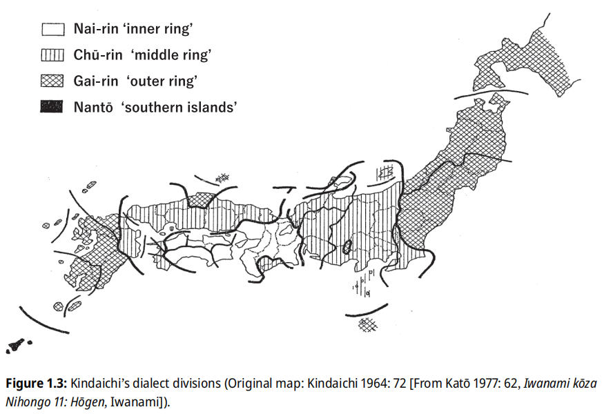 |
不同方言中相同词汇可能有不同的含义，这种差异可能由传播失真或方言自身发展导致。例如，「冻疮」一词在日本海侧为「雪焼」（yukiyake），太平洋侧为「霜焼」（simoyake），反映了气候差异对词汇的影响。在一些互不相连的地区，却存在一致的古老或创新特征，将这些现象简单归因于平行且独立的发展是难以令人信服的。藤原（1951）提出，日语方言曾分为「表日本」（太平洋沿岸）和「里日本」（日本海沿岸）两大群，里日本方言的现代边缘分布是表日本方言扩张的结果。这一假说对构建方言树有重要意义，但现代方言区划中常被忽略。
| 说明 | 图（点击放大） |
|---|---|
| 表里日本方言 Kibe, Nobuko, et al., editors. Handbook of Japanese Dialects. De Gruyter Mouton, 2025. Handbooks of Japanese Language and Linguistics, vol. 7. Figure 1.12: Isogloss band III “North-south isogloss band” (From Abe 1999: 14, Tamamo 35). |
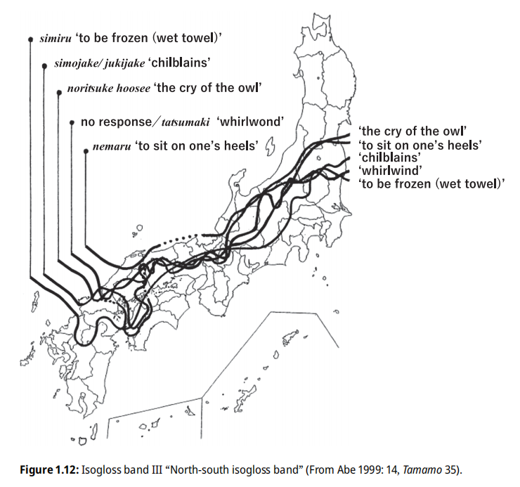 |
外轮方言与里日本方言存在较大重叠，表明促使金田一划分周圈的共有特征与划分表里日本的共有特征相似，但二者仍存在根本差异：逐渐被边缘化的里日本方言的相似性是继承的结果。虽然不同地域展现的类似的词型或发音变化可能是独立平行发生的。但将平行、独立演化作为日本语言变迁的核心机制，是对传统比较语言学通过识别追踪共享创新来确定语言或方言亲缘关系的背离。
音调分布符合方言周圈论模式。地处中心的京阪式被东京式环绕，东京式按地理分布分为内轮、中轮和外轮。区分的根据是词尾 /H/ 调的失落原因，这导致了调类合并模式的差异。内轮东京式的音调合并源于中央日本的单音节词元音延长，外轮东京式的边缘分布可能由长期人口迁移和交流导致。外轮东京式中存在一种特殊调式（外轮东京式 B），将高元音音节上的 /H/ 调转移至后续非高元音音节，分布于出云和东北部分地区（下北半岛和东岩手部分区域除外）。西南九州的鹿儿岛式是一种高度简化的外轮东京式，其音调不与特定音节绑定，而是作用于整个词语，并与东北九州的外轮东京式存在对应关系。类似的「词调」也出现在琉球语中。九州鹿儿岛式与外轮东京式之间的冲突导致了中间区域的无型音调区。此外，无型音调还出现在其他的方言接触区域，尽管在许多方面保留了许多古老特征的远离本土的八丈方言，也使用无型音调。
根据 Ramsey 理论，东京式中 /H/ 调的有无源于中古时期 /H/ 调的限制过程。外轮东京式与鹿儿岛式在调类合并模式上的对应关系表明，外轮东京式的形成早于鹿儿岛式转变为词调，甚至早于琉球祖语从九州向琉球扩散的时期。如果将琉球式中独特的调类分裂模式简单归因于日琉祖语，会导致不切实际的音调祖型推测。de Boer 推测，鹿儿岛式可能曾经历过一个三词调阶段。在向二词调简化的过程中，一种既保留了三词调特征又部分融入二词调创新的方言可能扩散至琉球群岛并延续下来，从而阻隔了本土日语的进一步影响。
de Boer 方案
de Boer（2020）的全新划分方案是传统的日琉语方言区分的突破。她通过分析方言间的共通特征，提出了划分方言分支的标准。她指出，方言分支通常通过「共同的创新」来识别，但当某些创新过于普遍，而古老特征仅在少数方言中残留时，这些古老特征反而成为划分方言的关键，这支持了方言周边论的观点。
在方言分类上，de Boer 借鉴了东条的区划，也提出了独特见解。她认为，除了现代八丈方言外，关东、越后、长山静（TSOJ 继承者）和伊豆方言也应被视为 EOJ 的继承者。此外，她不认同仅因琉球语保留了古老特征就将琉球祖语与日本祖语并列，而是主张将琉球祖语置于九州-琉球方言群中。九州和琉球的一些共享词汇可追溯至 17 世纪萨摩入侵，但大多可以追溯到琉球祖语。
de Boer 还正式划分了出云-东北分支，并分为保守和革新两个子分支。她推测，沿日本海沿岸曾存在古里日本方言，但后来被以 WOJ 和 EOJ 为代表的古表日本方言所取代。东北地区的方言多样性较低，可能是因为该地区原本是 Ainu 人的居住地，与讲日琉语的人融合较晚。此外，外轮东京式和中轮东京式之间长达 200 多公里的过渡区可能暗示了两种移民来源：来自出云的讲外轮东京式方言的移民（经海路）和来自中部的讲中轮东京式方言的移民（经陆路）。
de Boer 给出的用以划分方言的特征有：
- 音段音韵学：p1a 区分 PJR *ui, *oi, *ǝi；p1b 区分 PJR {*ui, *oi}, *ǝi；p2a 存在高元音清化倾向；p2b 无高元音清化倾向；p3a 单音节词元音延长；p3b 独用单音节词元音延长；p4 /e, o/ 略高；p5 词首、元音后 /i/ 低化 > /e/；p6 词首、某些辅音后词首 /u/ 低化 > /o/；p7 高元音央化；p8 舌冠音后高元音合流；p9 保留鼻冠浊塞音；p10 词中 /t, k/ 浊化；p11a /e/ 高化 > [ɨ]；p11b /e/ 高化 > [i]；p12 /o/ 高化 > [u]；p13 /ki/ 腭化 > [kɕi̥, tɕi̥]。
- 超音段音韵学：t1 2.2/3, 3.2/4 调类合并；t2 2.1/2, 3.1/2 调类合并；t3 /H/ 调右移（被高元音阻止）；t4 /H/ 调左移；t5 /H/ 调左移（远离高元音和浊辅音）；t6 保留 2.5 调类；t7 无型音调；t8a 音节调转变为词调（2 型音调）；t8b 音节调转变为词调（3 型音调）；t9 2.3, 2.4/5 调类分裂。
- 形态学：m1a 动词否定 -anai 系（上代为 EOJ -anap-）；m1b 动词否定 -an(u) 系；m2a 元音型动词命令形 -ro；m2b 元音型动词命令形 -yo；m2c 元音型动词命令形元音延长；m2d 元音型动词命令形 -re；m3 保留形容词连体形 -ke；m4 保留动词连体形尾 -o；m5a ワ（ハ）行四段动词连用形促音便；m5b ワ（ハ）行四段动词连用形ウ音便；m6 形容词连用形ウ音便；m7a 形容词终止形 -ka；m7b 形容词终止形 -sa。
表格 | 日琉语方言的区分与特征比较
表格 | 日琉语方言特征分布分析汇总
表日本方言
表日本方言包括东日本方言和西日本方言。
表日本方言
├ 东日本方言
│├ 伊豆诸岛方言
││├ 北部伊豆方言：东京都伊豆诸岛中，御蔵岛以北的有人岛（大岛、利岛、新岛、式根岛、神津岛、三宅岛、御蔵岛）。
││└ 八丈岛方言：东京都伊豆诸岛所属的八丈岛、青ヶ岛。
│├ 关东方言
││├ 关东方言
│││├ 西关东方言：栃木县南西部（足利市附近）、千叶县、东京都（岛屿部除外）、山梨县郡内地方（笹子峠以东）、群马县、埼玉县、神奈川县几乎全域。
││││└ 标准语
│││└
房总半岛方言：千叶县。
││└ 越后方言：新潟县旧越后国，即佐渡岛除外的新潟县本土地域及粟岛。
│└ 长野-山梨-静冈方言：长野县、山梨县、静冈县。
└ 西日本方言
├ 北陆方言：新潟县佐渡岛、丝鱼川市旧青海町、富山县、石川县、福井县岭北地方。
├ 岐阜-爱知方言：岐阜县、爱知县。
├ 近畿方言：近畿地方（大阪府、京都府、兵库县、和歌山县、奈良县、滋贺县、三重县）大部分及福井县岭南。
│└ 十津川方言：十津川。
├
四国方言
│├ 东-南四国方言
││├ 东四国方言：香川县、徳岛县、南部除外的爱媛县。
││└ 南四国（高知）方言：西部除外的高知县。
│└ 西四国方言：爱媛县南部、高知县西部。
└ 中国方言：山口县、岛根县西部（石见）、广岛县、冈山县、鸟取县东中部（因幡、伯耆东部）、兵库县北部（但马）、京都府北部（丹后西部）
前 2 世纪左右，日琉祖语从九州传播到本州和四国。日语的发展通常聚焦于主流本土方言（两大表日本方言下位分支）的演变。在江户时代之前，以近畿地区（上代为飞鸟、奈良，中古起为平安京（即京都））为中心的方言为主流；江户时代起，以西关东（以江户为中心）的方言为主流，并逐渐发展为现代标准语。随着时代推进和中央政府的影响，方言的音变和语法变化也适用于许多不同区域的方言。
上代日语的官方文书使用上代中央方言（WOJ, Western Old Japanese），在 740 - 760 年间因政权更迭从飞鸟方言转变为奈良方言。二者的主要区别在于前期的飞鸟方言区分甲乙「mo」，以及一些动词词形的差别。WOJ 中存在朝鲜语借词，与中世朝鲜语交流频繁，其继承者是中古（平安京）日语（EMJ），现代近畿方言的前身。以下 WOJ 文献体现了不同的方言：
飞鸟：《古事记》、《上宫圣德法王帝说》、?《风土记》、宣命、延喜式祝詞
奈良：《佛足石歌》、《日本书纪》、《万叶集》、《续日本纪》、正仓院文书、《日本灵异记》、《神乐歌》
上代东国方言（AOJ, Aduma Old Japanese）见于部分上代文献，如《万叶集》十四・东歌、二十・防人歌、《常陆国风土记》《东游歌》《古今和歌集》，涵盖信浓、远江、骏河、相模、甲斐、上野、武藏、下野、常陆、上总、下总、陆奥共十二国（「东方十二道」）的方言。Kupchik（2023）通过比较方言特征的分布，将 AOJ 进一步分为上代远骏方言（TSOJ, Topo-Suruga Old Japanese）和狭义的东国方言（EOJ, Eastern Old Japanese）。TSOJ
分布于信浓、远江、骏河；EOJ 分布于相模、上野、武藏、下野、常陆、上总、下总、陆奥。EOJ 内部还可划分为西部方言（相模、上野）和海岸部方言（武藏、下野、常陆、上总、下总、陆奥），海岸部方言中又可区分出三个小分支。EOJ 中存在 Ainu 语借词，而 TSOJ 更接近 WOJ，不共享 EOJ 的特征，因此 TSOJ 实际上是 WOJ 的一个分支。能登可能也曾使用东国方言。
表格 | 《万叶集》十四、二十的东西方言分布
现代东西方言的差异主要有：语音方面，西日本方言的 /u/ 的圆唇化，以及以畿内为中心向外辐射的京阪式音调、单音节词元音延长，均为创新特征。语法方面，只有否定、命令的同言线可以追溯到上代东西方言的区别。EOJ 的其他大部分特征未能传承到现代，即使传承下来，也仅见于少数方言岛，如八丈、北部伊豆诸岛的利岛、新潟（越后）的秋山乡、山梨（甲斐）的奈良田、静冈（远江、骏河、伊豆）的井川。现代日语的大部分语法形式（如断定、存在动词、动词进行和完了的区分、两种可能的区分、意志-推量-劝诱、顺接和逆接）的同言线与上代方言无关，且大多不能追溯到
14 世纪之前，因为这些特征多与畿内辐射的语言影响有关，似乎也比上古更偏西了。
表格 | 东西方言的主要差异
中部方言群是东西日本的过渡区域，构成了东西方言的连续体。东西方言的词汇和语法同言线束主要集中在日本阿尔卑斯山和丝鱼川-浜名湖线一带。1908 年，国语调查委员会的报告以越中（富山）、飞驒、美浓（岐阜）、三河（爱知）为界，划分了东西方言的差异，例如（西 | 东）：借 karu | kariru；曾孙 himago | hiko；畔 aze | kuro；眼 me | manako（爱知、三重边境附近的揖斐川）；否定 -anu/-an | -anai（亲不知-长野县南部-大井川）；元音型动词命令形 -yo | -ro（丝鱼川-长野县南部-静冈县中部）；存在动词 oru | iru（亲不知-长野县南部-浜名湖）；形容词连用形 -u | -ku（丝鱼川-长野岐阜县境-西三河）；断定 -ya | -zya/-da（亲不知-长野岐阜县境-岐阜爱知县境）；恐怖的 osorosii | oQkanai（丝鱼川-浜名湖）；烟 ke{m,b}uri | ke{m,b}u；茄子 nasubi | nasu；七日 nanuka | nanoka；后天 siasaQte | yanoasaQte；咸的 (sio)karai/karai | syoQpai、酸的 sui(i) | suQ{k,p}ai等。五十岚阳介（2018）主张，日琉语的原乡可能位于北九州以东、四国、中国、北陆越中以西，东山道和东海道以西的区域，这一区域可能也是上代中央方言和出云方言的核心地带，五十岚阳介（2022）将「曾孙」一词的界限定义为广义东日本方言的最西端，其以东属于「扩张东日本语族（拡大東日本語派）」；而丝鱼川-浜名湖线则为核心东日本方言的最西端，其以东属于「核心东日本语族（中核東日本語派）」。丝鱼川-浜名湖线也是长山静方言和岐爱方言的分界线，de Boer 体系将长山静方言划归东日本方言，岐爱方言划归西日本方言。
中部方言群是东西日本的过渡区域，构成了东西方言的连续体。东西方言的词汇和语法同言线束主要集中在日本阿尔卑斯山和丝鱼川-浜名湖线一带。1908 年，国语调查委员会的报告以越中（富山）、飞驒、美浓（岐阜）、三河（爱知）为界，划分了东西方言的差异，例如（西 | 东）：借 karu | kariru；曾孙 himago | hiko；畔 aze | kuro；眼 me | manako（爱知、三重边境附近的揖斐川）；否定 -anu/-an | -anai（亲不知-长野县南部-大井川）；元音型动词命令形 -yo | -ro（丝鱼川-长野县南部-静冈县中部）；存在动词 oru | iru（亲不知-长野县南部-浜名湖）；形容词连用形 -u | -ku（丝鱼川-长野岐阜县境-西三河）；断定 -ya | -zya/-da（亲不知-长野岐阜县境-岐阜爱知县境）；恐怖的 osorosii | oQkanai（丝鱼川-浜名湖）；烟 ke{m,b}uri | ke{m,b}u；茄子 nasubi | nasu；七日 nanuka | nanoka；后天 siasaQte | yanoasaQte；咸的 (sio)karai/karai | syoQpai；酸的 sui(i) | suQ{k,p}ai 等。五十岚阳介（2018）主张，日琉语的原乡可能位于北九州以东、四国、中国、北陆越中以西，东山道和东海道以西的区域，这一区域可能也是上代中央方言和出云方言的核心地带，他（2022）将「曾孙」一词的界限定义为广义东日本方言的最西端，其以东属于「扩张东日本语族（拡大東日本語派）」；而丝鱼川-浜名湖线则为核心东日本方言的最西端，其以东属于「核心东日本语族（中核東日本語派）」。丝鱼川-浜名湖线也是长山静方言和岐爱方言的分界线，de Boer 体系将长山静方言划归东日本方言，岐爱方言划归西日本方言。
东西日本的用词并非完全对立，由于迁徙和交流，双方的用词都能在对方的部分区域中出现。例如，山梨县国中地区的否定形式是 -an，爱知县西北部的断定形式是 -ya，岐阜县东南部则是 -da。越后平原不仅有形容词连用形的ウ音便，还存在岐阜和爱知所缺乏的ワ行四段动词连用形的ウ音便。西日本语法的传播路径主要有两条：一种是途径岐爱方言-长山静方言（意志 -zu，推量 -zura,-ra, -dara, -darazu）的陆路，另一种是途径北陆方言-越后方言-北东北方言（意志 -u，推量 -darou，顺接 -sakai, -suke 等）的海路。
出云-东北方言
出云-东北日本方言包括保守的出云-东北方言和革新的出云-东北方言。由于出云、东北、九州、琉球的音调合并模式一致，出云-东北分支和九州-琉球分支同属更高级的分支：里日本方言。
出云-东北方言
├ 保守的出云-东北方言
│├ 下北半岛-东岩手方言：下北半岛、东岩手。
│└ 出云周边方言：仓吉、石见。
└ 革新的出云-东北方言
├ 东北方言
│├ 北东北方言：青森县、岩手县中北部（旧南部藩领）、秋田县、山形县庄内地方、新潟县阿贺北地域（北越）。
│├ 南东北方言：岩手县南部（旧仙台藩领)、宫城县、山形县村山、置赐、最上、福岛县。
│└ 东关东方言：茨城县、栃木县（南西部的足利市附近除外）。
└
中央出云方言：岛根县东部到鸟取县西部、隠岐岛。
上代出云方言主要见于地名，《三国志》记载的「投馬」可能指「出雲」 OJ idumo1 (< *id-u(ro)-kumo) ，可能体现 PJR *-k > 出云 Ø，这个现象也见于部分岛根县地名：秋鹿 aika < *aki-ka、意宇 ou < *oku（《出云国风土记》），以及九州的大分 ooita < *ǝpǝ-kita。半岛日语也有类似现象，如：居尸（心，*kǝr < *kǝkǝrǝ）、達（岳，*tal < *taka.y）也表现出了类似的特点；代词如「彼方」konata
明显来自 *kǝ-n(ǝ) (k)ata < *kǝ-nǝ kata（> PR *ko-n(o) kata > OR kogata）；一些词中的 -y- 可能也来自早期的 /k/ 音脱落，如：笛 fue < OJ puye < OJ *puk-u ye；刃 yaiba < OJ *yak-i ba。/k/ 音脱落并不是朝鲜语历史上的主流音变，结合出云的引国神话，可能是半岛日语和上代出云方言的一个早期特征。
出云和东北的音系存在较深的一致性，其中一个显著特点是「外轮东京式音调」。外轮东京式的四个边缘区域分布可能源于人口迁移而非独立平行的发展。前 1 千年，讲日琉祖语的人群从朝鲜迁至九州，传播了语言和农业。通过濑户内海，内轮东京式祖型传播至中国、四国和近畿地区，导致其与北九州的音调祖型分离，/H/ 调右扩形成外轮东京式祖型。由于弥生人向西南九州的扩张被熊袭、隼人阻挡，他们转向东北九州，这就建立了东北九州的外轮东京式地区。另一批弥生人可能沿日本海海岸迁至出云沿海平原，这就建立了出云的外轮东京式地区。出云与中国其他地区被山地隔开，可能受到早期移民的保护。内轮和外轮东京式祖型的差异或许反映了不同朝鲜移民群体及其扩张路线：第一批沿九州-濑户内海路线，第二批沿九州-日本海路线。弥生时代早期结束时，移民已到达名古屋，此后扩张放缓。弥生中期，最后一次迁徙可能来自九州，避开了濑户内海沿岸已定居的内轮东京式农民，沿日本海海岸抵达名古屋以东的边界。此后，内轮东京式人群继续向关东和南东北扩张，外轮东京式人群在东北定居。
出云和东北方言（以及能登方言，较小的程度上）的相似性表明，这些地区可能经历了两次沿海岸线的人口迁移：一次从出云到能登半岛（越国地区），另一次从出云到北东北（出云、能登、北东北的共通特征：① 高元音央化；② e, o 略高；③ 词首、元音后 i 低化 > e；④ 舌冠音后高元音合流。出云、北东北的共通特征：① 词首、某些辅音后词首 u 低化 > o；② ki 腭化 > [kɕi̥], [tɕi̥]；③ 2.1/2, 3.1/2 调类合并；④ 被高元音阻止的 /H/ 调右移；⑤ 元音型动词命令形 -re）。弥生中晚期，出云的四隅突出型坟丘墓传播至北陆地区（经出土测定为 100 - 250 年），表明能登半岛的出云式音系可追溯至该时期，但出云式音调（外轮东京式B）尚未形成，导致能登与出云-东北的分歧。引国神话也暗示了出云-越国间的人口迁移，及出云可能的势力范围。第二次迁移跳过能登半岛表明，这些音韵创新产生于从弥生时代向古坟时代过渡之后（6 世纪末 - 7 世纪初）的出云地区。
东北的外轮东京式 A/B 并存可能暗示了不同时代的出云移民，因为出云的政治和经济中心曾有东西部的波动。出云的外轮东京式 B 也可分为多种变体，在西部最古老，可能起源于西部小区域，后向东传播。Boiko（2018）记录到，下北半岛的外轮东京式 A 已消失并转为 B，表明 B 型仍在向东扩散。东北的无型音调区包括东关东、南东北的太平洋侧，后者反映为中轮东京式和外轮东京式 B 的混合，但并未崩溃。
新潟西部的稻农不太可能讲出云式方言，因为当地未发现出云式墓葬。如果新潟受到出云音系的影响，那也是古出云方言的影响，因为北陆未出现类似外轮东京式 B 的创新。古出云方言可能通过新潟传播至中部和关东地区，并在上代以后传至东北。Piggott（1989）将古出云分为东部和西部，弥生晚期出云独特的墓葬文化让位于文化和政治入侵（吉备的前方后圆坟）。6 世纪前，东出云和北越保持着贸易关系，但 540 年代，出云首领们已与倭国结盟。古出云人可能为避开倭国压力，沿日本海海岸向北迁移，通过盆地和关口扩散的方言影响（倭方言）不如沿海到达东北北部的方言（出云方言）显著。两类操不同调式的人群相遇，产生了混合调式或无型音调区域。
考古学上，5 世纪前北东北和北海道的陶器类型相同，但 5 - 7 世纪后，这种陶器在北东北消失，仅见于北海道，表明续绳文人可能从本州北方迁至北海道，可能是为了避开倭国的扩张。5 世纪晚期至 6 世纪后期，北东北无人居住，之后新的人口到来，与日本其他地方的古坟人无异。如果这些新人口是古出云人，他们可能迅速扩散至北东北的空白区域，这也解释了出云调式在北东北的保存，而中、南东北则因其他方言和续绳文人语言的干扰而不同。东北方言内部多样性较低，可能是因为日语在东北的传播较晚。
虽然没有直接考古证据表明，北东北的新移民来自出云，但语言学证据得到了音乐学与遗传学的佐证：音乐学家小岛富子（1991）指出，民谣音阶是歌曲中最不易变化的元素之一，因此可能具有古老渊源；岛根县出云地区的民谣音阶与邻近山口县、广岛县形成鲜明对比，却与东北地区日本海沿岸的秋田县完全吻合。斋藤（2017）提供了一个显示出云人相对于冲绳人和关东人的位置的 PCA（核 DNA 主成分分析），显示出云人与东北人在遗传上具有相似的相对位置，低于本土日本人的平均值。
倭人从飞鸟时代阿倍比羅夫征讨虾夷、肃慎的时期进入北海道地区。到平安时代末期，他们逐渐定居于东北地区到渡岛半岛南部（上之国町、江差町）。到江户时代，渡岛半岛南部基本被倭人占据，形成了具有浓厚北东北方言色彩的北海道沿岸部方言，其中，渡岛半岛长万部町以南及各沿岸地带的渔村中使用的语言被称为「浜话（浜言葉）」。此外，北前船海运的发展使北海道方言词汇受到北陆方言和近畿方言的影响。明治时代以后，为形成互通语，基于东北方言和北陆方言发展出接近标准语的北海道内陆部方言。
九州方言・琉球语
九州方言・琉球语
├ 东九州（丰日）方言
│├ 东北九州（两丰）方言：福冈县东部、大分县。
│└ 东南九州（日向）方言：诸县地方（都城、小林周边）除外的宫崎县（旧丰前国、丰后国、日向国）。
└ 西-南九州方言
├ 西九州（肥筑）方言：今福冈县西部的筑紫国（筑前国、筑后国）、今佐贺县（包含壱岐、対马）和长崎县的肥前国、今熊本县和大分县日田市近郊的肥后国（古肥国）。
└ 南九州方言
├ 南九州（萨隅）方言：鹿儿岛县（奄美群岛除外）、宫崎县诸县地方（主要是都城市、小林市等）。
└
琉球语
├ 北琉球语群：奄美群岛、冲绳群岛。
│├ 奄美语
││├ 喜界方言：喜界岛。
││├ 北奄美大岛方言：奄美大岛北部。
││├ 南奄美大岛方言：奄美大岛南部、加计吕麻岛、请岛、与路岛。
││├ 德之岛方言：德之岛。
││├ 冲永良部方言：冲永良部岛。
││└ 与论方言：与论岛。
│└ 冲绳语
│ ├ 北冲绳方言：冲绳本岛北部及北部离岛。
│ └
中南冲绳方言：冲绳本岛中南部及中南部离岛。
└ 南琉球（先岛）语群：先岛群岛（宫古群岛、八重山群岛）。
├ 宫古语
│├ 共通宫古方言
││├ 中央宫古方言：宫古岛、大神岛、来间岛。
││└ 伊良部-池间方言：伊良部岛、池间岛。
│└ 多良间方言：多良间岛。
└ 广域八重山语
├ 核心八重山语：与那国岛以外的八重山群岛。
└ 与那国语：与那国岛。
表格 | 琉球语方言点
琉球语部分参考：Pellard 2009，北琉球根据 Ethnologue，南琉球根据 Lawrence 2000、Kenan Celik 2020。
琉球群岛的农业传播较晚，考古植物学证据显示，九州至琉球南部的农业经历了多个阶段。稻作农业虽在前 1 千年到达九州，但数世纪后才传到南九州。尽管弥生时代的陶器和贝壳贸易已出现在奄美和冲绳，但稻作农业并未因此发展。7 世纪时，稻作农业传到种子岛，8 - 12 世纪传到奄美群岛，10 - 12 世纪传到冲绳群岛，12 - 13 世纪传到先岛群岛，两个群岛之间的时间延迟了 1 - 2 个世纪。这一过程是欧亚大陆温带和亚热带地区最近的初级农业扩散之一。牛、马、山羊和鸡似乎与谷物一同传入琉球群岛，农业的引入导致中世琉球的鱼类消费量有所下降，渔猎文明向农业文明发展。
中世，除了稻作农业，铁器、纺锤轮和新的食器也向南传播。琉球的贸易货物具有国际性，主要食器包括长崎产的皂石坩埚、龟烧陶器（源自朝鲜）和宋朝贸易陶瓷。12 世纪，这些食器出现在南琉球，表明贸易范围向南扩展。喜界岛、种子岛的御城遗迹中发现了来自鹿儿岛的陶器（須恵器）碎片，这些陶器的生产中心位于萨摩更南边的万之濑川，是自青铜时代至中世的与琉球贸易的枢纽，也是隼人氏族的中心。大宰府在喜界岛建立据点的主要目的是控制当地资源，而喜界岛的定居也促进了农业的引入和贸易的扩散。11 世纪时，喜界岛摆脱了大宰府的控制，成为一个独立的贸易中心。
琉球语从九州-琉球祖语分离后，使用者扩散到琉球群岛。琉球群岛并未被纳入平安时代的日本，因此未采用标准日语。琉球祖语的扩散可能通过贸易词汇而非混合语言实现，其底层可能受到当地狩猎采集者语言的影响。琉球语形成独立分支，表明其定居过程可能在较短时间内完成，而非通过多次移民浪潮。早期中古汉语借词在琉球方言中的规律性反映（如「棒」EMJ baũ > PR *bau > 首里 bóo；大神 pau；与那国 bú），表明九州-琉球的语言接触至少持续到 9 世纪，估计的分裂时间预计在
8-13 世纪之间，这一时期日本本土因流行病、饥荒和生态退化导致人口增长停滞或下降。古代 DNA 分析显示，宫古岛农民的基因组中约 20% 来自绳文人，表明新的种群在 10 - 17 世纪之间到达琉球。这种奠基者效应导致琉球方言从祖语快速分化，而九州祖语最终在日本势力影响下转向本土日语。
现代九州方言保留了九州-琉球祖语的底层。琉球语与九州方言属于同一语言分支的证据是基于词汇、音韵和语法方面的共同创新：
词汇方面，农业词汇显示琉球、九州和本土方言共享了许多词汇，如农作物、种植工具和粮食生产术语。12 世纪以前的琉球贸易商品名称也属于日琉系。《万叶集》中记载了极少数的九州歌谣，「木」ke2 与 EOJ ke2、PR *ke 一致（/*əi/ > 九州 *ɛ；琉球 *e（更可能为 *ɛ > *e））。琉球语和九州方言存在许多共通的创新词汇，包括工具、容器、动物肉、鱼名和野生植物名称等。《大隅国风土记》中记载的 OJ pi1si（暗礁）疑与 Ainu 语 pis（海滩）相关，这可能暗示隼人曾使用一种与
Ainu 语有关的语言，九州-琉球祖语或有绳文语底层。与日琉祖语保持连续的农业词汇表明对农业的继承；海鲜相关词汇揭示了九州方言和琉球语之间的丰富共性，表明其文化更海洋化、航海化。
音韵方面，词首辅音为浊的频率有所增加，通常这些词没有明显的日琉同源词。九州方言-琉球语共通的音韵创新为：① 单音节元音延长；② 西南九州、琉球的 2.1/2, 3.1/2 调类合并、转变为词调；③ 甑岛、琉球的 2.3, 2.4/5 调类分裂。
语法方面，本土的宾格 -o 在九州、琉球、一些东北地区为 -ba，或有关联（-o <? *wa，甚至可能与通古斯宾格 -wa ~ -wǝ（板橋 1988、Martin 1988）有关）；OJ 的强调宾格 -woba 可能保留了两种形式 -o 和 -ba。OJ 向格 -pe1 是名词 pe1（边）的语法化形式，PKR *-kape 似乎是包含老位格 *ka（名词 ka（地点、位置）的语法化形式）与 OJ -pe1 的形式，该词存在前置了与格 *-ni 的扩展形式 *-nikape。语法结构角度上，九州和琉球保留了日琉语原来的简单/特殊疑问句标记的区别：前者用 -ya，后者用 -ka。用于简单疑问句的 *-na，可能代表了琉球和鹿儿岛及其离岛（如上甑岛）的共同创新。OJ kara（氏族，关系，性格）在本土语法化为离格标记，但九州和琉球都语法化为移动工具标记（如用于车辆，功能上与离格有联系）；OJ naru（成为）, EMJ owosu（完成）分别语法化为能力助动词 *nar-, *oyos-，并有一个共通的目的性结构，包括一个被向格标记 *-ka / *-kape 和移动动词接续的系词。
根据 Jarosz（2019），琉球与南九州的鹿儿岛和诸县之间存在最厚的词汇层，尤其是在离岛：种子岛、屋久岛、吐噶喇群岛、甑岛（Jarosz 将九州-琉球进一步细分出萨隅-琉球、萨隅岛屿-琉球、吐噶喇-琉球层次）。这一结果支持了九州-琉球祖语起源于南九州方言的一个亚群。喜界岛可能是琉球祖语的原乡，而琉球语的一些特性可能继承自非日琉语（如绳文语）底层。
由于冲绳和宫古之间存在巨大的语言断层，琉球语通常被分为北琉球（奄美-冲绳）方言群和南琉球（先岛）方言群。与那国语与这两组方言群的关系不甚明确：语音上与两者不同，词汇上接近八重山语。有学者（平山、大島、中本、Thorpe）认为与那国语构成琉球语的第三分支，而另一些学者（上村、狩俣）认为它是南琉球语群的分支。Pellard（2009）基于共享词汇创新，将与那国语与八重山语合并为广域八重山语。类似地，狩俣（1999）基于音系相似性，提出了德之岛以南到北冲绳的方言分支（冲永良部与论冲绳北部诸方言），但
Pellard（2015）认为这些相似性是地域特征或独立发展，并基于词汇特征将奄美与冲绳的分界线划定在与论岛与冲绳群岛之间。这一方言群可能与历史上琉球国北山的扩张有关。
附记：记载中的琉球人口迁移
- 伊良部岛佐和田：1686 年来自来间岛、伊良部岛的移民。长浜是来自佐和田的移民。
- 石垣岛白保：1713 年来自波照间岛移民建立的村落，1771 年乾隆大海啸（明和の大津波）后村落几乎全灭，琉球国再次派遣照间岛移民重建村落。
- 伊良部岛国仲：1737 年来自池间的移民。
- 久米岛仲里村：18 世纪中叶来自首里、那霸的移民。
- 伊良部岛仲地：1766 年来自伊良部的移民。
- 水纳岛：1771 年大海啸后来自多良间的移民。
- 石垣岛宫良：1771 年大海啸后来自小浜岛的移民。
- 首里到地方：琉球国末期（明治初期）的移民。
- 宫古岛西原：1874 年来自池间的移民。
- 久米鸟岛：1903 年来自硫黄鸟岛的移民。
- 宫古岛高野：1961 年来自水纳的移民。
同言线的自然基础
以上部分提到的：日本海沿岸-太平洋沿岸方言区分、「逆周圈论」的中轮-外轮方言区分、东日本-西日本方言区分、内轮东京式-中轮东京式方言区分的同言线，存在地理背景，说明了自然屏障对构造方言边界的作用：
- 一月零度等温线（南北文化差异线）：划分日本气候类型的关键界线，大致沿北纬 38° 线分布，将本州岛划分为南部（亚热带季风气候）和北部（温带季风气候）两大气候区。该线的北部与柏崎-千叶构造线东部部分重合，这也是表里（狭义）方言、日本海沿岸-太平洋沿岸方言的区分依据：出云、新潟、东北方言在此线以北。该线可能解释日语中的 k/h 交替：北 k | 南 h（琉球 k/p），引起这种交替的辅音，在 PIE 中对应的是 *kw。在中国亦有类似的现象：秦岭-淮河线（北纬 32° - 34° 线）同时是一月零度等温线，也是区分河流后缀（北 | 南：河・沟 | 江・溪）的同言线。这种同言线将国家整体上分为南北两种有差异的文化，中国和日本的该文化差异线可能是连续的。
- 柏崎-千叶构造线：新潟县柏崎市到千叶县的大断层线，是区分西关东・越后-东关东・东北方言的同言线，「逆周圈论」区分中轮-外轮方言的东北边界，中央地沟带的东缘。该构造线两端的考古遗址呈现差异，反映了不同社群的特征，且东侧体现的是后弥生时代的特征。结合可能的东北人群史，该线可能代表了来自中央的人群定居的东缘，以及来自出云的人群定居的西缘。同时，该线的南北区分了河流（西 | 东：谷 tani | 川 kawa）与湖泊（池 ike | 诏 numa）后缀。中央地沟带被认为是亚欧板块与北美板块的交界带，地表
- 丝鱼川-浜名湖构造线：简称丝静线，从新潟县糸鱼川市亲不知通过诹访湖至静冈县静冈市安倍川的本州的大断层线，中央地沟带的西缘，是区分东日本-西日本方言的同言线。
- 中央文化扩散区：如果将内轮东京式与京阪式的地理范围合并，则该区域存在共同特征：单音节词元音延长、连续元音融合长音化情况少，且「数数」的动词用 yomu，而非 kazoeru。该区域可能代表了上代的中央文化及其扩散区域。琉球也有单音节词元音延长、「数数」用 *yom- 的共性特征，但前一特征应为独立发展，后一特征则为存古。
| 说明 | 图（点击放大） |
|---|---|
| 南北文化差异线 Kibe, Nobuko, et al., editors. Handbook of Japanese Dialects. De Gruyter Mouton, 2025. Handbooks of Japanese Language and Linguistics, vol. 7. Figure 1.13: Composite borders of languages, culture, and climate in Asia (From Abe 2013a: 509, Tōyō Bunka Kenkyū 15). |
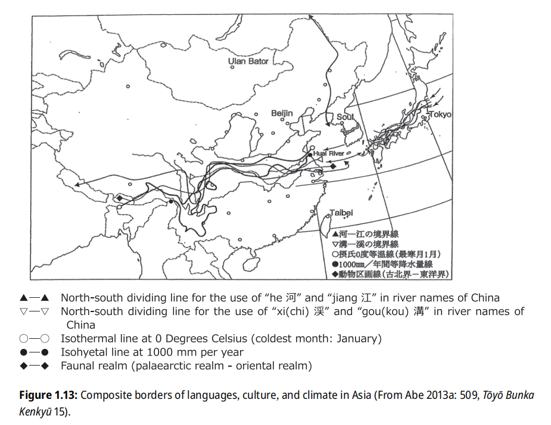 |
| 柏崎-千叶构造线（左侧虚线）、中央地沟带（左侧虚线与中间实线之间的区域）、丝鱼川-浜名湖构造线（中间实线）、中央构造线（横向实线） Kibe, Nobuko, et al., editors. Handbook of Japanese Dialects. De Gruyter Mouton, 2025. Handbooks of Japanese Language and Linguistics, vol. 7. Figure 1.9: Kashiwazaki-Chōshi line (Dotted line: Topological structural line between the Tone River and Kashiwazaki, Niigata Prefecture) (From Maekawa 1977: 23, Nihon no shokubutsu kukei, Tamagawa daigaku shuppanbu). |
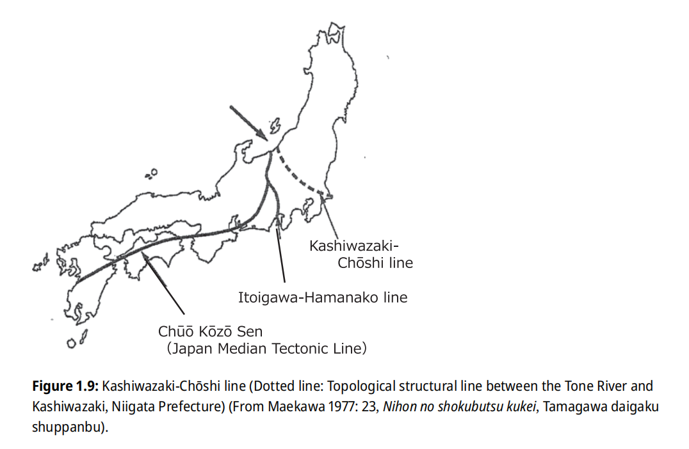 |
以上是陆地上的区分线，还有海上的区分线：关门海峡-丰后水道区分了九州方言和西日本方言，奄美海峡区分了日语和琉球语。
现代方言格局的形成
日琉语方言的发展大致可分为三个阶段：上代及以前、上代至中世、中世及以后。每个阶段的方言演变都与当时的人口迁移、地理环境、政治格局以及文化交流密切相关。
上代及以前：前 10 世纪，日琉语进入北九州（列岛日本祖语），在朝鲜半岛残留（半岛日语），8 世纪以前，/R/ 和 /LH/ 调后单音节助词 /L/ 调失落，产生外轮东京式，出现内外轮方言（表里方言）的区别（对应同言线：南北文化差异线）。出云音系（包括外轮东京式）通过人口迁移和贸易关系，从北陆向东传播至东北区域，并在内部产生创新后继续东传（对应同言线：柏崎-千叶构造线）。东北方言进一步将出云音系传播到东关东区域。这一阶段的方言分布格局与出云人群的迁移密切相关，奠定了日琉语方言区分的第一层基础。
上代到中世：4 大分支可能分别代表日琉语与异族语的融合：东部的 Ainu 人、九州的隼人、出云的朝鲜半岛移民。随着倭国对南九州的征服，向南九州传播的外轮东京式失去了音调与特定音段的联系，转变为对应的二型式词调，甚至在某些区域产生了三型式词调的方言。与此同时，讲内轮东京式的人群东迁，因为地理隔离、Ainu 语影响，东、西日本在音系和语法上逐渐产生分歧（对应同言线：丝鱼川-浜名湖构造线）。东日本的语法特征向东传播至东北，而西日本的语法特征向西传播至九州。此外，东日本的一些特征通过出云、北陆、东北之间的人口迁移和贸易关系，也传播到了出云。本土产生了现代方言区分的雏形。10
世纪，琉球祖语也开始传播到琉球群岛。在不同调式方言的接触区域，音调系统因混淆而崩溃。这一阶段的东西方言分布格局与倭国人群的迁移、地理隔绝以及琉球祖语的传播密切相关，形成了日琉语方言区分的第二层基础。
中世及以后，各地方言继续发展。中央区域的语言变化逐渐传播并影响到邻近区域（对应同言线：内轮东京式的边界）。琉球语经历了元音音变，与本土方言的互通性降低。同时，创新的出云音系继续向东传播。这一阶段的方言分布格局与中央政府影响力的增强、地方主义的兴起、地理隔绝的加剧以及地域间交流的强化密切相关，形成了日琉语方言区分的第三层基础。
日琉祖语（PJR, Proto Japonic / Proto Japanese-Ryūkyūan）
├列岛日本祖语（ProtoIJ, Proto Insular Japanese）
│├内轮日语 / 表日本祖语（POJ, Proto Nairin Japanese / Proto Outer Japanese / Proto Omote Japanese）
││├广义的上代东国方言（AOJ, Aduma Old Japanese）、狭义的上代东国方言（EOJ,
Eastern Old Japanese）
│││└东日本方言（EJ, Eastern Japanese）
││├上代远骏方言（TSOJ, Topo-Suruga Old Japanese，属于 AOJ 但不属于 EOJ）
││└上代中央方言（WOJ, Western Old Japanese）
││ └西日本方言（WJ, Western Japanese）
│└外轮日语 / 里日本祖语（PIJ, Proto Gairin Japanese
/ Proto Inner Japanese / Proto Ura Japanese）
│ ├上代出云方言（IOJ, Idumo Old Japanese）
│ │└出云-东北方言（IJ, Inner Japanese / Ura Japanese）
│ └九州琉球祖语（PKR, Proto Kyūshū Japanese-Ryūkyūan）
│ ├上代九州方言（KOJ, Kyūshū Old Japanese）
│ │└九州方言（KJ,
Kyūshū Japanese）
│ └琉球祖语（PR, Proto Ryūkyūan）
│ └琉球语（R, Ryūkyūan）
└半岛日语（PenIJ, Peninsular Japanese）
在 JLVDB 中，本体系将会根据本土形式构拟表日本祖语（POJ）形式，根据琉球语形式构拟琉球祖语（PR）形式，结合两者进一步构拟日琉祖语（PJR）形式。
表格 | 方言词汇或特征
标准语
从定都平安京到江户时代前半，中央方言以京都方言为代表。17 世纪初，德川幕府成立后，江户方言因政治中心的转移而地位提升，但京都方言仍被上流精英视为标准语。参勤交代制度使各阶层人群涌入江户，使其成为潮流文化和娱乐业的中心，而大阪则成为商业和贸易中心。这种背景分别塑造了江户方言和大阪方言。
18 世纪中期，基于京都、三河等西日本方言的江户方言形成，带有明显的西日本特征，成为东日本方言中的方言岛。江户方言融合了多种方言元素，出现多样来源的敬语词。它逐渐被上层武家和受教育的中层使用，形成山手话（山の手言葉）；而町人（城镇居民）使用的部分则形成了江户话（江戸言葉、下町言葉）。两种方言除了部分词语音调不同外，山手话敬语体系发达，保留了西日本式的形容词连用ウ音便（如「-gozaimasu」），而江户话则较为粗俗（如影响到茨城方言的「べらんめえ調」）。山手话成为现代标准语的基础，但江户方言中许多特征也未被标准语吸收。
历史假名遣的多样性导致日语书面语和口语的分离。19 世纪后半叶，日本开国后与西方接触增多，为推进现代化，1860 - 1910 年代展开了关于如何书写当代语的讨论。1887 年，二叶亭四迷的《浮云》成为第一部白话文现代小说，此后报纸（-de aru 句型）、课本等更多采用白话文。文语在二战前仍被部分使用（报纸、二战的官方文书、政府令），直到战后才被彻底废除。标准语在这样的背景下正式确立。
1895 年，上田万年首次在论文《为了国语（国語のため）》中使用「国语」一词，此后该词被借用于朝鲜语。国语的概念和白话文运动推动了语言标准化，即选定一种优先语言用于公共、教育和国家象征。然而，1898 年的方言扑灭政策导致传统方言衰退。1901 年，教育部要求学校教授东京山手话。1902 年，大槻文彦发布标准日语语法（《口语法》（1916）、《口语法别记》（1917））。标准化和口语化虽取得成功，但也导致 20 世纪前半叶部分方言消失。
尽管方言词汇显著标准语化，但年轻人仍保留方言的语法和音调。标准语和方言中都产生了新词（若者言葉、書生言葉、てよだわ言葉、ギャル語），许多方言特征如今仅在高龄层中使用。在东京，原东京（江户）方言逐渐被淘汰，西关东方言、原东京方言和标准语融合，形成了新的「首都圈方言」，取代了原东京方言。
表格 | 首都圈方言与邻近方言对比
音韵
上代特殊假名遣
现代日语的元音系统非常简洁，只有 5 个音位 /a, i, u, e, o/。然而，上代日语的音假名记录表明，上代某些辅音与 /i, e, o/ 组成的音节各区分两种，即「上代特殊假名遣」（桥本近吉），说明上代日语存在八个元音的区别，区分两种的 /i, e, o/ 通常分别记作「甲、乙」或「1, 2」，其中只有 i1, o2 是真单元音，其他都有单元音或双元音的来源（传统上，不带辅音的单音节
e2 对应 e 甲，e1 对应 e 乙（也可以分别记作 e 和 ye））。通过与汉字表记的比较分析，猜测甲乙元音的发音可能为：i1 /i/, i2 /wi ~ ɨ/, e1 /ye/, e2 /ɛ/, o1 /wo/, o2 /ǝ/。
日琉祖语的元音
上代特殊假名遣的存在表明，日琉祖语的元音系统需要进一步构拟。学界对此有不同观点，本体系采用Whitman（2012）的六元音学说，将日琉祖语的单元音构拟为六个：*a, *i, *u, *e, *o, *ǝ。由于中元音 *e, *o 在本土方言和琉球语中的表现差异显著，这为部分单词构拟中元音提供了依据。过去曾有四元音说。仅含 *a, *i, *u, *ǝ，上代
e1/2, o1/2 皆被视为后起的（通过连续元音融合），这种分析忽视了琉球语的中元音证据。
Frellesvig 和 Whitman（2004）曾根据一些 *əi > WOJ i2, e2 的例子提出 *ə 可能有两种形式：他们把 > i2 的拟为 *ɨ，> e2 的拟为 *ə，认为 *ɨ, *ə 在中世朝鲜语中可能分别与 u [ɨ] 和 o [ʌ] 对应，但其前提是日语和朝鲜语之间确实存在词汇对应关系。
日琉祖语中存在一些双元音，但并非所有元音都能结合成双元音。重要的双元音包括：*ai, *ui, *oi, *ǝi, *ia（部分 *i 可能来源于辅音，这时记作 *y）。不常见的双元音有：*iǝ, *au, *ua, *uǝ, *ea, *ǝe 等。
元音同化
上代日语的元音展现出类似「阿尔泰」语言的元音和谐特性（有坂・池上法则）：
- オ列甲类音和オ列乙类音不能共存于同一个「结合单位」内。
- ウ列音和オ列乙类音很少在同一个「结合单位」内共存。特别是两个音节的结合单位没有例外。（例外：tuyo2-（強））
- ア列音和列乙类音很少在同一「结合单位」内共存。（例外：maro2-（円），该词干会被影响为 *maro1，然后抬升为 maru-）
但这种「元音和谐」实际上是元音同化的结果，与其他「阿尔泰」语言、朝鲜语相比显得作用范围有限：
- 作用于词根元音之间，不涉及不同词根（词干）复合的情形。
- 作用于词根元音与派生后缀之间（特别是动词），但不作用于词根元音与屈折语法后缀之间，暗示语法后缀最初可能被视为复合词的一部分。
在这种元音和谐中，a 与 u, o1 被归为一组，表现为后元音，但在动词对派生词缀的元音选择以及零星的 a ~ o2 交替来看，a 又显示出央元音的性质。此外，元音和谐还表现出不对称性：o2 自成一组，与 a, u, o 对立，i, e 为中性。词干中「甲乙 o 不能共存」即「共存的 o 多为 o2」这一限制进一步指向 o2 的特殊性质：中央元音同化（另外一种观点是：o1 与 o2 呈现互补分布，实为同一音素。但 o1 又与中元音抬升和元音融合过程有关，本体系视作不同音素）。允许与 o2 共存的元音通常是 i1，且大多数方言保留了同化后的形式，说明这一过程发生在很早的时期。
元音同化有以下几种方式：
- 中央元音同化：*C{a, u, o}Cǝ, *CǝC{a, u, o} > *CǝCǝ > Co2Co2。这是导致 OJ 元音和谐的决定性原因。
- 异元音中和：*CV1CV2 > *CǝCǝ > Co2Co2。如 *CaCu > *CǝCǝ > Co2Co2。
- 央元音交替：*CaCa > *CǝCǝ > Co2Co2。
其他元音也能引起同化，尤其是 a：如 OJ akatuki1（晓） < *aka-toki < *aka-tǝki（赤+时）。这个例子说明一些元音同化过程早于中元音抬升。
中元音抬升
上代日语经历了中元音抬升（MVR, Middle Vowel Raising），在不同方言中，其发生时间和情况并不一致。大部分非词尾中元音 *e, *o 在 WOJ 中分别抬升为 i1, u，这一过程导致中元音的空缺，随后被单元音化的 PJR 双元音填补。TSOJ 的 MVR 更为广泛，如骏河地区可能发生了完全 MVR。EOJ 则存在延迟，保留了部分 WOJ 中 MVR 发生前的形式。这些情况表明，MVR 可能起源于中部地区，且程度为：中部 > 西部 > 东部。EMJ 也保留了部分 WOJ 发生 MVR 前的形式，说明 EMJ 并非完全继承自 WOJ 的飞鸟、奈良方言，可能也吸收了其他地区的方言特征。
本体系认为，*ai > OJ e2 ~ i2 的现象，或许也可用 MVR 解释。
一般认为琉球语的 MVR 发生在 17 世纪左右，*e 在北琉球语群中抬升为 /ï/ [ɨ]（德之岛以南到冲绳的方言中进一步 /ï/ > /i/），在南琉球语群中抬升为 /i/；*o 抬升为 /u/（但奄美在部分情形中保留了中元音）。这一过程导致许多环境下 *i/*e, *u/*o 分别合流。原有的元音区别往往会在辅音上留下痕迹。但是，精密的比较显示，琉球语疑似在早期也经历了
MVR，即在琉球祖语时期，*oi 已抬升为 *ui，少数词汇将 *e/*o 分别抬升为 *i/*u。发生完全 MVR 的时期可能标志了琉球语从古琉球语时期到中古琉球语时期的转变。南琉球的完全 MVR 也导致了高元音的进一步前移。
九州方言有时也发生 MVR；/e/ > /i/ 也见于伊豆诸岛（新岛本村方言（高龄层）只在长 /e/ 保留 [e]，短 /e/ > [i]）。出云、北陆、东北、北海道沿岸部的中元音 /e/ [e̝], /o/ [o̝] 略高。
连续元音的单元音化
日琉语禁止元音连续，连续的元音会通过缩减或融合最终导致单元音化。
元音缩减存在八种情形：
- 形容词词干 + 名词
- 形容词连用形 + 动词
- 助动词 + 动词
- 名词 + 名词
- 助词 + 名词
- 助词 + 动词
- 动词 + 动词
- 其他情形
WOJ 中具体的缩减方式有：
- 单音节词 + 多音节词：V1 + V2 > V1
- 多音节词 + 任何词：V1 + V2 > V2
- 元音相同：V1 + V1 > V1
这个例子存在两种缩减方式：我が家 wa ga ipe1 > wagape1 ~ wagi1pe1。
AOJ 缩减后主要保留 V1。缩减规律为：
表格 | AOJ 中的元音缩减
如果 V1 + V2 > V3，那便是融合。连续元音融合存在三种情形：
- 助动词 + 助动词
- 名词 + 动词
- 辅音脱落引起连续元音序列
琉球祖语也发生了连续元音融合，而且与 WOJ 存在一些区别。即 *ǝi > *e。WOJ *ǝi > e2 ~ i1 的元音可能是：i1 是 e2 发生 MVR 后的形式。琉球语的连续元音融合可能也与本土一样，经历了中间阶段：*{u, o}i > *ï; *{a, ǝ}i > *ɛ，然后 *ï > *i，*ɛ > *e（即琉球祖语）。
单元音化的融合元音原本或为长元音，但日琉祖语的元音长度可能不具备区分性。引起元音融合的情况包括形态学变化和词间复合：
- *ai, *ui, *oi, *ǝi 的 *-i 可以来自：
① 动词及物性转换派生后缀 *-Ci-，或形容词名词化后缀 *-Ci，来源于此的双元音音节位于词尾：*aCi, *uCi, *oCi, *ǝCi
② 弱化的辅音 *y，不清楚为词根的一部分还是后缀，来源于此的双元音音节位于词尾：*a.y, *u.y, *o.y, *ǝ.y
③ 复合环境中，后一词的词首 *i：*a#i, *u#i, *o#i, *ǝ#i
（关于几个同音 /-i/ 后缀的区别：造成前一元音脱落的，用元音 *-i；造成与前一元音合并的，用音节 *-Ci 或弱化辅音 *y，*y 只用于名词。） - *au 的 *-u 来自：
弱化的辅音 *w，可能来自 *m - *ia, *iǝ, *ua, *uǝ, *ea, *ǝe 来自：
复合：*i#a（*-动词连用形-a...）, *i#ǝ（日置 *pi-ǝk(ǝ)-i）, *u#a（数 *kaNsu-apa-Ci-）, *u#ǝ（倭文 *siNtu-ǝr(ǝ)-i）, *e#a（*-形容词已然形-a...）, *ǝ#e（大石 *ǝpǝ-eso.y）（*ia > WOJ e1, EOJ a; *iǝ > WOJ e1; *ua > WOJ o1; *uǝ > WOJ o1; *ea > WOJ e1, EOJ a; *ǝe > WOJ i2）
*i#a 的情形多见于语法。
甲乙元音及合流
上代特殊假名遣未能完全区分所有音节的甲乙元音，表明上代已出现甲乙合流元音现象。根据中世的元音记载和方言表现，单独的 /i, e, o/ 在中古至中世的发音分别为 /i/, /je/, /wo/，这反映了上代进入中古时甲乙合流后的发音，也是 i1, e1, o1 的推测发音。即：甲乙合流可视为乙音向甲音的合并。基于此，本体系对上代不分甲乙的 /i, e, o/ 不注序号，其发音与甲音相同。甲乙元音合流的现象从西到东、从上代到中古愈发显著，表明其可能起源于关东并向西传播。飞鸟 WOJ 保留了最古老的甲乙对立体系。920 年后，甲乙元音完全合流。早于 800 年，甲乙 i 合流，词中甲乙 e 合流；早于 950 年，甲乙 o 合流，词首甲乙 e 合流。
- 飞鸟 WOJ
i2 > i1 / {s, z, t, d, n, y, r, w} __
e2 > e1 / {s, z, t, d, n, y, r, w} __
o2 > o1 / {p, b, w} __ - 奈良 WOJ。在飞鸟 WOJ 的基础上：
o2 > o1 / m __ - TSOJ。在奈良 WOJ 的基础上：
o2 > e2 / {s, z, t, d, n, y, r} __
e2 > e1 / {p, b, k, g} __
骏河 TSOJ，在以上基础上：
o2 > e2 / {k, g} __
TSOJ 是一定程度上混同 o2, e1, e2 的方言。 - EOJ。在奈良 WOJ 的基础上：
i2 > i1 / {p, b, k, g} __
e2 > e1 / {p, b, k, g} __ - PR, EMJ。在 EOJ 的基础上：
o2 > o1 / {k, g, s, z, t, d, n, y, r} __
表格 | 甲乙元音的合流
元音的发展
表格 | 元音的发展
*e, *o, *ai, *ǝi, *ui, *oi, *ia 在不同分支中的反映是关键的：
- *e, *o 与 MVR 过程有关。
- *ǝi 在 WOJ 也经历了 MVR。
- *ui, *oi 在 WOJ, PR 中因 MVR 混同，但 EOJ 中区分。
- *ia 在 WOJ 与 EOJ 中有不同的反映。
Tyler Lau（2015）认为琉球语波照间、竹富方言在 /k/ 后可能存在 PJR *i, {*ui, *oi}, *ǝi 的对立。然而，Pellard（2016）提供了更多的例子，说明波照间和竹富并不存在上述对立，而是存在以下对立：
PJR *kǝi > PR *ke > 波照间、竹富 ki
PJR *k{Ø, u, o}i
> PR *ki > 波照间 kï、竹富 ki / { # __ *{p, t, s, k}, # *{p, t, s, k}{i, u, e, o} __ # }; 波照间 sï、竹富 si / 其他
连续元音的单元音化、MVR、甲乙元音合流、上代汉日音对元音的使用频率产生影响：
表格 | 《万叶集》的元音数量
近世前，/se, ze/ 是腭化的 [ɕe, ʑe]。近世时，大部分方言中的 /e, se, ze/ 去腭化。腭化的 /e/ 在九州方言（高龄层）中残留，腭化的 /se, ze/ 在九州（高龄层）、出云、中国东山阴、近畿郊区、东北方言中残留，奈良田分别变为 [θe, ðe]
| 说明 | 图（点击放大） |
|---|---|
| /se, ze/ 的方言反映 Kibe, Nobuko, et al., editors. Handbook of Japanese Dialects. De Gruyter Mouton, 2025. Handbooks of Japanese Language and Linguistics, vol. 7. Figure 4.10: se / ze (From Uwano (ed.) 1989: 36, Nihon hōgen on’in sōran, Shōgakukan). |
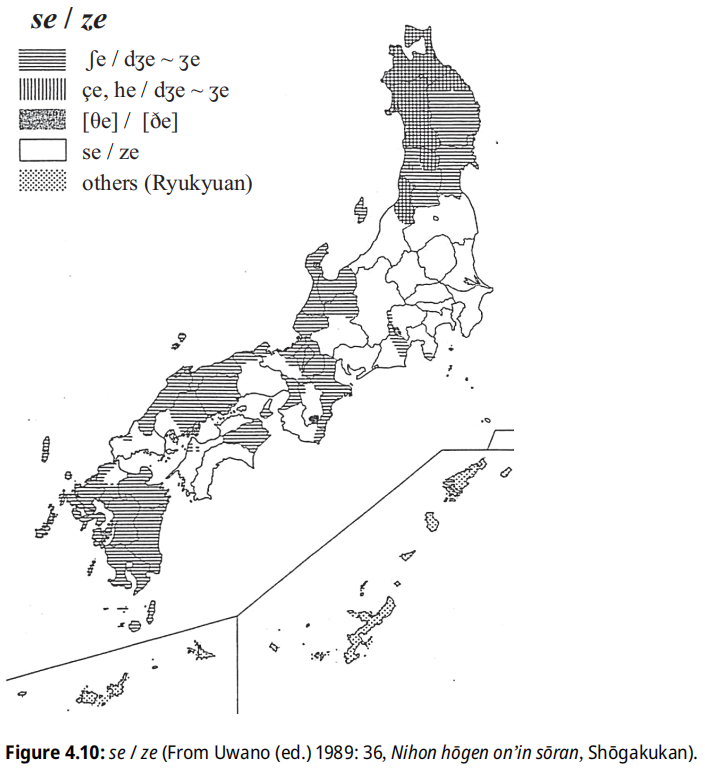 |
高元音清化倾向
东北大部分地区（秋田、青森除外）、北海道沿岸部、能登半岛（石川、富山）、关东、十津川、岛根半岛（松江、出云）、九州方言以及琉球语中，高元音在清塞音之间或词尾清塞音后有较高的清化倾向。高元音清化的最早记载出现在中世传教士文献中，表现为省略尾元音 /i, u/。中世纪朝鲜语对音文献中，用复写辅音提示高元音清化。
高元音清化倾向分布广泛，甚至出现在语言岛十津川，暗示清化可能是日语的原始性质，而浊化则可能源自中央日本。因此，上代日语的高元音清浊性可能是自动确定的：
{i, u} > {i̥, u̥} / {C̥ __ C̥, C̥ __ #}; > {i, u} / 其他
但在中央区域（影响至长山静），清浊高元音合流为浊高元音。名古屋有较高的清化倾向。
这种倾向一方面与元音长度有关，Han（1962）数据显示，若将 /u/ 的平均时长定义为 1.00，则则其他元音的平均时长分别为 /i/ 1.17, /o/ 1.26, /e/ 1.37, /a/ 1.44，表明高元音相对较短，更易清化。同时，这种倾向也与元音强弱有关，这些地区的高元音可能比非高元音更弱，也促使其清化。
Vance（1978）指出，某些方言中非高元音也可能清化，如南琉球语群的顺行清化。其他方言中，如标准语，非高元音在清塞音之间虽然可能清化（常见于首音节中，可能是由于词首辅音的送气化引起），但并非系统的音变，而且频率很低。如果后续元音是非高元音，有促进前一非高元音清化的倾向。
标准语中，不同辅音对高元音清化频率也施加影响（木村等 1998）：
- 最常：塞擦音/摩擦音 __ 塞音/塞擦音
- 适中：塞音 __ 塞音/塞擦音/摩擦音
- 频繁：塞擦音 __ 摩擦音、摩擦音1 __ 摩擦音2
- 不常：摩擦音1 __ 摩擦音1
进一步，藤本（2004）发现了高元音清化频率更低辅音序列：塞音/塞擦音/摩擦音 __ /h/。前川（2009, 2011）发现倒谱距离（cepstrum distance）对高元音清化频率的影响：倒谱距离是衡量两个信号之间相似度，该值越低，说明两个辅音听起来越相似，高元音清化频率就越低。他进一步发现 /h(j)/ 虽然会抑制高元音清化，但是这个语音与塞音/塞擦音/摩擦音的倒谱距离却很大。生理学上，发清化元音时，声门处于打开状态（声门开口呈现单相模式），利用气息而非声带发音，而 /h/ 在整个发音过程中声带会持续振动，这解释了为何元音后的 /h/ 会抑制元音清化。声门开口的单相模式是元音清化的典型特征，见于常见的清化场景中，而双相模式，则见于非典型或非清化场景中。
定量分析中（前川 2005），若高元音后的辅音是促音，清化频率也会受影响，但因人而异：
- 最常：摩擦音 __ Q塞音
- 最罕：摩擦音 __ Q摩擦音
- 塞音 __ 塞音/塞擦音/摩擦音 > 塞音 __ Q塞音/塞擦音/摩擦音
处于浊音前的高元音也存在清化倾向，一个原因是敬体助词（desuyo, masuyo, masuwa）、一些高频词（kuru（来）, suru（為））的频繁使用。处于清辅音与浊辅音间的非高元音清化概率、处于浊辅音与清辅音间的高元音清化概率、处于浊辅音间的元音清化概率则极低。
清化元音常导致 /H/ 调（重音）位移，使方言对应关系复杂化。但这种清化似乎受 /H/ 调位置影响，而非相反。Martin（1952）指出，若元音本身带 /H/ 调，则不发生清化。即使清化，也不一定导致 /H/ 调位移，如：si̥'ku /HØ/（四九）, si̥ku /ØH/（敷）。实际上，带 /H/ 调的元音是否清化因人而异。生理学上，根据吉冈（1981）的研究，带 /H/ 调词汇的 PCA（环杓后肌）和 IA（杓间肌）的兴奋度均高于不带 /H/ 调词汇，高兴奋度的 PCA 会导致声门开口增大，推动清化，而高奋度的 IA 则会引发声门闭合，抑制清化，清化与否落实到 PCA 或 IA 哪方兴奋度更强。Han（1962）发现，清化现象常出现在带 /H/ 调的音拍的相邻音拍上。泽岛（1986）等论证带低音高的元音较带高音高的元音易清化。
语速也会引起元音清化。高元音的清化可以发生在正常语速中，在更快的语速中，清化在除 /o/ 外的非低元音中的频率会上升；较慢的语速中，元音清化会被抑制。生理学上，这种清化现象由两个声门开口状态的连续叠加所致，语速越快，开口间隔越短，直至合并。
在连续的可发生清化的环境中，发生清化和不发生清化的音节倾向于交替出现，且如果连续清化未发生，则首元音更易发生清化。在连续的可发生清化的环境中，仅有一个元音发生清化时，辅音的发音方式起着关键作用：若摩擦音与塞擦音/塞音结合使用，摩擦音后的元音更易发生清化；若两个辅音都是摩擦音，则第二个摩擦音后的元音更易发生清化；若环境存在三个音节涉及三个辅音，前二个辅音是摩擦音，第三个辅音是塞擦音/塞音，第二个元音更易发生清化，若第三个辅音是摩擦音，首元音更易发生清化。生理学上，连续元音清化中，第二个元音发生清化的元音由声门开口状态的延长导致，通常不会波及第三个辅音，这说明第一、二元音的清化机制存在差异，第二个元音清化与否取决于声门开口状态的延长程度，这解释了连续清化的非系统性。
方言中，高元音清化倾向进一步发展为高元音失落，导致所在音节发生促音化或拨音化，在词尾表现为闭音节化：
近畿存在 C{i, u} > {Q, n}C / __ {Ø, y}V 的促拗音或拨拗音化现象。
萨隅、五岛列岛方言的某些词尾高元音音节易脱落元音产生促音或拨音：
{k, g, t, d, z, b}{i, u} > Q ~
{k, g, t, d, z, b} / {Ø, C}V __ #
{n, m}{i, u, o} > n / {Ø, C}V__ #
长崎本土限于 /ru/：ru > Q / {Ø, C}V__ #
日本音声协会（1976）指出，词尾元音的清化或失落与否很难确定。Kawakami（1977），前川（1989）的案例表明，元音在摩擦音后更易失落，在塞音、拗音、腭化辅音后更易清化。除日常高频使用的「desu」和「masu」外，词尾元音清化的现象并不具有系统性特征，这或许表明辅音与停顿之间的元音清化更可能出现在短语尾而非词尾。
日琉祖语的辅音
日琉祖语的辅音系统可从上代日语推导，但上代的鼻冠浊音为后起的，日琉祖语中尚未出现。此外，日琉祖语遵循类似朝鲜语的「头音法则」，浊音和流音一般不出现在词首（拟声拟态词和汉借词除外）。通过比对汉字声母，推测上代的 /s/ 或为塞擦（[s ~ ts]），此假设或可解释部分 /s ~ t/ 交替。
表格 | 上代日语的辅音
连续辅音的单辅音化
日琉语禁止辅音连续，连续辅音会融合（如鼻冠清音变为鼻冠浊音）或缩减（通常缩减第一个辅音），最终导致单辅音化。
上古鼻冠浊音通过不定鼻音 *N + 清音 *{k, s, t, p} 产生，部分 *N 来自鼻音节缩减元音（有时可辨认来自nV或mV），部分与清浊交替表示义有关（如拟声拟态词）。
大多数方言中，鼻冠浊音存续至中世，在现代失去鼻冠性质。但亦有部分方言仍保留去鼻冠化前的状态：东北至东关东区域（包括北海道沿岸、东北全境、新潟北部、茨城大部分、栃木北部、千叶北部等）中，/b, d, z, g/表现为鼻冠音 [mb, nd, nz, ŋg]；当元音不清化时，词中的清音 /k, t/ 表现为浊音 [g, d]。十津川方言在词中保留鼻冠浊音，现代八重山小浜方言的浊塞音前仍带鼻音。中世纪的汉语或朝鲜语的对音文献中，日语或琉球语都存在鼻冠浊音；Ainu
语中的早期日琉语借词，也体现了浊音的鼻冠（记作鼻音+清音）特征。
东北存在鼻浊音 /g/ [ŋ ~ ŋg ~ ɣ]，亦在东北以西广泛分布，如新潟、群马、埼玉、标准语 /g/ [g ~ ŋ]；高知、纪伊半岛南部 /g/ [ŋg]（高知 /d/ [nd]，纪伊半岛南部 /z/ [nz], /d/ [nd]）；爱知县、中国、四国香川、爱媛、九州仅零星地点保留鼻浊 /g/。
在琉球语中，北喜界志户桶方言的词中 *g 为鼻浊音 ŋ，南喜界阿传方言则对元音施加鼻化。喜界方言常不完全遵循规律，可能因从奄美大岛借入而出现 /g/。
核心八重山语中，*g 在某些情形拨音化或失落：
*g > g / n __; > n / *{i, e, u} __ *{i, u, e, o, a}; > Ø / *{o, a} __ *{i, u, e, o, a}
石垣方言存在许多例外，可能是上流方言（那霸、首里）的影响。
与那国语中，词中 *g 在 *i 以外的元音前为鼻浊音
*ŋ。
| 说明 | 图（点击放大） |
|---|---|
| 词中 /g/ 的方言反映 Kibe, Nobuko, et al., editors. Handbook of Japanese Dialects. De Gruyter Mouton, 2025. Handbooks of Japanese Language and Linguistics, vol. 7. Figure 4.7: ga-column consonants (word initial / word non-initial) (From Uwano (ed.) 1989: 27, Nihon hōgen on’in sōran, Shōgakukan). |
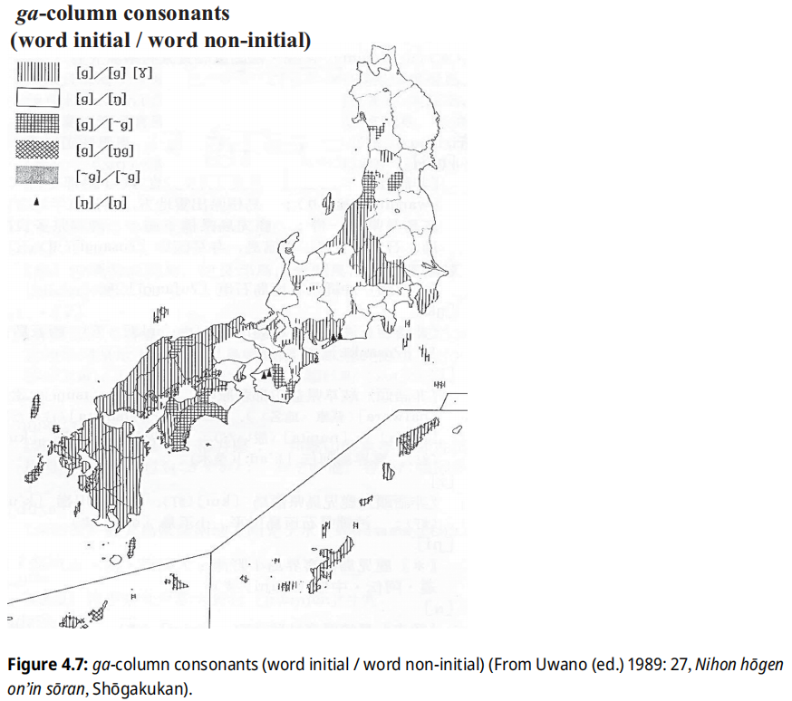 |
| 词中 /z, d, b/ 的方言反映 Kibe, Nobuko, et al., editors. Handbook of Japanese Dialects. De Gruyter Mouton, 2025. Handbooks of Japanese Language and Linguistics, vol. 7. Figure 4.8: Nasal on-glides with /za/, /da/ and /ba/ column syllables (non-initial) (From Uwano (ed.) 1989: 53, Nihon hōgen on’in sōran, Shōgakukan). |
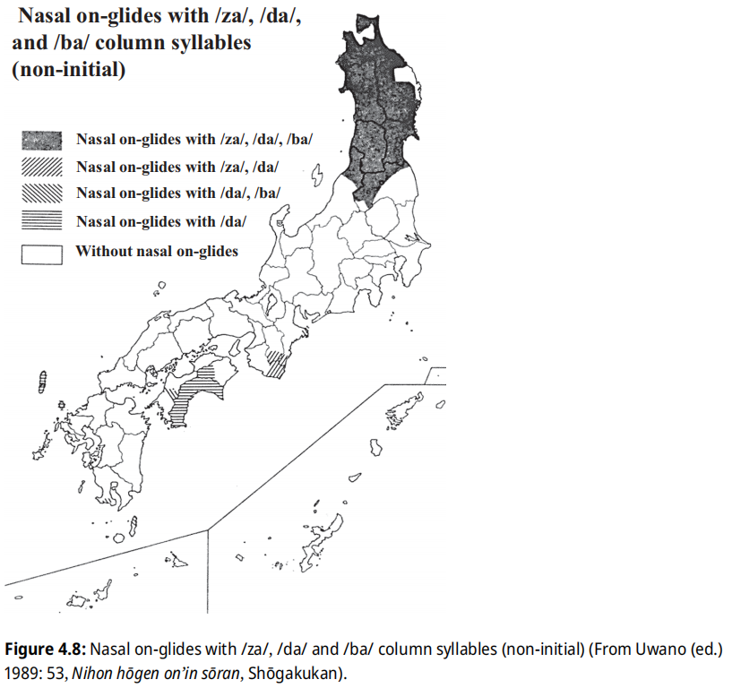 |
连续辅音的缩减与被覆形和露出形有关：一些词语由于携带尾 *y（会与前一元音融合），在与辅音起首的词复合时，上代以融合元音结尾的露出形会转换为以单元音结尾的被覆形：
*y > Ø（被覆形） / ... __ C; > *y（露出形） / 其他
如果表现为露出形，则涉及连续元音单元音化中的融合过程，在不同方言中存在不同的表现。
类似还有尾 *w，典型见于颜色词「白色」和「黑色」，不带 *w 的形式用作形容词词干，带 *w 的形式用作名词，与朝鲜的名词化后缀 *-{o,u}m 有关，因此也可写作 *m。此尾辅音与特殊的 2.5 调类有关，且不受禁止辅音连续规则的制约。
连浊
自上代起，复合词中就可能发生「连浊」。即复合词中处于非第一部分的复合成分的词首清辅音浊化的现象，其规律隐晦复杂，但并非无迹可循。连浊的主要目的是减少音节数量，尤其用于上代诗歌中以保持韵律性。其规律有：
- 形态学规律
① 鼻音节缩减引起连浊：语法助词（如属格 -ga（缩减为 -g-）, -no2，与格、列举 -ni、系动词 -n-i（连用，如动词符合时）, -n-o2（连体，如名词 + 动词转成名词复合时，动词 ≤ 2 音节且名词充当连体修饰语）等）或复合词第一部分的末尾鼻音节缩减元音后，后续清音发生顺行浊化。名词重复表示复数时的连浊可解释为隐含了列举 -ni。
② 名-动复合词引起连浊：表示「做某事」的名-动复合词：名词 no/ga 名词/动词；名词 wo/ni 动词）会引起连浊，而其他形式则不会。
③ 前缀引起连浊：上代前缀 wo-（小）常引发连浊，但也存在不连浊的情况，可能来自 Ainu 语的 pon。 - 句法学规律
固定句型中：动词连用形 + -gatai/-gateni/-gate-；EOJ 中动词连用形 + -gane-。 - 义务的连浊
上代以后，早期形成的连浊词逐渐固化，随着时间推移，连浊条件变得不那么严格，可能通过清浊交替来区分词干不同的部分。实际上，有一些早期词汇已自身携带属格 -no, -tu 但仍发生浊化（ama-no2-gapa（银河）, -du-kara（< つ-から）），可能是类比推广了不同词干复合可能因修饰关系发生连浊的现象，导致连浊义务地用于区分不同来源的词干。 - 音便的影响
中古出现的浊音型音便会引起浊化。 - 汉字音鼻音韵尾同化
中古时，携带鼻音韵尾 /-ŋ, -m, -n/ 的汉字，音读带有尾鼻元音或拨音，会导致后续清音浊化。中世时，鼻音韵尾同化现象已较少发生。类似现象发生在固有词中，则为鼻化音便。 - 重复
除拟声拟态词以外，重复构词常发生连浊。 - 统计学规律
连浊的限制与阻止规律是基于统计学的：
① 语种限制：连浊主要发生在固有词之间。此外，部分常用的汉语词、少数早期外来词也可能发生连浊。
② 意义限制：表示并列关系的复合词通常不发生连浊。
③ 分支限制：≥ 3 个词语复合时，根据内部修饰关系决定在哪两个词之间发生连浊。
④ 形容词词干修饰名词，通常不发生连浊。
⑤ 莱曼法则（Lyman’s Law）：两个名词复合时，若其一已存在浊音，则一般不发生连浊；若第二部分已含浊塞音，连浊不发生。该法则适用于较古词汇、琉球语，不适用于汉语词、与人体相关的词汇。
⑥ 罗森规则（Rosen’s Rule）：两个名词复合时，第一部分为两拍以上，发生连浊的概率更高。部分名词与 ≤ 2 拍词复合时不发生连浊，但与 ＞ 2 拍词复合时会发生连浊，这种复合词的 /H/ 调通常在词首。
⑦ 地域限制：Thomas Pellard 统计发现，日语地名中的连浊主要集中在和歌山、福岛-山形周边区域。
嗓音起始时间
嗓音起始时间（VOT, Voice Onset Time，塞音除阻爆破时刻与声带振动起始时刻之间的时间差）是清浊辅音的基本特征之一：送气清塞音有正 VOT（声带振动起始时间晚于除阻爆破时间），浊塞音则有负 VOT（声带振动起始时间早于除阻爆破时间）。日语的浊音（浊塞音）则有负 VOT 或正 VOT，这与社会语言学因素（主要是地域和世代差异）有关，而与语音学因素（发音部位或后续元音）无关：发音部位或后续元音影响的是浊音中的正 VOT：软腭位置、后续元音为高元音，对浊音起始延迟（Voicing Lag）的影响最为显著（显著提高正 VOT）。
地域差异上，东北地区几乎不存在负 VOT 分布，而非东北地区则正负 VOT 皆有分布。世代差异上，孙辈的 VOT 高于祖父母辈，并且特别集中分布在正 VOT 上。性别差异上，男女性的 VOT 分布几乎完全重叠。乍一看性别并非与地域、世代同等影响 VOT 的音素，如限定地域为非东北地区，则可以观察到性别差异：女性的 VOT 普遍高于男性，且孙辈尤为显著。近畿地区的浊音正 VOT 化发生在 20 世纪 10 年代和 20 年代之间。
汉语冲击与非独立音节
为了模仿汉语发音，中古日语引入了非独立音节（bound syllables）：促音 /Q/、拨音 /-n, -m/、双元音序列中的第二元音 /-i, -u/、鼻元音 /-ĩ, -ũ/、拗音 /-{y, w, wy}V/：
- 促音源于汉字音清辅音音节相遇后元音缩减，首个清音变成喉塞音：入声韵尾音节 {-pV, -tV, -kV} > Q / __ {p, t, k, s}，与第二个清音结合后形成长辅音（促音 + 辅音 = 长辅音）。
- 拨音 /-n, -m/ 分别对应汉字音的鼻音韵尾 /-n, -m/。拨音 + 鼻音形成长鼻音，在鼻冠浊音未去鼻冠的时代，拨音 + 鼻冠浊音形成长浊音。中世合流为新拨音 /-n/ [n ~ m ~ ŋ ~ ɴ]，是一群位置音位变体集合，根据后续辅音位置确定。此过程导致吴音、汉音的 /-n, -m/ 尾汉字韵尾混同。现代日琉语中只有琉球语部分方言（南奄美大岛、宫古）保留 /-m/ 拨音。
- 双元音序列中的第二元音 /-i, -u/ 分别对应汉字音的元音韵尾 /-i, -u/。中世时，/-i/ 在接续 /i, e/ 后产生长元音；/-u/ 在接续 /u, o/ 后产生长元音，此过程为「连续元音融合长音化」的一部分。
- 鼻元音 /-ĩ, -ũ/ 对应汉字音的鼻音韵尾 /-ŋ/。/-ĩ/ 用于记录梗摄三四等字的汉音。中世分别与 /-i, -u/ 合流，进而导致汉日音的 /-i, -u, -ŋ/ 尾汉字韵尾混同、鼻性与非鼻性元音型音便合流。现代日琉语的鼻化元音仅在特定环境中出现。
- 拗音 /-{y, w, wy}V/ 体现汉字音的介音，包括开拗音 /-yV/、合拗音 /-wV/（只用于 /k, g/ 后）、二重拗音 /-wyV/（只用于 /k,g/ 后）。
连声
中古日语存在连声现象，出现在以 /m, n, t/ 结尾的汉字（即汉日音的 /m, n, tV/）与以 /Ø, y, w/ 开头的汉日音相遇时，前一汉字的韵尾辅音会变成后一汉日音的首辅音：
- -m > -mm / __ {Ø, y, w}：陰 om + 陽 yaũ（吴音）> 陰陽 omm-yaũ > ommyou
- -n > -nn / __ {Ø, y, w}：天 ten + 王 waũ（吴音）> 天王 tenn-(w)aũ > tennou
- -t > -Qt / __ {Ø, y, w}：雪 setu + 隠 in（汉音）> 雪隠 seQt-in > seQcin
《日葡辞书》记载中世日语存在 /-t/ 韵尾，朝鲜语对音文献也记录为 /-t/。现代平曲、谣曲中汉日音的 /t{i, u}/ 尾仍保留相关读法：「吞（nomu）」读法读作 [ʔn]，「詰（tsume）」读法读作促音 /Q/。连声现象说明了 /-t/ 韵尾的特殊性：假名的 tV 写法可能不是音系上的 /tV/，而是 /t/。
音便
非独立音节推动了音便的产生。音便即发音便利之意，原本的音节缩减为非独立音节，发生在高元音音节上，根据鼻性、元音或辅音型分为六种类型。音便最初多见于佛教文献，较少出现在 /rV, wV, yV/ 音节、诗歌中。尽管音便在中古才被记录，但可能源于上古，依据包括：
- 二段动词连用形无音便形，而四段动词有，区别在于元音的甲乙之分（i2 无音便倾向）；
- 中古词中 /p/ > /w/，但部分词语通过发生促音便或拨音便逃逸此过程，保留了词中 /p/。
表格 | 音便的种类与变体
元音型音便会因中世开始的连续元音融合产生长元音；浊音型音便导致顺行浊化；鼻化元音型音便与非鼻化元音型音便因鼻化元音消失而合流。中古发生音便的音节存在元音型和辅音型变体，或反映了中古东西方言的分化，因为现代东西方言的主要区别之一在于用言连用形的音便类型。有些方言（如中国）的ウ音便进一步演变为ア音便。
音便、连声、连浊统称连音。
Wenck, Frellesvig 用清音的词中浊化过程解释音便的产生以及词中ハ行转呼现象。但 Vovin 通过以下证据驳斥这一点：万叶假名古音 B 类对清浊的区分（A 类不分清浊），以及 Ainu 语的日琉语借词中对词中清音的忠实保留。
元音或辅音优势的对立
元音型音便和辅音型音便的对立反映了元音优势和辅音优势方言的对立，元音优势时，辅音脱落；辅音优势时，元音脱落。现代方言中，西日本是元音优势的，东日本是辅音优势的。这种对立在用言连用音便形上表现明显：
表格 | 现代方言的用言连用音便形
一些方言形式：
- カガ行四段动词：多地用イ音便；八丈岛、以茨城为中心的关东、南东北方言カ行用促音便，秋田、长野中南部、部分近畿等地方言用拨音便，飞驒也用非音便形；八丈岛中之乡、末吉、青岛、岩手县雫石町方言ガ行用浊化促音便（-giC > -gC > -QZ，对比其他区域为 -giC > -ĩC > -iZ）
- サ行四段动词：静冈以西（近畿、爱媛除外）方言多用イ音便，八丈岛方言表现为 i 失落。
- バマ行四段动词：多地用拨音便，富山五箇山、三重志摩、奈良南部、愛媛、高知、中国西部、九州方言为ウ音便，八丈岛、伊豆利岛、奈良田、井川、开田村、秋山乡、德山村、南伊豆町大濑方言为促音便。
- ワ行四段动词：东日本、山阴方言用促音便，西日本（山阴以外）、九州方言、琉球语用ウ音便。以爱知、岐阜、中越、北越、佐渡、富山为界，以东用促音便，以西用ウ音便。
- 形容词：西日本用ウ音便，东日本不发生音便。以丝鱼川-长野岐阜县境-西三河一线为界。
南琉球语群的四段动词连用形无音便形，而北琉球语群存在音便形（连用形 + te/ta 时 t 的变化）：
表格 | 冲绳语的四段动词连用音便形
这种对立也体现在 /u/ 的发音上：东日本（包括标准语）、出云、北陆方言为非圆唇且舌位更前的 [ɯ̟]（东北方言中进一步央化），西日本、九州方言、琉球语为比 [ɯ̟] 更圆唇的接近 [u] 的发音。
音节与音拍
日语语言学和诗学传统将音节（syllable）进一步细分为更小的时间单位：音拍（mora）。在许多方言中，音节和音拍的区别在音调规则中起重要作用：某些非独立音节（如拨音、促音以及双元音序列中的第二元音）虽然自成音拍，但与前一音拍共同构成音节，这些非独立音节承载 /H/ 调（重音）的能力因方言而异。上代日语尚未区分音节和音拍，中古时单音节词出现延长，但长短元音之间并无表意区别。音拍方言可能从中世开始出现。
从中世到现代，中央本州（中部到中国、四国）方言的发展表现为：拨音和双元音序列中的第二元音继续作为音调承载者，而促音虽不能承载 /H/ 调，但可作为时间单位（形成音拍）。例如，现代京阪式和许多中央东京式（内轮、中轮东京式）方言中，拨音和双元音序列中的第二元音能够承载 /H/ 调。根据金田一（1958），这些方言包括京阪式方言，以及东京式方言中的十津川、山口、冈山、兵库、四国、静冈（下田）、长野（部分）、群马（部分）、爱知（丰桥）方言。在这些方言中，京阪式的
/H/ 调出现在非独立音节上受到严格限制：该词必须以 /L/ 调起始，但名词复合过程可能使非 /L/ 调起始的词语的非独立音节获得 /H/ 调。在一些方言（如标准语）中，所有非独立音节均不能承载 /H/ 调，只有非独立音节前的音节能承载。类似地，名词复合过程也可能使长元音的第二个音拍承载 /H/ 调。还有一些方言中，非独立音节被大大缩短，双音拍的单音节听感类似单音拍的单音节。这些方言（语言）包括外轮东京式中的东北、新潟、岛根、十津川、东南九州、德之岛、与那国，这些方言（语言）被称为「音节方言」（柴田武
1962）。
以高元音 /i/ 结尾的「不完全相同的元音序列」被单音节化为双元音单音节，历史上位于第二元音的 /H/ 调转移到了第一元音上。而以非 /i/ 结尾的不完全相同的元音序列未被单音节化：/H/ 调仍能保留在第二元音上（如「家」 ie、「竿」 sao）。
许多日语方言的非独立音节能在大多数方面自成音节，是因为它们从音节上继承了时序和承载音调的功能，这些方言被称为「音拍方言」。在标准语中，音拍是一个独立的时序单位，但不是一个独立的承载音调的单位。非 /i/ 结尾的不完全相同的元音序列比 /i/ 结尾的序列的独立承载音调能力更强，这是音拍的音调承载能力随时间减弱的结果。现代东南九州和东北等音节方言的非独立音节失去了承载音调和时序的功能，这一过程可能是先失去承载音调的功能，然后失去时序功能。
由于现代方言在哪些音段可否承载 /H/ 调存在差异，带非独立音节的单音节词的方言音调对应关系较为复杂。金田一（1943）比较标准语、冈山和京都方言的音调，发现冈山和京都存在对应关系。
表格 | 东京、冈山和京都的带 -i 的单音节词音调
ハ行转呼与 /w/ 音衰弱
这两个变化代表了日本历史上的轻唇化和去唇化过程，贯穿自中古到近世。ハ行转呼是元音优势的音变，但在大部分方言中都发生了。
ハ行转呼的轻唇化过程始于中古：词首 /p-/ > /f-/ [ɸ]（约 1000 年，Frellesvig 认为可能发生在约 1300 年），词中 /-p/ > /-w/（早于 1000 年），但在拨音、促音后保留，并可能也保留在拟声拟态词中；有些词中 /p-/ > /f-/ [ɸ]。中世晚期传教士文献记载，词首ハ行被表记为 /f-/ [ɸ]，同时，为了表记外来语、拟声词等情况的
/p/，/p/ 音又被重新引入，这就是半浊音。近世（约 1700 年）发生了ハ行转呼的去唇化过程：
f- > h- [h] / __ {a, e, o}; > h- [ç] / __ i; > f- [ɸ] / __ u
可能引起词中 /p-/ > /f-/ [ɸ] 的原因：提示复合关系、中古 f/b/m 交替（实际上 f 可能是 b 的无浊点形式）、未参与ハ行转呼（在ハ行转呼前已不使用，辞典记载的是古代形式的转写形式；在ハ行转呼结束才出现，多为拟声拟态词）。
方言中，北东北、出云等地方言保留词首 /f/ [ɸ]，静冈县井川、八丈岛方言偶有词首 /p/ [p]。琉球语方言的 /fu-/ 现代都变成了为无对立关系的 [hu] 或 [ɸu]，其他元音前，喜界、与论到北冲绳、共通宫古到核心八重山保留了词首 /p/ 音，但词中 *p 经历了ハ行转呼的过程，失落或变成了 /w/（/a/ 前），琉球ハ行转呼可以追溯到 16
世纪，词中的变化早于词首的变化，许多词中的 *p 早早地轻唇化为 *w，参与了 /w/ 音衰弱的过程。与本土类似，词中 /Qp/ 保留了未转呼的 /p/。
/w/ 音衰弱的去唇化过程亦始于中古：w > Ø / (#) __ {i, u, e, o} （实际上 /o/ [wo]，即 /wo/ 与 /o/ 合流）的过程，词中的变化（12 世纪）先于词首的变化（14 世纪），具体而言：约 1000 年，词中 (w)o 合流；约 1100 年，词中 (w)i, (w)e 分别合流；约 1300 年，词首 (w)i,
(w)e 分别合流。近世，/o/ [wo] > [o]，现代部分方言保留了 /o/ [wo] 的读法。
中古的 /w/ 音衰弱尚未影响到 /kwa, gwa/ 合拗音，直至 19 世纪中期合拗音完全消失：w > Ø / {k, g} __ a。现代合拗音只在北东北日本海侧、越后、近畿郊区、出云、九州（高龄层）方言、琉球语（正月：首里 syoogwaçi）中残留。
琉球语也经历了类似的 /w/ 音衰弱过程，词首在北琉球与喉塞音音位对立，在南琉球塞化成 /b/；词中在前元音前失落，后元音前会失落或者参与到连续元音融合长音化过程中。
| 说明 | 图（点击放大） |
|---|---|
| /kwa/ 的方言反映 Kibe, Nobuko, et al., editors. Handbook of Japanese Dialects. De Gruyter Mouton, 2025. Handbooks of Japanese Language and Linguistics, vol. 7. Figure 4.9: Syllables corresponding to historical kana spelling kwa (From Uwano (ed.) 1989: 28, Nihon hōgen on’in sōran, Shōgakukan). |
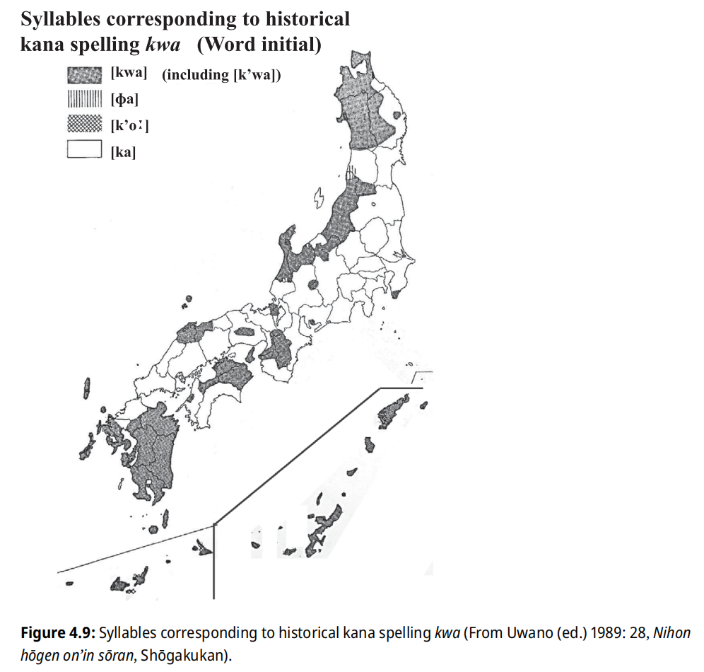 |
单音节词自动元音延长
单音节词的元音延长现象在中央日本和琉球独立发生。内轮东京式（如十津川、能登）和京阪式（如京都、和歌山、兵库）方言中，单音节词的元音不论是否独立都会自动延长；而中轮东京式和濑户内海岛屿上的京阪式方言则仅在独立的单音节词中自动延长元音。
日琉祖语可能像许多其他语言一样，具有轮廓调（音节内音高上升或下降）的音节更易自动延长，而平板调的音节则自动变短。在某个时期，大多数方言中轮廓调的自动元音延长丢失，而中央日本方言和琉球语则将单音节自动延长的规则通用化。不过，并非所有现代内轮东京式方言都自动延长元音长度（例如名古屋和爱知的其他方言），这可能是因为这些方言在轮廓调和平板调对比消失之前，也曾经历过自动延长元音的阶段。
高元音央化
高元音央化现象出现在出云、北海道沿岸部、东北、东关东、房总半岛（在关东方言扩张前可能属于东北方言）等方言中。在与外轮东京式 B 的范围重合的地区，高元音央化后进一步融合，但在与外轮东京式 A 范围重合的地区，则保留了区别：东北方言以奥羽山脉为界，西北方言统一为 /ï/ [ɨ]，东南方言统一为 /ü/ [ɯ]；东北太平洋侧和西南日本海侧方言则不统一，保留 /i, u/ 各自的央化。出云和鸟取县米子市方言中，除 [k], [g], [ɸ] 后外，几乎所有 /i, u/ 都混同为 /ï/ [ɨ]，而距离米子市较远的地区则保留 /i, u/ 各自的央化。此外，千叶、埼玉东部、北陆富山、石川、福井县岭北等地方言也存在类似现象。
中世东北地方的文书中已记载了此现象。11 世纪时，「陆奥」已出现现代 mutsu（< miti < OJ mitino2ku）的读法，这似乎是央化 /i/ 的体现，而陆奥区域正好对应央化为 /ü/ [ɯ] 的区域。然而，这些变化可能发生在很早的时期，并与古代出云的影响及人口迁移有关。
| 说明 | 图（点击放大） |
|---|---|
| 高元音央化分布 De Boer, Elisabeth M., et al. "Japan Considered from the Hypothesis of Farmer/Language Spread." Evolutionary Human Sciences, vol. 3, 2021, e45. doi:10.1017/ehs.2021.40. Figure 5: Map of vowel centralization of /i/ and /u/ and merger of /i/ and /u/ after coronal consonants. Adapted by EdB from Kamei, Kōno, and Chino (Reference Kamei, Kōno and Chino1989), p. 1760. |
 |
舌冠音后高元音合流
在东日本（包括标准语）、出云和北陆方言中，元音 /u/ 为非圆唇且舌位更前，尤其在 /s, z, ts, y/ 后进一步前化为 [ɨ]，这可能是中世词首 /yu/ 音节出现 /i/ 变体的原因（东京也有 /syu/ > /si/）。东北大部分地区（东岩手部分地区除外）、富山日本海侧和中央出云方言中 /i/ 也发生央化，导致 /i, u/ 在舌冠音后合流，形成「四个假名合一」现象。不过，在出云周边和东岩手部分保留外轮东京式的方言中，尽管 /i/ 央化，但舌冠音后的 /i, u/ 仍能区分。
四个假名的变化
中古「ヂ・ヅ・ジ・ズ」是四个特殊的假名，分别对应音节 /di, du, zi, zu/。中世传教士文献记载，/t, d/ 在高元音前发生了腭化或擦化：
{t, d} > {c [tɕ], j [dʑ]} / __ i; {ts, dz} / __ u（《日葡辞書》写法：{t, d} > {ch [tɕ], g [dʑ]} / __ i; {tç [ts], zz [dz]} / __ u）
导致 /di, du, zi, zu/ 在中世分别变成 /ji, dzu,
zi, zu/，四个假名仍保持对立。因 /dʑ, ʑ/, /dz, z/ 分别合流，四个假名在现代方言中发生了不同程度的混同。表日本方言多为区分两个假名的方言，出云-东北日本方言多为四假名合一方言。
四个假名的发展过程：
- 表日本方言：di, zi, du, zu（区分四个假名）> ji, zi, dzu, zu（区分四个假名）> zi, zi, zu, zu（区分两个假名）
- 保守的出云-东北日本方言（高元音央化）：dï, zï, dü, zü（区分四个假名）> dzï, zï, dzü, zü（区分四个假名）> zï, zï, zü, zü（区分两个假名）
- 革新的出云-东北日本方言（高元音完全央化合流）：dï, zï, dï, zï（区分两个假名）> dzï, zï, dzï, zï（区分两个假名）> zï, zï, zï, zï（四个假名合一）
方言中四个假名的混同：
- 区分四个假名的方言：九州、高知、十津川、纪伊半岛、长野县南端、山梨县奈良田、伊豆诸岛（新岛、利岛、八丈岛）方言，不同地区的 /di, du, zi, zu/ 的发音不完全相同，如：高知 [ʑi, zu, di ~ dzi, du ~ dzu]；鹿儿岛 [ʑi, zu, ʥi, dzu]；山梨奈良田 [ði, ðu, ɖʐi, ɖu] 等。
- 区分三个假名的方言：九州大分国东半岛等地存在 /di, zi/ 合流但 /zu, du/ 仍区分的方言。
- 四个假名合一方言（根据元音读音，也称作ジージー弁或ズーズー弁）：东北大部分（东岩手部分区域除外）、富山日本海侧部分、中央出云、大部分琉球语方言。
- 区分两个假名的方言：包含标准语在内，除上述方言以外的大部分方言。
琉球语中，由于元音连锁变化，舌冠音后接中、高元音的情形在不同区域变化复杂，但基本归纳为两种混同模式：高元音前，*z/*d 合流，北琉球多为类似本土区分两个假名；更多区域为 *{i, u}, *e 的区分模式，导致四个假名合一。琉球语的 *t 腭化-擦化（*{t, d}i > *{c, z}i; *{t, d}u > *{ts, z}u）、舌冠音后的 *u 央化（*u > *ï / *{s, z, ts} __）或许可以追溯到古琉球语时代。
| 说明 | 图（点击放大） |
|---|---|
| 四个假名混同情况分布 Enirac Sum. 日本語の四つ仮名の分布図. 11 Mar. 2008. Wikimedia Commons. |
 |
琉球语高元音的特殊变化
琉球语的高元音和非高元音存在许多特殊变化。由于完全 MVR 会造成中高元音混同，因此许多变化发生在完全 MVR 之前。
- 辅音腭化：*i 的顺行腭化同化（琉球）
见于北琉球语群、古与那国语中，可能追溯到 PR：
*{t, s, k, d, z, g, n, r} > 腭化的 {t, s, k, d, z, g, n, r} / *i __
在其他辅音发生得不太广泛。16 世纪南冲绳方言已经发生此过程，18 世纪已完成。冲绳语后来发生了第二次腭化同化：*{i, ï} 的顺行腭化。 - 辅音擦化
① *C{i, u}r 的同化或擦化同化（琉球）
除奄美大岛、冲永良部、与论以外，*C{i, u}r 经历了特殊变化，将琉球语分成 3 组：北琉球、宫古-核心八重山、与那国。
似乎在所有北琉球语群中发生：*r 被前一辅音顺行同化后，失落高元音，导致后续辅音唇化或腭化。然后，*zw > d; *sy > s（竹富除外）, *sw > s。井之川方言展现了这个阶段。冲绳 *nb 被 /nd/ 替换的原因可能是南冲绳动词词形的统一（-b 尾动词接续形 -di），并随同上流方言的影响向北扩散。与那国的 nd 可能来源于冲绳，但也可能是独自创新，因为 *bir, *gur, *kur 的反映与冲绳并不相同。
宫古、核心八重山语中，发生 *e 的 MVR 和 *pu, ku > fu; *bu > *ɦu, *gu > *ɦu（宫古）, u（核心八重山）的过程后，*r > {v ~ f ~ z [z ~ ʑ]（非 z [dz ~ dʑ]） ~ s} / *{u ~ u̥ ~ ï ~ ï̥} __（*ur > uv 不常见）。然后发生第二个变化：失落高元音，r 前的辅音被同化，导致 {v ~ f ~ z ~ s} > {Qv ~ Qf ~ Qz ~ Qs}。核心八重山语进一步缩减了这些序列：*Qv > b; *Qz > z，黑岛方言的 (Q)v 可能是宫古语的影响而不是保留。
因为这个过程与琉球语的完全 MVR 存在关联性，可能发生在古琉球语与中古琉球语的转换期。
② *C{i, u}{y, w} 的擦化同化（宫古、与那国）
宫古语、与那国语中的 *w, *y 可能与 *r 同时发生了类似的过程：
*y > {z [z ~ ʑ] ~ s} / {u ~ u̥ ~ ï ~ ï̥} __
*w > {v ~ f} / {u ~ u̥ ~ ï ~ ï̥} __
宫古及其离岛方言保留了这些变化，但倾向失落 /z/。八重山语中，/z/ [z ~ ʑ] > [dz ~ dʑ]，通常宫古、八重山 /z/ 的清音变体 /s/ 是腭化的 [sj, ɕ]，而中筋的 /ş/（来自 *{r, w, y}）是非腭化的。大神方言中，由于软腭音化过程 *{c, z} > {k, g} 的影响，一些 z [z ~ ʑ] 也被软腭音化为 [ɣ]。
本土北陆方言福井三国町安島方言也存在类似的变化，但条件是要求在非高元音前：
{ku, kur, kuw, kwar, fu, fur} > Qf / __ {a, e, o}; bur > Qb / __ {a, e, o}; sir > Qs / __ {a, e, o}; 动词尾：-rV wa > Qva
③ *{p, b, k, g}u 的送气擦化（南琉球）
南琉球 *pu, *ku > fu [ɸu] 与 *bu, *gu > *ɦu [βu ~ vu] 平行变化，*ɦu 在不同方言中还有进一步变化，宫古语中混同了。 - 音节拨音化
① 尾高元音音节的条件拨音化（琉球）
许多方言中发生，特别是核心八重山语：*{b, d, z, g, m, n, r}{i, u} > n / __ #
一些北冲绳方言（奥、辺土名、奥武、伊平屋、伊是名、久高）亦有类似变化，但是此处的高元音也包括来自 MVR 的高元音，亦存在不少例外。
② 鼻音音节的高元音失落引起拨音化（琉球）
一些方言中，词首 *{m, n}{i, u} 可能失落高元音，导致音节变成拨音 /n/，宫古尤甚，其次八重山，喜界、奄美大岛最少，在 *s 前最能保留。词尾的 *{-m, -n}{i, u} 音节则更趋于稳定，一些方言（名濑、汤湾、川平、池间、石垣、竹富、波照间、黑岛）通常在词尾变成拨音 /n/，宫古语还存在 /m/。大和浜方言中，一些原来带尾 /ni/ 的昆虫名词逃逸了简化为 /n/ 的过程：*tani > thami; *ari > *ani > ami。
首里方言、与那国语中，某些情况下可以说明导致变体的条件：两音拍名词通常能保留原形，在更长的单词中变成 /n/。
③ 词首高元音的拨音化（南冲绳、宫古、与那国）
南冲绳：*{i, u} > n / # __ *{{b, d, z, g, m, n}, C{i, u}}
可追溯至 16 世纪。首里方言中，如果 *{i, u} 处于特定音调中的元音延长位置（琉球语的元音长度与音调绑定），则可避免拨音化。
宫古、与那国：*{i, u} > n
宫古的 *i 通常能在 *{d, z, n} 前保留。
④ 与那国的词首高元音音节的拨音化或促音化（与那国）
广泛发生以致通常难以确定词源：
*{p, t, s, k, b, d, z, g}{i, u} > n / __ *{b, d, z, g, m, n, r}
*{b, d, z, g}{i, u} > n / __ *{p, t, s, k}（罕见；一些方言中不规则地发生 *bu > n / __ sV）
*{p, t, s, k}{i, u} > Q / __ *{p, t, s, k}; > 咽化的 {p, t, s, k} / # __ ; > {p, t, s, k} / 其他。
最后一条，池间、伊良部长浜方言中亦存在类似的过程。本体系中，与那国的咽化用撇号「'」标注。此过程可能早于 *C{i, u}r 的同化。 - 高元音失落
① 高元音清化导致辅音送气化（MVR 前，琉球）
以下规则适用于琉球语，但是南冲绳只有部分词语受到影响：
处于清辅音间或词尾清辅音后的高元音清化，而清化的元音进一步导致前面的清辅音送气：
*{p, t, k} > {*ph, *th, *kh} / __ *{i̥, u̥}
有些经历了 MVR 的词语也通过此规则使辅音送气化，说明是从本土日语借用的词语。
② 词首清音节失落高元音引起促音化（MVR 前，北琉球）
北琉球（与论、冲永良部以外）方言有倾向：*i, *u > Ø / *{p, t, s, k} __ *{p, t, s, k}。此过程导致词首产生促音。
③ 词首纯高元音音节的条件失落（MVR 前，波照间、与那国）
波照间方言的零星变化：*u > Ø / # __ *b
与那国：*i > Ø / # __ *{m, n, r, w, y}
④ 高元音失落引起闭音节化（MVR 后，南奄美）
在南奄美大岛的古仁屋、诸钝方言中，高元音通常失落，但在可能产生连续辅音的情形下保留。存在例外，一些单词也会在应该丢失的情形保留，或者丢失不应丢失的非高元音（如 *o）。因此这种变化可能出现在琉球 MVR 之后。 - 辅音咽化（MVR 前，北琉球）
北琉球的辅音对立，有视作咽化和非咽化的对立，或者送气和不送气的对立的流派。以奄美为中心（喜界、奄美、德之岛、冲永良部）的北琉球语群的辅音会因高元音引起咽化，其规则为：
*{p, t, k} > 咽化的 {p, t, k} / { __*{i, u}, *{i, u}__}（包含 *t > {c, ts} 的情形）
与琉球语通用的送气规则相比，咽化规则作用有限。这类方言由于辅音在高/非高元音前存在咽化/送气区别，可以仅标识送气辅音来区别咽化辅音。本体系一般不标出咽化辅音（与那国语除外）。一些方言没有咽化区分，如佐仁在固有词中无咽化 /p/ 的区分，咽化的 /p/ 似乎只见于外来语；喜界存在词首咽化 /k, t, ts, m/ 的区别；德之岛存在咽化 /k, t, c/ 的区别；冲永良部存在咽化的 /k, t, m/ 但已相当弱化，不与非咽化者区别；与论没有咽化 /k/ 的区别。 - 后高元音前化：*u 的条件前化（MVR 前，宫古、核心八重山）
宫古、核心八重山：*u > i / # __ {Q, n} - 高元音同化：/ï/ 被高元音同化（MVR 后，琉球）
*ï > i / iC __ ; > i / __ Ci; > u / uC __ ; > u / __ Cu。/i, u/ 可以来自 MVR。
琉球语的辅音送气化
北琉球语群（从喜界到久高）存在一组由非高元音引起的送气与非送气清辅音的对立。送气化发生在 MVR 前，核心过程为：
*{p, t, k} > {ph ~ f [ɸ], th, kh} / *{#, e, o, a} __ *{e, o, a}
MVR 后，从喜界到北冲绳，词首的 *{t-, k-} 和部分残留的 *p- 分化为送气和非送气变体，词中的 *p- 由于太罕见而难以归纳，*t- 变为不送气，*k- 保留送气对立（处于辅音尾动词词尾 *-k 也变成非送气），送气的 *kh 在北琉球语群中变为 /kh, x, h/（词首）以及 /x, h, Ø/（词中）。
奄美大岛（包括加计吕麻、与路、请岛）进一步抑制了送气性：
词中 *{k, t} 在以下情形送气：*{k, t} > {kh, th} / V __ *{i, u}
随后固定词中 *{kh, th} 的送气性质，但在以下情形抑制送气性：
*{kh, th} > {k, t} / *{p, t, s, k}V __
清辅音和被抑制的送气辅音之间只能有一个元音，因此在 C1VVC2 结构中，C2 可以保留送气性质。
送气规则出现较早，而且南北琉球规则不同，对早期南琉球语群辅音的塑造有重要影响，导致 *o/*u 的对立转变到辅音上（*e/*i 的对立仍保留）：
*po > *pu; *ko > *ku; *pu ~ phu̥ > phu > *fu; *ku ~ khu̥ > khu > *fu
词中 *k 在八重山新城方言中存在清化和脱落规则：
- *k > k / {n, ï} __ *{a, e, o}
- *k > h / __ *{a, e, o} 且前一音节元音未清化
- *k > Ø / {p, t, s, k}{a, u} __
送气规则还影响了琉球语的语法：琉球语中形容词最常见的形式是形容词词干 + *sa，在南琉球（中筋、大浜、竹富、祖纳）方言中，这个结构仍可用作副词。形容词终止形的常见形式是 *sa + *amu/*ari，在一些冲永良部的方言中 *-sa amu > *-saQan，其他方言通常发生缩减：大和浜、伊江岛 -sa，诸钝 -sam，首里 -san，石垣 -saan。一些方言中 *s > h 有特殊的形态学意义，因为这一现象同时适用于形容词终止形和 -s 尾的动词活用形式（见表）。因此
*s 的送气亦可解释为交替：处于第三或以后音拍的 *s 会出现交替：*s ~ *h / __ a。
表格 | 琉球语方言中的 *s > h
琉球语元音的连锁变化
16 到 19 世纪，琉球语元音经历了剧烈的连锁变化：1. 舌冠音后的 *u 央化；2. MVR；3. 高-央元音 *ï [ɨ] 前移；4. MVR 引起的高元音抬升等，具体有：
① *u > *ï [北 ɨ, 南 ɿ] / {t, s, d, z} __（喜界、与路、请岛以外）; ② *o > u; ③ *e > i; ④ *e > ɪ; ⑤ *e > ï [北 ɨ]; ⑥ *ï [北 ɨ] > i; ⑦ *ï [北 ɨ] > ɪ; ⑧ *i > ɪ; ⑨ ɪ > i; ⑩ *i > ï [南 ɿ]（会有例外）; ⑪ ï [南 ɿ] > i
宫古、八重山的 /ï/ [ɿ] 与北琉球的央化 /ï/ [ɨ] 不同，实际上为舌尖化，为类似现代汉语整体认读音节资雌思的「韵母」[ɿ]（诸说不一）。舌尖化是受 *e 的抬升推挤的，类似地，宫古部分地区因 *o 的抬升，*u 也前移为了 /v, f/。/ï/ [ɿ] 的摩擦性较强：宫古语会根据前一辅音清浊插入中间 [-s-, -z-]：kï [ksɿ], gï [gzɿ]，八重山语中新城方言最为接近。在南琉球，在第二音节存在高元音的情形，第一音节的高元音可能并非来自 MVR，而是原有高元音的遗留，这为辨别中、高元音增添复杂性。
| 说明 | 图（点击放大） |
|---|---|
| 琉球语元音的连锁变化 （自作） |
 |
不同地区发生了不同的连锁变化。即使同样变为简单的 /a, i, u/ 三元音系统，由于分数南北琉球语群，冲绳、西表、与那国的发展过程并不相同。
- 喜界志户桶 ①②③④⑤
- 奄美大岛、加计吕麻 ①②④⑤
- 东德之岛 ①②④⑤⑦⑧
- 西德之岛松原 ①②④⑤⑦⑧⑨
- 冲永良部国头岬 ①②③④⑦（但国头岬的 [ɪ] 已不可辨识，并入 [i]，即 ⑨）
- 冲永良部手手知名、上城、濑利觉、茶花、与论其他、冲绳及邻近岛屿 ①②③⑥（变成简单的 3 元音系统）
- 麦屋 ①（但 *u 改为 *i）②③
- 南琉球多地（大神、大浦、与那霸、上地、中筋、石垣、川平、小浜、波照间、新城）①②③⑩（但 *{#, m, n} 后不抬升）*ii > iï / *{m, n} __ > ii ~ ee
- 竹富 ①②③（大部分情况 *i/*e 混同）
- 池间、伊良部 ①②③⑩（但用 ① 条件）
- 鸠间、黑岛、西表、与那国 ①②③⑩⑪（西表、与那国 ⑩⑪ 过程完全，变成简单的 3 元音系统）
奄美大岛至德之岛的方言存在保留 *{e, o} 不抬升的条件：
- *{e, o} 毗邻于含 *a 的音节
- *{e, o} 处于（特别是双音节词的）第二音拍
某些词汇脱离规则的限制，暗示了借词性质。如本土日语「烟」 ke{b,m}uri 的同源词 PR *kebusi > 首里 kibusi，但 ke{b,m}uri > 首里 cimuri（借词；推导形式 kibui）。
因琉球语的高元音和非高元音本身的性质引起辅音发生变化（高元音引起的腭化、咽化等变化，非高元音引起的送气等变化），MVR 后，元音对立向辅音对立转移。
连续元音融合长音化
日语通常用 /i, u/ 而少用 /e, o/ 分别接在元音 /e, o/ 后表示其长元音。从统计学来看，/i, u/ 的使用频率远高于 /e, o/，原因为 /i, u/ 可以来自汉语 {-i, -u, -ŋ} 韵尾，也可以来自日语的イ/ウ音便；而 /e, o/ 通常是来自音变（如ハ行转呼），加之甲乙元音融合后，/e, o/ 都是带冠音的（e [je], o [wo]，在《日葡辞书》中分别写作 ye, vo/uo）。因此，并非从一开始 /e, o/ 分别接 /i, u/
就表示长音，而是在大部分方言中，/ei, ou/ 变成了 /e, o/ 的长音 /ee, oo/，这就是「连续元音融合长音化」。
连续元音融合长音化在东日本、中国、出云、九州方言中盛行。除了 /ei, au, ou/ 在全日本基本发生了连续元音融合长音化，其他连续元音在北陆、近畿、四国方言基本不发生此过程。
中世及以后的连续元音融合长音化分为两个阶段：中世的 /Vu/ 长音化和近世的 /Vi/ 长音化。中世后期，/Vu/ 连续元音在 /u/ 的影响下，经历了融合后长元音化：/au, ou, eu, iu/ > [ɔɔ, oo, yoo, yuu]。仿照汉语的概念，[ɔɔ] 被称作「开音」，[oo] 被称作「合音」，形成了开合对立。近世，多数方言（含标准语）的开合 /oo/ 合流为 [oo]，但仍有方言保留开合的区别：九州、佐渡、大鸟等地方言 /au, ou/ > [oo,
uu]（九州部分地区会把长音读短），中越、奈良田方言 /au, ou/ > [ɔɔ, oo]，西端越、栃木部分地区（ワ（ハ）行四段动词终止-连体形）、茨城、气仙、中国山阴方言 /au, ou/ > [aa, oo]，出云方言 /au, ou/ > [a ~ aa, o ~ oo]。这一变化将出云方言的ウ音便改造成ア音便。
近世，Vi 连续元音也经历了融合长音化。连续元音 /ai/ 在东日本、中国、九州方言中基本上融合，因地域发音不同：[ee, ɛɛ, ææ, aa] 等，中国东山阳、东山阴方言 [ææ, ee, jaa, jææ]，西中国方言 [aa]，山形郡内方言 [jaa]，出云、西伯耆方言 [e, ee]，隐岐多地方言 [ee]，隐岐岛后西部、岛前部分区域方言 [ææ]（关于中国 ai 的读音，但马出石生人泽庵和尚（1573 - 1646）在《结绳集》中记载，当时的 /ai/ 为 [ai ~ eja] 的中间音，但马丹后山家有人读作 [jaa]），北越、中越、奈良田方言 [ɛɛ, ææ]，八丈岛方言：三根、大贺乡、末吉方言 [ee]、㭴立方言 [jaa]、中之乡方言 [ɛɛ]。大部分地区如果发生 ai > [ɛɛ, ææ]，会与 ei > [ee] 对立（如东北方言），西关东方言混同 /ai, ei/ > [ɛɛ ~ ee]。发生连续元音 /oi, ui/ 融合的地区较少，西关东、中部、近畿（用于部分词语）、中国等地方言 /oi, ui/ > [ee, ii]，奈良田方言 /ei, oi, ui/ > [ee]。北陆、近畿、四国基本不发生融合。
连续元音 /ei/ 在许多方言中（含标准语）> [ee]，但纪伊半岛南部一部、四国高知、爱媛、九州各地、伊豆诸岛利岛都存在不发生融合，仍读作 [ei] 的情形。
岐爱方言中西浓、名古屋、东浓西部、爱知濑户盛行元音融合长音化：西浓、名古屋方言 /ai, ae, oe, ui/ > [ææ, œœ ~ oo, yy ~ uu]；东浓西部、爱知濑户方言 /ai, oi, ui/ > [aa, oo, uu]；东浓东部、飞驒方言较少发生融合长音化、北浓不发生。九州方言亦盛行连续元音融合长音化：丰前南部、大分、肥筑、萨隅方言：/ai, ei, oi, ui/ > [ee, ii, ii, ii]，宫崎北部的西臼杵郡和东臼杵郡诸冢村等地高龄层在融合元音前插入 -w-，北部和西部的东臼杵郡椎叶村、西臼杵郡五濑町三所、鞍冈、儿汤郡西米良村等地方言类似肥筑方言 /ai, oi/ > [jaa, ee]，肥筑和丰日的中间地带方言 /oi, ui/ > [ɯɯ]；肥筑、萨隅方言 /ai, ae, oi, oe, ui/ > [e, e, e, e, i]，甑岛方言 ai > [e, ee, ææ, jaa, aa]，种子岛方言 ai > [aa]，佐贺、长崎方言 /ai, ei, oi, ui/ > [jaa, ee, ee ~ wee, ii]，熊本北部方言 aa > [jaa]，南部方言 aa > [ee]。
琉球语中，冲绳语盛行元音融合长音化，其他区域的方言多有不融合的形式。由于 MVR，现代的中元音多为连续元音融合长音化而来，但 MVR 与连续元音融合长音化的先后顺序尚不明，或许类似上代本土日语，是平行的过程。琉球的连续元音融合长音化基本为：*ai, *ae, *ee, *ǝi, *ǝe > ee; *au, *ao, *oo > oo; *ui, *oi, *ii > ii。19 世纪，冲绳语已经将 /au/ 读作 [oo]。喜界、德之岛、南琉球存在区分或不区分且融合或不融合 *ai, *ae 的方言：池间（不区分、融合或不融合）、平良・大神・宫古新城（区分、融合或不融合）、石垣（区分，*ai 不融合）、波照间（趋于不区分、融合）、竹富・鸠间・西表・与那国（不区分，不融合，合流为 ai）；北奄美区分，南奄美不区分（奄美多地存在 *ai > ee; *ae > ëë；波照间也存在 *ai > ëë，但与 *ae > ee 已无区分，/ëë/ 常有对应的 /ee/ 变体）。南琉球存在融合或不融合 *au, *ao 的方言：平良（融合）、池间・大神・宫古新城・长浜・多良间（融合或不融合）、石垣・波照间・竹富・西表（融合）、鸠间（不融合）、与那国（融合为 u）。
表格 | 连续元音融合长音化
| 说明 | 图（点击放大） |
|---|---|
| 开合 /oo/ 的方言反映 Kibe, Nobuko, et al., editors. Handbook of Japanese Dialects. De Gruyter Mouton, 2025. Handbooks of Japanese Language and Linguistics, vol. 7. Figure 4.6: Open-close distinction (Distinction between historical kana spellings au, aɸu, and eu, eɸu, ou, oɸu, oɸo) (From Uwano (ed.) 1989: 17, Nihon hōgen on’in sōran, Shōgakukan). |
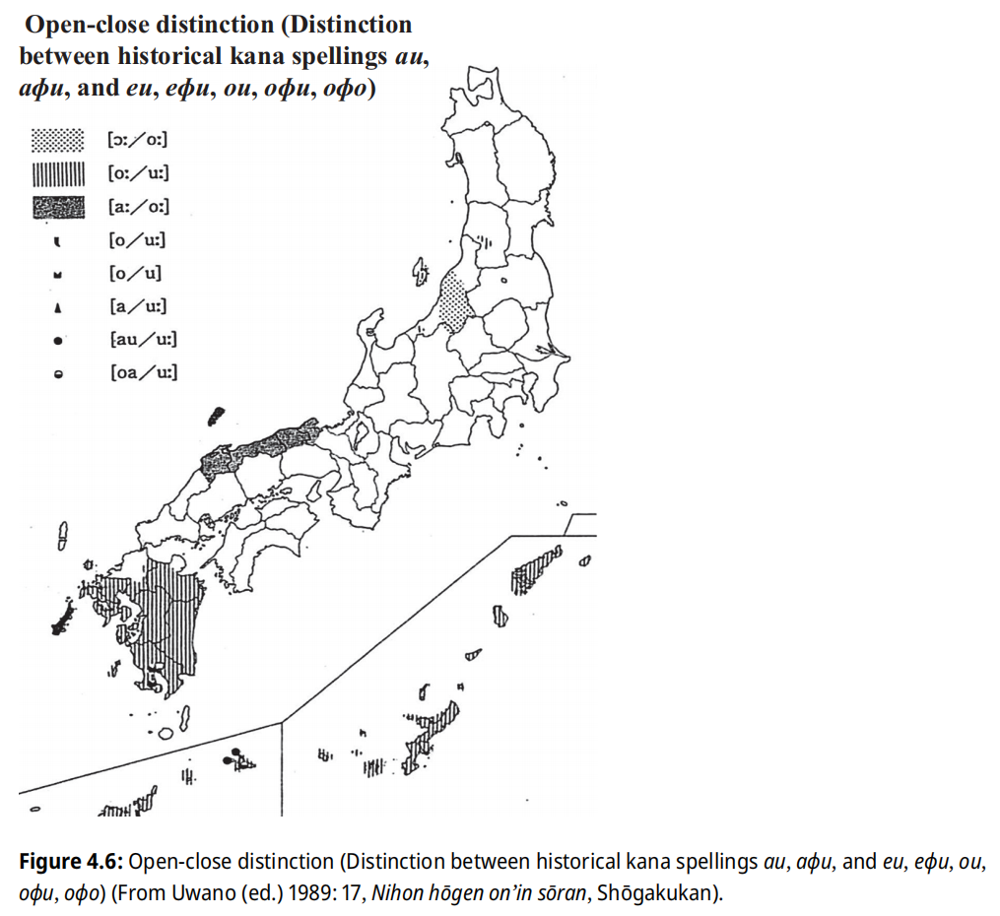 |
| /ai/ 的方言反映 Kibe, Nobuko, et al., editors. Handbook of Japanese Dialects. De Gruyter Mouton, 2025. Handbooks of Japanese Language and Linguistics, vol. 7. Figure 4.3: /ai/ (From Uwano (ed.) 1989: 3, Nihon hōgen on’in sōran, Shōgakukan). |
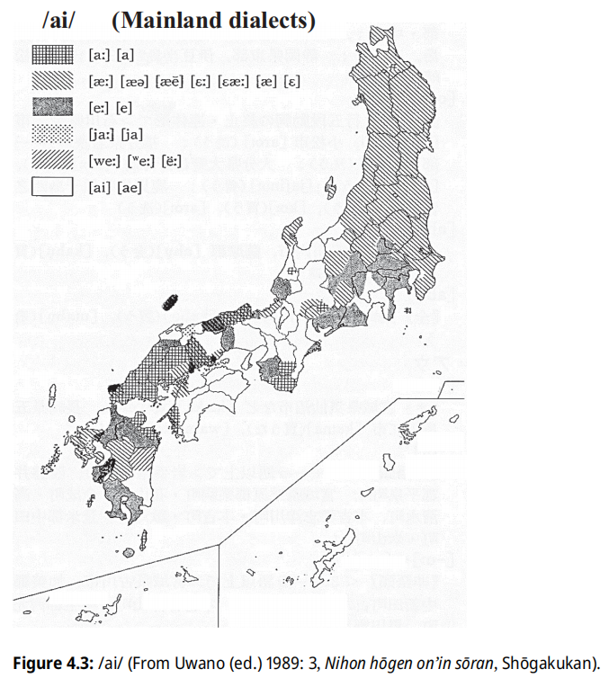 |
| /ei/ 的方言反映 Kibe, Nobuko, et al., editors. Handbook of Japanese Dialects. De Gruyter Mouton, 2025. Handbooks of Japanese Language and Linguistics, vol. 7. Figure 4.2: /eR/ (From Uwano (ed.) 1989: 13, Nihon hōgen on’in sōran, Shōgakukan). |
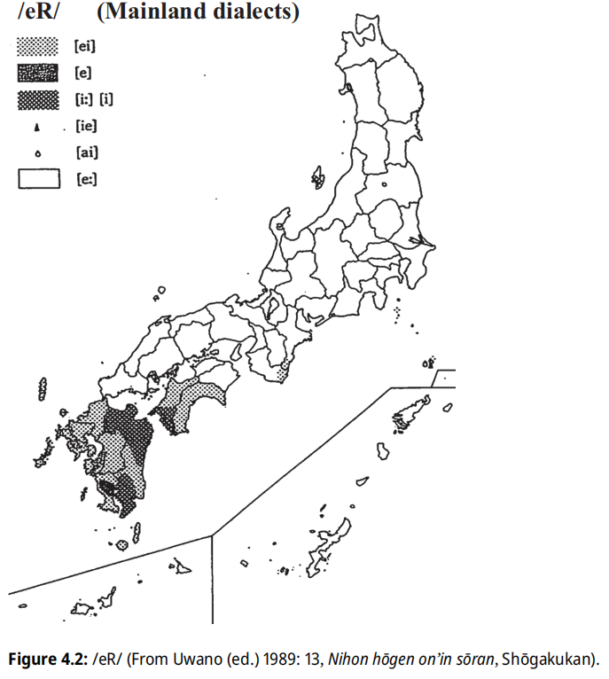 |
| /oi/ 的方言反映 Kibe, Nobuko, et al., editors. Handbook of Japanese Dialects. De Gruyter Mouton, 2025. Handbooks of Japanese Language and Linguistics, vol. 7. Figure 4.4: /oi/ (From Uwano (ed.) 1989: 15, Nihon hōgen on’in sōran, Shōgakukan). |
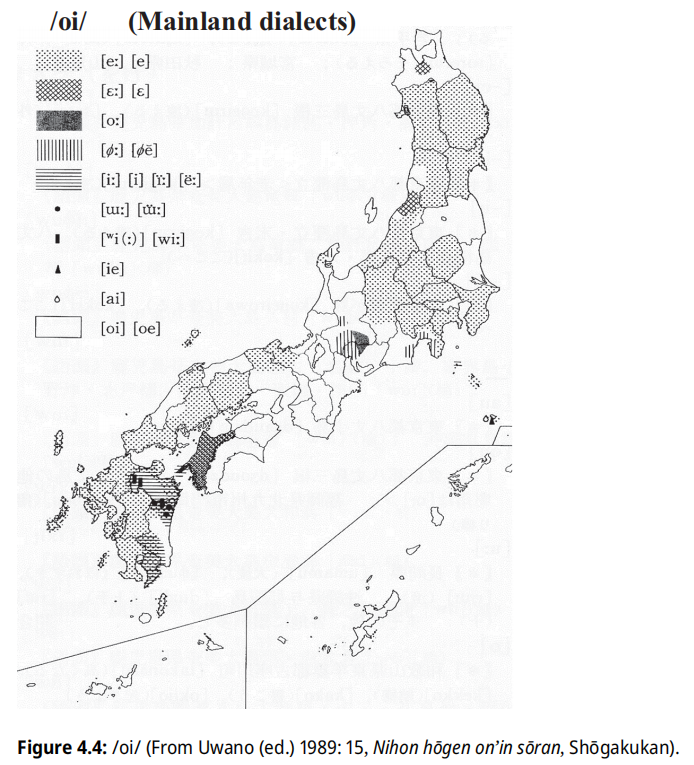 |
| /ui/ 的方言反映 Kibe, Nobuko, et al., editors. Handbook of Japanese Dialects. De Gruyter Mouton, 2025. Handbooks of Japanese Language and Linguistics, vol. 7. Figure 4.5: /ui/ (From Uwano (ed.) 1989: 10, Nihon hōgen on’in sōran, Shōgakukan). |
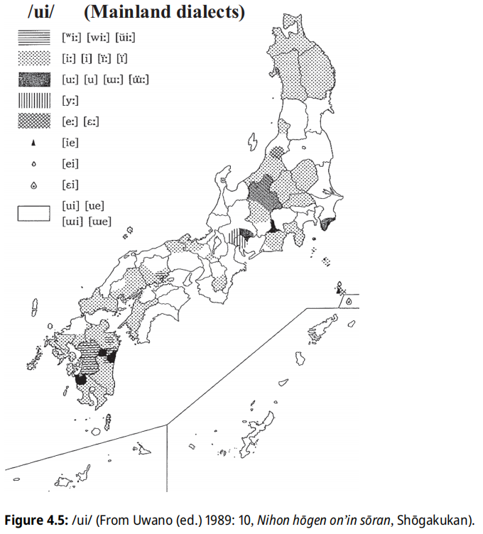 |
条件高元音降低
北海道南部、北东北、东关东、长野北部、越后北中部、富山大部、石川部分、中央出云、隐岐方言的词首或元音后 /i/ > /e/ [e̝]；北东北日本海侧除外的区域的 /i/ 完全变成了 /e/ [e̝]。北东北、长野北部、北陆一部分、山阴词首、处于某些辅音后（通常不在 [k], [g], [ɸ] 和舌冠音后）的首音节的 /u/ > /o/ [o̝]，但在东北不及 /i/ > /e/ [e̝] 广泛。中世东北、越后、岐阜高幡、关东琦玉地区的文书中已记载了此现象。但是，这些变化可能发生在很早的时期，并且与古代出云的影响和及人口迁移有关。这些区域的
/i, u/ 条件低化并非 MVR 的逆转，而是方言的创新：条件 /i, u/ 降低音变并不是同时发生的，且不限作用于发生 MVR 的词汇。
里日语分支（含琉球语）的其他创新
- 词中清塞音浊化（东北、九州西南）
/k, t/ 浊化为 /g, d/ 的现象，在现代东北、九州枕崎、吐噶喇群岛等地分布，通常的解释是因前后元音相狭的浊化同化。受到东北方言的影响，长野、岐阜、石川、福井四县北部的方言也有浊化倾向。南东北方言由于词中鼻冠浊音的失落，词中 /t, d/ > /d/。
如果将东北的词中清塞音浊化与词首浊塞音为正 VOT（即词首浊音清化）相关联的现象，则可用「同化前音」解释：词首浊塞音同化前面的无声而清化，词中浊塞音同化前面的元音而浊化。
琉球语石垣、川平、小浜方言，及可能的北宫古狩俣方言中，/k, t/ 通过下列规则浊化：
*{k, t} > {g, d} / *{b, d, g, z}V __
其他区域的浊化规则为，处于第三及以后音拍的非响音浊化，只要前面不紧接着清化（高）元音。
波照间：*k 浊化但 *t 不浊化，条件与石垣、小浜稍异（且如果前一音节为清辅音 + 清化元音，则不发生浊化）：
*k > g / *{#, b, d, z, g, m, n}V __ *{e, o, a}
西表：*k 变化条件与波照间类似：
*k > h ~ Ø / *{b, d, z, g, m, n, #}V __ *{e, o, a}; > g / V: __
与那国：词中 *k 在 *i 以外的元音前浊化为 /g/ - 词中浊音清化（东关东、南琉球）
栃木、茨城：{zi, zu, bi, bu} > {ci, tsu, pi, pu} / __ {k, t}; -dake（-だけ） > -take。
宫古大神：词中浊塞音 *{g, d, b} 会清化为 *{k, t, p}。宫古语的 /kï/ [ksɿ], /gï/ [gzɿ]，在大神方言中，原浊音性质转变为非摩擦性的 ï：*ki > /kï/ [ksɿ]; *gi > /kï/ [kɿ]。
核心八重山（波照间、白保、小浜、新城、西表）：除了 *{g, d, b} 会清化，*{m, n, r} 也能清化，此规则作用于清辅音开头词语的首辅音后的所有音素：*CVZV > *CV̥C̥V̥，可能是由于送气性质过强造成的。 - /r/ 失落或变化（出云、九州、琉球）
在出云和西伯耆（日野郡除外）方言中，词中、词尾的 /r/ 容易失落，常变化成前面元音的长音（高元音的情形多），出云方言 /re/ 的 /r/ 失落长音化容易在代词中发生。在隐岐更多是发生促音便，但单纯的辅音失落也会发生。九州方言也有这一特征，会引起长音化、促音化、拨音化。萨隅方言：r{i, u, e (,...)} > i / {Ø, C}V__ #; r > t / sV __; r > d。八丈：r > d。琉球语中，奄美大岛以外的北琉球、宫古语在 *{i, y} 前失落 *r。八丈：r > d。与那国语中，鼻音附近的 *r 有时变成 n。 - 软腭音腭化（出云、东北、琉球）
ki > [kɕi̥, tɕi̥] 发生在中央出云、东北。ki 腭化 > ci [tɕi] 也发生在部分琉球语方言（南喜界、冲永良部、冲绳、宫古伊良部-池间、与那国）中，伴随 gi 腭化 > zi [ʑi ~ dʑi]。宫古伊良部-池间、与那国的反映可能是受到上流方言的影响。 - 词首喉塞音增生（北琉球）
北琉球语群中，来自无辅音词首的单词在词首增加了一个喉塞音 [ʔ]，与分别来自 *{w, y} 的 [w, j] 对立（无词首 [ʔ]），这一现象可追溯至 16 世纪（可能早于完全 MVR）。本土日语、广域八重山语（石垣、波照间、竹富、鸠间、与那国等）也存在类似情况，但喉塞音不作为独立音位存在。本体系通常不标出 [ʔ]。
[ʔi, ʔu] 在 [w, j, m, n] 前失落主元音，就产生了 [ʔw, ʔj, ʔm, ʔn]。
在冲绳与那岭、八重山川平、黑岛等方言中，某些词首喉塞音可能变为 h：
[ʔ] > h / # __ *V{p,t,s,k} - 中元音矫正（北琉球奄美）
奄美大岛至德之岛的方言存在保留 *{e, o} 不抬升的条件，也有降低高元音的情形：1. 任意来源（包括来自 *{e, o}）的 *{i, u} 降低：*i > e; *u > o；2. 受毗邻音节中的 *a 影响，*u > o（罕见）。 - 中元音中和（北琉球奄美）
北奄美大岛：*{a, o, e}k{a, o, e} > ëë; *{a, o}k{a, o} > oo
南奄美大岛：*{a, o, e}k{a, o, e} > ëhë; *{a, o}k{a, o} > oho - 鼻元音（北琉球南奄美佐仁、与路）
*VmV > VṼ (post-MVR) - 辅音强化（南琉球）
南琉球语群中，词首的 *w 被强化为 /b/。与那国语存在更多的辅音强化过程，导致许多不同音节归并。辅音强化包含了两个步骤：辅音腭化-擦化（发生在完全 MVR 前）、塞化（发生在完全 *{i, ï} 合流前）。的规律是：擦音→塞擦音→塞音；近音→塞音。与词首 *w- > /b/ 平行，词首 *y 在与那国变成 /d/，这些变化都不能追溯到琉球祖语，因为 /d/ 只出现在词首，且也适用于原本为 y- 开头的汉语词的情形。与那国存在许多上流方言借词，这些借词回避了主流与那国语音变，导致强化过程迥异：
PR *ti > 南冲绳 *ci > 古与那国 *ci > 现代与那国 ti
而非：PR *ti > 南琉球 *tï > 古与那国 *sï > 现代与那国 ci - 词尾拨音增生（南琉球八重山）
在波照间、白保方言、与那国语中，某些名词末尾存在一个来源不明的尾拨音后缀 -n [ŋ]，通常仅在独用时出现，其成因可能与连浊的原理类似，或与语流强化有关。-n 后缀的出现有三种模式，说明 -n 是后起的，甚至不能追溯到八重山祖语：① 波照间无且白保无，与那国有；② 波照间有或白保有，与那国无；③ 波照间有且白保有，与那国无。这表明词尾拨音增生现象可能是波照间、白保、与那国区域独立产生的；由于白保居民源自波照间的迁移，有些词的 -n 可能先在波照间方言中产生，随后传入白保。 - 竹富创新音变：词中 /k, g, m/ 失落、元音 /a/ 中央化、长音 /aa/ 缩短（南琉球八重山竹富）
① *{-k, -g} > Ø; ② *a > a ~ ö [ǝ]; ③ *aa > a; ④ *-m > m ~ Ø, *-b > b ~ Ø
①-③ 使 *aka > aa ~ haa ~ a（*aka > haa 也见于狩俣）；④ 词中 *{m, b} 弱化使所在音节元音鼻化，并参与后续元音融合过程；②④ 使 *a{m,b}a > a{m,b}a ~ aa ~ aã ~ öö ~ öö̃
表格 | 与那国语的辅音强化
琉球语的音节变化
因不同区域多样的音韵变化，导致琉球语方言间的音节对应异常复杂。下表汇总了音节的变化：
表格 | 琉球语的音节变化
琉球语音韵史
琉球语复杂的音韵变化使得变化发生的时期难以界定，比较重要的事件有：琉球祖语的确立、完全 MVR、*{i, ï} 合流。许多与中-高元音区别有关的变化发生在前两个时点之间。
表格 | 琉球语音韵史
结合图表可清晰发现：
- 送气规则产生在很早的时期，划分出了南北琉球区域
- 辅音咽化在北琉球划分出了奄美和冲绳区域
- *C{i, u}r 同化在南琉球划分出了宫古、八重山、与那国区域
区域性音变：
- 全琉球音变：初次抬升、高元音前的齿龈音腭化-擦化、舌面音后的 *u 央化、*C{i, u}r 同化、二次抬升、ハ行转呼、*{i, ï} 合流
- 北琉球音变：北琉球送气、*i 的顺行腭化、词首喉塞音增生
- 奄美音变：辅音咽化、元音矫正
- 冲绳音变：*{i, ï} 的顺行腭化、软腭音腭化、舌面音同化
- 南琉球音变：南琉球送气、高元音前移
- 与那国音变：词首高元音音节拨音化或促音化、辅音强化
Ainu 语中的日琉语借词
类似日语中的汉语借词存在层次的现象，Ainu 语中存在许多日琉语借词，也存在层次。根据 Vovin，Ainu 语中最古层的日琉语借词的特征有：保留了清音在词中或词首的清音特征（Vovin 用于驳斥 Wenck, Frellesvig 等词中清音浊化的依据；针对词首 /p/，较新的借词会借为 /h/）、浊音的鼻冠性质（借为正字法的 NC。Ainu 语无清浊辅音区别。有些词汇没有保留此性质可能说明借入时间较新）、i 乙（借为 uy）、借词发生了 MVR（而原词没有）或保留了原词
MVR 前的形式。根据 Everhart，Ainu 语的日琉语借词中还发生了以下音变：长元音变成了短元音，且所在音节被赋予重音（不都发生，或为巧合），这种长元音不能追溯到上代；一些词语发生舌冠音后 /u/ > /i/，体现了东日本方言的特征；连续元音的规避（/Vi/ > /Vj/; /Vu/ > /Vw/; /V1V2/ > /V1/）；元音同化；清元音失落，说明借自东北方言；一些词汇发生了辅音延长（促音化）或元音缩短，可能借自东北方言形式；一些词语的
/nn/ 被缩减为 /n/；将拗音的介音 /j, w/ 分别借为 /ij, uw/；等。
语法
词汇
日琉语使用的词汇主要有 5 个层次：固有词、拟声拟态词、汉语词（早期借词，其他早期借词还有来自 Ainu 语、朝鲜语、梵语的）、外来词（借词，通常用片假名书写）、混合词。固有词有个常被视为与「阿尔泰语系」共享的特征，即所谓「头音法则」：流音、浊塞音不在词首出现。拟声拟态词、汉语词、外来词则无此限制。固有词的词首元音或音节脱落、时代发展或方言创新，都可能导致此规则被打破。
根据伊藤、Mester（1995），前 4 个词汇层可按以下约束区分（有修改）：
表格 | 日琉语词汇层
日语与外语的接触始于 16 世纪，分为三个阶段：明治以前、明治到二战结束、二战后。后两阶段对日语影响深远。1540 年代传教士来日后，至 1630 年代基督教被取缔，期间借词多来自葡语。17 世纪中期至 19 世纪中期锁国期间，荷兰是唯一与日本交易的欧洲国家，日本出现了通过荷兰语研究欧洲知识技术的「兰学」。当时只有少量葡语、拉丁语和假名词汇融入日语，部分延续至今者以葡语词居多。1850 年代强制开国后，大量欧美科技文化词汇涌入，助力日本现代化，英语、荷兰语和葡语成为主要来源，不同领域各有侧重。欧洲语言的语法也影响了日语语法的编制。二战后，英语（尤其是美式英语）大量流入，现代流行词多源自英语，日语中常创新性地结合英语词与本土用法，甚至与其他语种混合，创造出独特词汇。
自江户后期、明治时期以来，部分外来词（多与学术、政治、知识相关）以汉字音译、意译，许多被重新借入汉语、朝鲜语和越南语，形成「和制汉语」。这类词汇多由西周、福泽谕吉、井上哲次郎翻译。
词性
根据是否独立使用，日琉语词汇分为可独立使用的自立语（词）和非独立使用的附属语（辞），根据是否活用分为有活用变化的用言和无活用变化的体言。用言有多种活用形式，并存在敬语体系。名词的格通过助词体现。
表格 | 日语的词性
副词分为普通副词和转成副词（由形容词或名词转化而来，后接 -n-i，动词也可用连用形）。副词通常用于动词前，但 yume 用于动词后。
日语的连词称为接续词，分为自立使用的接续词和附属使用的接续助词，许多来自其他实词或语法词。接续词用于连接两个句子，作插入语，表示句子间关系，如顺接（dakara, sorede, sitagaQte）、逆接（sikasi, keredomo, demo）、累加（soreni, sarani, sikamo, mata, oyobi）、选择（aruiwa, mosikuwa）、对比（iQpou（一方）, gyakuni（逆に））、发语（saruhodoni, somosomo）。接续助词用于句末，承上启下，表示顺接、逆接、因果、对比、并列等关系，通常归类为助词。
名词
名词性词汇涵盖名词、代词（代名词）和数词（数名词）。名词分为普通名词和派生名词，后者包括转成名词（与动词连用形同形，但音调有别）和形容词名词化产物（词干接 -sa 或 -mi）。动词或形容词接 -aku 形成的名词也属转成名词。部分词尾带上古 {i2, e2, o1} 的名词，根据后续是否接辅音，存在被覆形和露出形变体，但中古起这种对立不再能产，且非所有这类名词均有两种形式。名词复合时常发生连浊，且自上代以后，连浊逐渐趋于义务化。名词结构由前缀-词干-后缀组成，上代名词的形态配列为：前缀（加强（ma-）-指小/位置/尊敬）-词干-后缀（指小-复数-格）。
名词的数
日语通常将语法数分为单数或复数。历史上，日语存在数个表示复数的后缀，现代标准语中的复数，通常对人用 -taci，对物体用 -ra；根据方言，也用不同的后缀，如宫崎椎叶都用 -domo。
琉球语中还存在双数，如奄美汤湾方言：复数对第一、二人称用 -kya；对第三人称、物体用 -taa，人称双数 -Qtöö；名濑方言：人称复数 -kya，双数 -Qtari；德之岛伊仙方言：双数 -Qtari, -ten；冲永良部国头方言：双数 -tee。部分区域存在代词属格数词构造「代词属格（PR *-ga） + N 人」：汤湾方言：第一人称三人 waa micai、第一人称四人 waa yutai；伊仙方言：第一人称双人 waa taari、第一人称三人 waa micaari、第一人称四人 waa yutaari。许多方言还区分第一人称复数的除括性。
表格 | 琉球语第一人称复数除括性的类型
表格 | 琉球语代词的数与除括性
数词
基数词存在两套：固有词和汉语词，固有词存在倍数关系（1 → 2 → 20; 3 → 6; 4 → 8）。7 以上的数字都能表示「多」（ya (8), yaso (80), io (500), yao (800), ci (1000), yaci (8000), yorozu (10000) 可虚表「很多」。几乎都是神圣数 8 的倍数）。琉球方言中基数词词根不独用。
现代，「十几」一般是直接用汉语词表达。《古事记》中提供了一套表示「十几柱（神）」的表达：OJ to2wo（十）+ mar-i + 数词词干（1 到 9，但是无 8） + pasira（柱），虽然这种训读可能是后期加上的，但《佛足石歌》记载了「32」的音读：OJ miso2-ti amar-i puta-tu，因此可以推断上代的「几十几」的表达方式为：十位数数词
+ amar-i + 数词。琉球语一般用汉语词表示「十几」，南琉球存在类似上代的「十几」的表达：tuu + 数词，如「11」：东仲曾根、与那霸 tuu-pïtiitsï、登野城 tuu-pïtiizï、波照间 tuu-pïtutsï。
从 30 到 90 的「几十」一般是直接用汉语词，上代用基数词 + OJ -so1 表示（不见于琉球），存在一个后续量词 -ti（多用于表示「岁」）。
上代的序数词只有 patu（初），其他序数词用基数词表示，但可以通过上下文区分是用作基数词还是序数词。从 2 开始，序数词一般用汉字词「第…」。也可用汉语词 + 「番」 + me（目）。
除了基数词和序数词外，日语中与数有关的词还包括量词、天干（用「金/木/水/火/土の兄/弟」表示）、地支（来自中国的成型后版本，用固有词表示）、月份名等。量词通常被归类为接尾辞。
代词
代词包括人称代词和指示代词。部分代名词存在短式（不接后缀）和长式（-re）两种形式：短式可后接属格 -ga（人称代词）或属格 -no2（指示代词）、用于构成复合词（有时连浊），有些也可以独用，中古起短式被限制为接属格 -ga/-no；长式可独用。长短式通常表示单数，复数会倾向使用长式表达，因此 -re 可能与复数后缀 -ra 有关。上代代名词还不能接复数后缀；第一人称以
wa- 系列与 a- 系列最常见，a- 系列没有延续到中古。琉球 a- 系列较 wa- 系列少见，部分南琉球地区分别用以表示第一人称单数和复数。
远指人称/指示代词 ka 出现于上代晚期（通常用于代替 so2，此时尚未产生中指、远指区别），a 出现于中古。这表明上代晚期以前的体系并非近-中-远体系，而是与话者或听者无关的近-远关系。不定代词可通过在疑问代词后接 -ka 生成（上代还可表强调），集合代词可通过在疑问代词后接 -mo 生成。上代的集合代词还有 mi2na（皆）, moro2（諸）。中世末期的代词系统已与现代相似。
表格 | 上代代词系统
琉球语中，表示位置的 -ko（处）被 *-ma（间）代替。中指示 so 在琉球方言中对应为 *o。上代晚期的 ka- 系列远指示也见于南琉球，但琉球还有不见于上代的 a- 系列远指示（疑似与中古 a- 系列有关）。
用言
用言包括动词、形容词、形容动词和助动词，其最显著特征是根据后续语法词或后缀改变词形，这一过程称为「活用」（即「屈折」）。根据活用模式，用言被归类到不同的「活用型」中，而根据接续不同元素时的变化形态，用言被归纳出不同的「活用形」。若将活用形的概念应用到朝鲜语中，就得到「语基」的概念。
表格 | 日语用言活用汇总
动词及活用型
动词分为规则动词（正格活用动词）和不规则动词（变格活用动词）。规则动词数量众多，而不规则动词较少。动词活用型在不同日琉语方言中发展各异。现代本土日语根据活用形的尾元音（二段和一段动词为 r 前元音）交替的个数，将动词活用分为「N 段活用」。规则动词中，五段动词最常见，其次是一段动词。五段动词的词干尾辅音不包括 /d, n, z, y, w/。
词干长度决定活用规则性：不规则活用（如古上一段、カサナラ变动词）的词干多为单音节，而多音节词干则倾向规则活用（如古二段、四段动词）。不规则动词都很「短」，即越「短」越可能「不规则」。传统的不规则活用：カサ变（三段动词）实际上是规则的，且规律与二段一致；上一段的不规则体现在终止形、连体形、已然形使用的是变体（上代终止形与连用形同形，中古终止形似为挪用连体形）；ナ变连体形、已然形的不规则可能说明其处于从元音型活用向辅音形活用的转变阶段，但在上代已定格，说明元音型活用的连体形、已然形可能是较古老的形式，而辅音型的对应形式是简化形式；ラ变的不规则体现在终止形与连用形同形，可能体现了连用形的终止用法，而南琉球因连用形或连体形的终止用法，导致一定程度上连用形、终止形、连体形混同。
具体的活用型由动词词根尾形状确定。如果存在尾元音，通常说明该词可能来自名词或形容词。
- *-Ø：辅音型（四段、ラ变、ナ变）
- *-V：元音型（カ变）
- *(...V)-Ci-：元音型（二段、サ变）
① *(...{u, o, ǝ})-Ci- > ...i2-：上二段；② *(...{a, ǝ})-Ci- > ...e2-：下二段 - *C(V)-(C)i-：元音型（上一段）。由于存在来自二段动词或名词的上一段动词，这类上一段动词末尾的 *-i- 可能本身就来自派生后缀 *-Ci-，即通过 *CV-Ci- > *C(V)-(C)i- 生成一段动词；以 i2 结尾的一段动词（mi2-），可能代表了二段向一段转变的中间阶段。
暂未发现以 *{i, e}-Ci- 结尾的动词，这可能是构拟结构决定的：即构拟上已排斥了 *{i, e}-Ci- 的形式，而以 *{i,e} 结尾的动词词干，生成动词似为下二段，这样会推导为来自 *{a, ǝ}-Ci-。存在部分 -e-C- 四段动词，来自 *{a,ǝ}-Ci-C-，应为后起的。
动词活用型的变化：
- 四段动词（占 75%）：现代被称作「五段」的原因是，在原本的四段基础上，加入音变来的意志形。方言中，中国等地区将ワ（ハ）行四段终止形元音序列 a-u 读成 /aa/。青森县及其周边、琉球将ワ（ハ）行四段变成ラ行四段。东日本将一些四段动词（饱 aku、借 karu、染 simu、足 taru、垂 taru 等）上一段化。
- 二段动词：包括下二段动词（占 20%）和上二段动词（约 30 个）。中古早期出现了新的下一段活用（只有一个动词），这类动词现代与四段合流。其他上下二段在中世分别变成上下一段。二段动词一段化的本质可能是类推，导致交替的元音从 2 个变成 1 个（水平化）。方言中，奈良十津川、和歌山县中部、爱媛县东宇和、九州方言保留古代二段动词。肥筑保留下二段动词，但上二段动词变成上一段动词。奈良南部、纪伊、岛根出云、肥筑、萨隅、冲绳本岛方言的上二段动词发生ラ行四段化：如起 okiru 的否定形式 okinai 变成 okiran（首里 ukiran）。部分在标准语原为上二段动词的词语（起 okiru、落 otiru、降 oriru 等），因元音发展的不同，在琉球语中发生下二段化（> PR *oke-, *ote-, *ore-），虽然这些动词在九州东部方言中也为下二段动词，但实际上，宫崎方言中，所有古上二段都变成了古下二段；大分方言中，几乎所有古上二段都变成了古下二段，因此九州东部的下二段化并不能追溯到九州-琉球祖语。
- 上一段动词（约 10 个）：某些方言中发生ラ行四段化（肥筑方言、琉球语等）。琉球语中的ラ行四段化在 16 世纪时已在一段、二段动词中发生，甚至几乎所有的ワ（ハ）行四段双音节动词（言 *ip- 除外），也发生了ラ行四段化。
表格 | 古琉球语的ラ行四段化
- カ变动词（1 个）：关东有上一段化的倾向。
- サ变动词（1 个）：中世时サ变动词的被动形式 se-rare，使动形式 se-sare 产生了新形式：sare 和 sase。サ变动词在茨城县、千叶县、山梨县、富山县等地方言中变成上一段活用 siru，爱知县等地方言中变成下一段活用 seru。
- ナ变动词（主要是 3 个）：近世时，与四段动词合流。多在西日本、九州方言中保留。
- ラ变动词（主要是 3 个）：中世时，与四段动词合流。
导致用言活用型变化的一个重要原因是终止-连体形合一。
动词活用形
日语的基本动词活用形有 6 种，分别是：未然形、连用形、终止形、连体形、已然形（现代的假定形）、命令形。未然形实际是多种活用形（否定、推量、使役、受身等）的 /a/ 部分。八丈岛方言的终止形用 -owa，来自连体形 -o + 话题 -wa。
琉球语存在许多活用形，基本形式与日语同源，但琉球语因音变和创新而复杂化，南北有不同的复杂程度。北琉球语中，一个动词可能有多种词干（由于琉球语的元音型动词普遍发生了四段化，大部分动词都变为辅音型），并出现过渡或中间形式。不同学者流派对同一方言的活用型可能归类不同，同源活用型在不同方言中也可能有不同的称呼。琉球语动词活用的一个特色是将存在动词
*wo, *a 应用到活用形中，*wo 见于北琉球语，*a 见于南琉球语；南北都有类似 *-i-te-a- 的形式，对应日语的 te aru，通常表示过去时。
- 基本词干 *C：最基本的形式。
- 连用词干 *C-i：由于 *i 的逆行腭化导致辅音发生音变而产生。
- 派生词干 *C-i-wo：由于 *i 的逆行腭化导致辅音发生音变、后续存在动词 *wo 而产生。南琉球语中不存在。
- 音便词干 *C-i-t：后续 *-te 时，由于 *Cit 发生音便而产生。对应日语的音便形。南琉球语中只见于与那国语。
表格 | 琉球语动词活用
- 志向形：北琉球语中，德之岛以南方言失落 *-m- 后部分。
- 未然形：传统的未然形是指以 a（辅音型动词）/Ø（元音型动词）结尾的动词词干形式，否定属于此形。部分方言挪用了志向形。
- 终止形：南北琉球语的终止形有别，且不直接使用日语的 *-u 终止形。部分北琉球语区分两种终止形：*-i-wo-m-u（终止形 1）与 *-i-wo-r-i（终止形 2）。在存在两种终止形的方言（喜界、奄美大岛、德之岛、与论存在但不区分）中，终止形 1 用于表现话者的主观意志、未来的完成或变化，终止形 2 用于客观地表现话者的目击情形、情感、进行中的动作或变化。冲永良部、冲绳则只用终止形
1，且包含了其他北琉球区域终止形 2 的用途。终止形 1/2 体现了「话者观察」的区别，该区别也疑似存在于过去时 1/2 中。*-i-wo 部分也称为「准体形」。
南琉球不使用北琉球的 *-i-wo-，且终止形同样存在带 *-m-u 的（终止形 1）与不带*-m-u 的（终止形 2），但不是所有南琉球语都存在终止形 1。伊良部的终止形 1 有「话者的确信（不论真伪）、对听众而言为新信息」的含义。宫良的终止形 1 有「施事者对命题真实性的承诺」的含义。南琉球部分方言（长浜、池间、狩俣等）的辅音型动词区分两对终止形，如 *kak-（写）的终止形：长浜 katsï(m), kafu(m)，分别对应日语的连用形和连体形（抬升后）。
传统上，琉球语的终止形 1 和终止形 2 的 *-wo- 部分被认为与动词词根 *wǝ（居）有关：PR *-i-wo-r-i < *-i-wǝ-r-i 对应西日本方言的进行体。Vovin 指出这会陷入一个循环论证，因为 *wǝ 的动词也会有这些形式，将这 2 种形式构拟为 *-i-um, *-i-ur-i。*-ur- 由 Russell 提出，也见于某些语法词如 *-ur-am-, *-ur-a(m)-si- 中，Russell 认为连体形为 *-ur-o < *-ur-ǝ，*-ǝ 体现在系动词的连体形 *n-ǝ 中。与 *-ur-am- 存在变体 *-un-am- 类似，琉球语的连体形 2 也将 r 变成 n。但是，琉球语的 *-i-wo-m-u 插入部分为 *-wo-m-，实际终止形为 *-u，这就不会陷入循环论证，且与日语建立了联系；并且，琉球语的 *-wo-r- 不一定对应日语的 *-ur-，而是整个 *-wo-r-i 对应动词 wori，且 *-i 终止形可能也是连用形 *-i 的终止用法。琉球语形式更像是在日语形式的基础上修改的形式。 - 连用形：南琉球虽然不使用北琉球的 *-i-wo-，但使用另一个存在动词 *-a-。南琉球宫古语存在 -i 连用形对应 PR *-e，可能来自 *-i-a-r-i。
- 连体形：北琉球语存在插入 *-i-wo- 的连体形，部分方言由于终止-连体形合一，形态与终止形相同；部分方言发生了 *r > *n 音变。方言的 -du 系结形多为插入 *-i-wo- 的连体形。南琉球语发展了连用形与连体形的终止用法，形成可互相替换的关系，最终在许多方言中，劣势形式遭到淘汰。
- 条件形：北琉球语的条件形混同了日语的已然形和条件形，前者为 *-eba，后者为插入 *-i-wo-r 的 *-i-wo-r-aba。南琉球语存在特有的终止-连体形 + *-tuka 形式。
- 接续形：对应日语的 -te 形，北琉球直接接动词词干，但南琉球接在 -i 连用形后，且不直接接 -te，而是接 -si-te，整体可能来自 *-i-a-r-i-s(e)-i-te。（其他更多活用形，散见于其他小节中）
补助活用
中古起，通过在连用形后加动词「有」ari，就得到补助活用：如形容词的 kari 活用 < ku ari、形容动词的 nari 活用 < n-i ari、动词否定的 zari 活用 < zu ari。中世时，ari 也可以用其他动词替代，如 gozari。许多接 ari 的语法词，在中世时失落 ri，影响甚大：形容动词连体形
na < nari < n-i ari、断定・形容动词终止形 ja（西）/da（东） < de ari；完成 -i-ta < -i-tari < -i-te ari；过去 -ke < -keri < -ki ari；西南九州方言形容词终止形 -ka < -kari < -ku ari。
サ变复合动词
在名词、副词后直接添加动词 suru（為）构成サ变复合动词，类似的构词法也见于朝鲜语（-하다）。上代时，这种结构可以在中间插入系词：名词 + (pa/ko2so2) + su。suru 在鼻音 ĩ, ũ、拨音 n 后浊化为 zuru；中世，某些 -zuru 动词会变成 -ziru 动词（上一段化），多见于汉字后。サ变复合动词构词如下：
- 名词 + suru
- 动词连用形 + suru
- 形容词连用形 + suru（常ウ音便）
- 名词/句子 + to + suru
- 名词/副（助）词 + ni + suru
- 名词 + (ni) o-i te + suru
- 形容词词干 + -mi + suru（汉文训读；词干为单音节时通常不缩减，但 ≥ 2 音节则通常缩减：-mi-su > -nzu）
状态-存在动词
上代动词 ari（有）可用于描述动词的状态（如完成），表示「存在」时尚未对名词限制有生性。其敬语形式（如OJ masu, imasu, pabe1ri, EMJ owasu, LMJ ojaru, oryaru, gozaru等）也可代替存在动词的用途。中世晚期，日语出现了两个新的存在动词，同源的 wiru < OJ wiru
和 wori < OJ wori，iru 主要用于有生命名词，ari 主要用于无生命名词，wori 是 wiru 的谦逊形。这种用法现代因方言而异，东日本把 iru 用于有生命名词，西日本趋向用 wori > oru，和和歌山方言用 aru。琉球语类似中古日语，*wor- 用于有生命名词，*ar- 用于无生命名词。
上代到中世时，wiru（坐）是 tatu（起）的反义词，后接 -ari 的状态形 wori 是 tateri 的反义词，亦可以用于表示进行体，上代时接在连用形后，中世起多接于 -te 后。中世用同义的 witari 表示状态比 wori 更频繁，多接在连用形后，有时接在 -te 后。中世 tateri 和 fuseri 也用于表达进行体，这说明存在动词源于状态词构成的进行体结构（动词连用形
+ 状态词）。中世早期，在表示进行体的功能上，由于 wori 被 witari 代替，wori 被重新定义为存在词，在许多方言中用于有生命名词。中世晚期，wiru 出现存在动词的用法时，ari 仍可用于有生命名词，但此用法后来被 wiru 代替。wiru 现代变为 iru。
进行体和完成体
描述进行体和完成（结果）体的状态时，可以用动词连体形或 -te + ari 等状态动词构成，如上代到中世早期常用 -eri, -itari，都包含了 ari。现代 -te aru 及其简写 -ta 仅表示完成体，也常被用于表示过去时，替代了古代的过去助动词 -ki，导致过去时-非过去时的对立转变为完成体-非完成体的对立。在表示完成体时，神奈川县西部、山梨县东部、静冈县东部、爱知县三河等方言也用连用音便形
+ -taa。八丈岛方言的过去表现用未然形 + -(ta)ra。
原则上，标准语中连用音便形 + -te iru 用于继续性动作的动词（动作动词）时，表示进行体；用于瞬时性变化的动词（变化动词）时，表示完成体。东日本、福井市附近、近畿中央部方言用连用音便形 + -teru，东北方言用连用音便形 -teta, -ta 等，佐渡、富山县以西的北陆、爱知县、三重县伊勢方言用连用音便形 -toru，岛根县出云方言用连用音便形
-co(r)u。用终止形表示动作全体的形式称为完成体，用连用形 + -te ru, -te iru 涉及动作继续时间的形式称为未完成体，标准语、上述地区不区别进行体和完成体。
上述地区以外的西日本方言中，未完成体内部区别进行体和结果体：岐阜县、奈良县南部、兵库县播磨、中国（出云除外）、四国、九州方言中，进行用连用形 + -yoru 等（高知县方言也用连用形 + -yuu、萨隅方言连用形 + -(y)o{i,Q} 等），结果用连用音便形 + -{t,c}oru 等来区别（许多方言用连用音便形 + -toru，富山县五箇山、石川县白峰、岐阜县一部、广岛县安艺以西的中国、香川县西部、爱媛县一部、丰日方言用连用音便形 + -coru（高知县方言也用连用音便形 + -cuu，萨隅方言用连用音便形 + -co{i,Q} 等））。这些方言使用的进行体由连用形 + oru，完成体由连用音便形 + te oru 变来。存在动词（有生命）不用 oru 而用 aru 的纪伊（和歌山县、三重县南部）方言，其进行体和结果体形式是基于 aru 的：进行体用音便形 + -yaru，结果体用连用音便形 + -taru。进行体和结果体的区别正逐渐消失。西日本方言的连用形 + -yoru 亦能表示动作即将开始（将然体）。连用音便形 + -te iru、连用形 + -yoru、连用音便形 + -toru 也能表示习惯、反复。
方言的 -yoru, -toru 分别来自 -i-wori 与 -te-wori。琉球语的进行体，虽然形式上类似西日本方言 -toru（奄美伊津部 -turi；首里 -toon），但用途上类似东日本方言，混合了进行体和完成（结果）体：北琉球表示持续动作（主动动词）或状态改变（非主动动词），南琉球表示持续动作（主动动词）或结果延续（非主动动词）。关于动作的延续，北冲绳伊江岛、久米存在创新形式的 *-te-aruk-（步），伊平屋、伊是名存在创新形式 *-i-ar-i-wo-m-u，*-i-ar-i 形式的延续体也见于其他方言中（北冲绳 -(y)ee；南冲绳 -yaai；宫古 -ii；八重山 -ii, -ee, -aa）。完成体表示变化的延续，北琉球也表示效果或完成的痕迹，使用 *-te-ar-i-wo-m-u > -teen；宫古使用 *-ar-i ok-i > -ii ukï；八重山使用 *-ar-i-wo-m-u > -een。
过去时
标准语的完成体 -ta 也被用于表示过去时，与非过去的终止-连体形 -(r)u 对立。东日本方言（特别是东北方言）中，存在多样的过去表现。存在动词 iru 的 -ta 形 ida 表示包含从现在开始的过去（iru 自身则表示永久存在）。东北方言的连用音便形 + ta 形也表示现在一段时间或过去的状态。大部分东日本方言用连用音便形 +
-taQta, -te aQta 表示对过去事实的确认或回想或遥远的过去。青森方言用连用音便形 + -te aQta 表示进行体过去（标准语用连用音便形 + -te ita），岩手方言用连用音便形 + -taQta 表示完成体过去（标准语用连用音便形 + -ta）。连用音便形 + -ta 和 -taQta 的区别在于，-ta
包括从现在开始的过去，-taQta 则不包括；-taQta 还因地域存在表示说话者的直接察觉或体验过的事情：宫城县登米市中田町方言中也表示话者的目击体验。东日本方言用连用音便形 + -taQke 表示回想，东北方言用连用音便形或终止形 + -ke 表示确定经验过去，这些 -ke 就来自古代的过去助动词 OJ -ki1。
冲绳语存在两种过去时，传统观点认为，过去时 1（*-te-a-m-u）表示单纯过去，限制第一人称；过去时 2（*-i-wo-te-a-m-u）表示话者观察的过去的动作或变化，限制非第一人称且不用于话者自身的动作或变化。但实际上过去时 1 也可以用于第三人称，过去时 2 也可以用于非观察情形（如用于无法观察的情形）或第一人称。北琉球语还有一种表示非过去结果或确定过去推量的
-(t)ee，可能是两种同形助动词的混合，分别表示过去和非过去。
动词后置语法成分与动词的结构
动词之间的连接需通过连用形（类似朝鲜语的第 3 语基 -아/-어），但上代也可能省略连用形，或以「连浊」的形式连接，原因可能为使用了系动词 n- 的连用形 n-i-。这体现了日语动词复合存在两个层次：词干直接复合和派生词干复合（通过连用形），词干直接复合应用于派生后缀和许多语法后缀中，但有些语法后缀需要通过连用形复合。名词/形容词词干 + 动词可以派生二级动词，这可能是词干直接复合模式的来源。这种过程本质是句法约束向构词法（词汇化）的转变。根据 Vovin 的分类
动词的后置语法成分分为接词干后的后缀与接连用形后的助（动）词。根据是否独立使用，助（动）词又分为补助（动）词与助动词（或按传统方式，根据是否活用，分为助词或助动词）。本土日语的内部证据以及与琉球语的比较说明，部分不接连用形后的后缀，可能隐含了连用形 -i。
动词的语法范畴包括极性、体、时态、语态、语气等，但是每个范畴的语法后缀，并不限制是否接连用形后，也不限制活用型，说明各范畴的后置语法成分来源并不单一。上古与中古日语的一个区别是助动词后缀化：如上代的连用形 + ke1ri 在中古变成了 -ikeri。
表格 | 上代动词的语法范畴
动词的结构为：I 前缀 - II 词干 - III 后缀。可以说所有实词亦皆为如此。日语乏于前缀而有富有后缀，是日语作为 SOV 语言的特征。以上代表示「禁止」的语法词为例，存在前缀 na-，环缀 na-...-so2，后缀 -una；许多动词前缀只限定于少数动词前；上代比中古拥有更多前缀，且许多无准确来源。Vovin 根据这些迹象推测，上代日语在东北亚（「阿尔泰」）语言、朝鲜语的影响下，从原本的 SVO 语言向 SOV 语言转变。上代日语的「元音和谐化」可能也发生在这个时期。
将基本结构中的词干部分与后缀部分展开，得到动词的详细配列：
表格 | 上代动词的详细配列
词干最初的部分是词根-派生后缀。派生后缀的部分为后置语法成分。后置语法成分的基本顺序为：词干结束 → 词结束 → 句结束：
- （连用-动词或助动词）→ 词干结束/（连用-终止附属助（动）词）：通过连用扩张词干
- （连用-终止补助（动）词) → 词结束
词干部分结束，首先接非终止词后缀，此部分，上代东西方言出现了分歧，即重复后缀 -ap- 与否定后缀 -an- 的顺序区别。接着非终止词后缀群又面临两种配列模式：
- 非终止词后缀 → 非终止句后缀（词结束） → 句子其他成分（句结束）
- 非终止词后缀 → 终止句后缀（句结束） → 终止句后缀的后续成分
后缀中也分强弱元音后缀。强元音后缀，如禁止（否定命令） -una，不论动词为何，直接接在词干后（传统语法中，此类 u 开头强元音后缀通常解释为：「接终止形（ラ变动词连体形）」）；弱元音后缀，如推量 -(a)m-，接在四段、ラ变、ナ变动词（辅音型活用动词）后为 -am-，接在上下二段、上一段、カ变、サ变动词（元音型活用动词）后为 -am-。
形容词通过连用形接动词 ari 的方式，就变得可以接动词的后置语法成分了。
否定
否定：东日本方言用未然形 + -nai, -nee，西日本、琉球方言用未然形 + -n, -nu。东日本方言用未然形 + -n 的范围为新潟县佐渡、丝鱼川、长野县木曾谷、伊那谷、静冈县大井川以西及山梨县中央部。近畿中央部方言用未然形 + -n 表示强意否定，-(ya)hen 表示普通否定。八丈岛方言的否定用连用形 + -nnaka，山梨县奈良田、静冈县大井川上流方言用未然形 + -noo，和歌山县、三重县方言用四段动词用未然形 + -n、一段动词用未然形 + -yan，隐岐方言用未然形 + -no，琉球八重山语用未然形 + -nu。东西方言否定的区别可能追溯到上代：东日本方言 + -anai（即「未然形 -nai」）初出与中世，可能来源于 EOJ 的否定形式 -anapu 的连用形 -anape1 的形容词化 > -anai；一说来自主题 -wa + 形容词「无」nai > -anai。
否定过去-完成：东日本方言用未然形 + -na(i)kaQta, -naikaQta，新潟县佐渡、富山县、长野县中信、南信、山梨县中央部、静冈县大井川到近畿、中国东部、四国（高知县除外）方言用未然形 + -nanda。石川县加贺、静冈县远江等中部地方的一部分方言用未然形 + -anda，三重县伊勢方言五段动词用未然形 + -nda、一段动词用未然形
+ -yanda，近畿中央部方言用未然形 + -(ya)henanda, -(ya)henkaQta，中国西部、高知县、丰日方言用未然形 + -{z,d}aQta，九州一部分方言用未然形 + -zyaQta。九州方言用未然形 + -nzyaQta 最为盛行，福冈县筑前及九州全境年轻人都用未然形 + -nyaQta、熊本县（年轻人）用未然形
+ -ndaQta。西日本（包括九州）的年轻人盛行用未然形 + -nkaQta。
否定中止：在东日本方言用未然形 + -naide, -neede、西日本方言用未然形 + -nto ~ -ide ~ -nzukuni。
否定假定：东日本方言用未然形 + -nakeryaa, -nakareba, -naiba, -neba 等，西日本方言用未然形 + -nto, -nya(a), -na, -nkaQtara 等。
元音型动词命令形
从西静冈、岐爱到四国的方言用 -yo（「见」的命令形 miyo 也见于东九州方言），但长动词不用 -yo 而是延长元音（亦来自 -yo）在西日本更常见。东日本、八丈、秋山乡、西九州、十津川方言保留 -ro。-{r, y}o 的区别可以追溯到上代东西方言的区别。琉球语用 -ro 或 -re。出云、九州、东北日本海侧方言、琉球语用 -re
可能是四段动词的类推（一段动词的ラ行五段化）。
志向形
志向形因地域表示意志、劝诱或推量。本土方言中，西日本及北陆到秋田县用词干 + -(y)ou， -ou 用于辅音词干动词后；-you 用于元音词干动词后，-y- 为避免元音连续的插入音。中国、九州方言统一用词干 + -ou。近畿方言中，-(y)ou 读作短音 -(y)o。-(y)ou 在山阴（兵库县但马北部、鸟取县、岛根县出云）为 -(y)a。近畿南部、九州各地等方言一段动词由于ラ行四段化，用词干 + -rou。カ变动词的意志形在西日本、新潟县方言为 kou。此志向形的原型为 -amu，因首元音为 /a/，通常被归到未然形。浊化ウ音便后发生连续元音长音化变成 -(y)ou，产生对四段动词而言的「第五段」元音 o，四段动词由此发展为「五段动词」。琉球语可独用 -a 表示意志，也有 -oo（喜界、奄美大岛）, -an（与论）, -uu（与那国）。
北海道、东北（秋田县由利、山形县庄内除外）、关东、新潟县东蒲原郡、魚沼地方、长野县佐久地方、秋山乡、山梨县郡内、静冈县富士川以东方言用词干 + -ube(e) 表示意志、推量，这是东日本方言的特征之一。宫城县、福岛县、茨城县、栃木县方言发生促音便 -uQpe(e)，神奈川县等方言发生拨音便 -unbe(e)，群马县等地方言一段动词直接用未然形。-ube(e) 来自推量助动词 -ubesi，因自带首 /u/，也可被归为通过终止形接续（终止形 + be(e)）。
长野县、山梨县、静冈县、爱知县三河方言中，表示意志、推量用词干 + -a{z,s}u，也用词干 + -aQto omou, -aQka, -u(zu)ra。-azu 来自古 -amuzu，清化产生 -asu。
新潟县越后中部、岛根县石见、山口县长门、高知县方言用词干 + -uro(u)；萨隅方言用词干 + -udo。 -ura, -urou, -udo 都来自 WOJ -uramu。八丈岛方言用词干 + -unou，来自 EOJ -unamu。此区别可以追溯到上代东西方言的区别。
西日本也广用终止形 + -(z)yaro(u) 表示推量，来自 -ni te aramu。山形县庄内、新潟县越后北部、东京、爱知县尾张北部、京都府丹后西部、德岛县、岛根县石见方言用终止形 + -daro(u)，爱知县三河、知多半岛及兵库县但马北部、鸟取县、岛根县出云、隐岐方言用终止形 + -dara(a)，山形县庄内方言用终止形 +
-dero，关东等用终止形 -da{(n)b,Qp}e(e)。
许多方言的意志、劝诱同形，也有地区用不同的形式：静冈县中部等方言的劝诱用未然形 + -za(a)，名古屋附近方言的意志用未然形 + -mai，爱知县三河、静冈县西部、岐阜县飞驒、长野县南部方言用未然形 + -mai(ka)。
否定推量：除了用未然形 + -nai darou, -n'yarou，东日本方言也广泛用未然形 + -naka{nb,Qp}e(e)，昭和后期常用的未然形 + -n{ai,ee}be(e) 也残留为未然形 + -neeQpe(e)；全境都有方言使用未然形 + -mai。静冈县东部方言用未然形 + -neezura, -nakaro(u)。
语气
被动语气（受身）在标准语中可用与格 -ni, -ni yoQte, 离格 -kara（涉及转移动作）表示施事者。九州、山形县方言中，-kara 也可以用于不涉及转移动作的情形，一些北东北方言用 -nikaQte, -sakaQte 表示被动施事者。
使动语气（使役）在标准语等大多数方言中用 -(s)ase-，在关东、东北、九州、琉球一些方言用 -(r)ase-，近畿、四国、九州、琉球一些方言用 -(s,r)as-。不及物动词的主语对应的宾语用宾格或与格标记，及物动词的主语对应的宾语用与格标记，如果不及物动词句包含补语，则主语对应的宾语用与格标记，补语用宾格标记。
反使动语气在标准语中没有能产的形态学交替（一些构词法可以视作反使动化），东北、北海道（及关东、静冈县部分区域）的方言的使动态和反使动态都存在能产的形态学交替：反使动态使用的是自发助动词 -(r)ar-（山形县、福岛县）, -(r)asar-（其他地区）。因地区而异，自发助动词有不同的用途：福岛县仅用于反使动态，北海道用于非意志、可能态、反使动态。反使动语气与被动语气的差别在于：施事者在被动语气可以作为间接格成分表达，但反使动态不明确表现出施事者。东北、北海道的这种双向的价态交替特征也见于 Ainu 语和 Nivkh 语，因此可能是北海道及周边的地域特征。
可能语气（潜能）在标准语中有 3 种结构：主格-宾格、主格-主格、与格-主格。与格-主格结构，源于与格 -ni 的某些主格属性（如解释位反身代词的先行词）。茨城县水海道方言的结构使用间接格的主格-宾格（-ŋani ... -sa）。
中世末，五段动词（辅音型动词）用词干 + -eru 派生可能动词；上下一段、カ变动词（元音型动词）用未然形 + -rareru。元音型动词的可能动词的根源是可能（受身、尊敬）助动词 -(r)areru，辅音型动词则可能来自于动词 eru（得），动词连用形 + eru 表示可能性的用法在上代和中古能产，但在现代标准语中过时了。中国、四国、东海（及稍晚一点的近畿）方言自古存在可能动词的省 ra（ら抜き）或增 re（れ足す）现象，导致一段动词未然形 + -rareru > 未然形 + -reru，标准语也可未然形 + -reru，可能也与此有关。省 ra 或增 re 现象的本质可能是五段动词派生可能动词向一段动词的类推。サ变动词（即 suru）对应的可能动词为 dekiru。
部分方言区分能力可能和状况可能。大多数方言用动词连用形 + eru/kiru/ooseru 表达「能力可能」。naru 在山口县、九州、冲绳也用于表示可能性。
表格 | 两种可能性
现代的可能性表达来自词汇或词缀的语法化：
- 能力可能（< 动作的完成）：助动词 eru, kiru, ooseru；补助动词 eru。
- 状况可能（< 动作的自发）：助动词 -(r)areru；动词 naru, dekiru。
补助动词 eru 可能来自两种混合起源，但两种起源都指向动词 eru（得）的语法化。
- 动词连用形 + eru = -(i)-eru > -(e)eru
- -e- 派生不及物动词的类推。
接续
顺接：标准语用 kara, node。青森县津轻、三户郡、秋田县、岩手县北部方言用 han{t,d}e, he(n)de, (e)nte，青森县下北半岛方言用 s{i,u}te，北海道、秋田县、岩手县、南东北、关东及其周边、鹿儿岛县种子岛、屋久岛方言用 kara，静冈县的静冈市以东、八丈岛方言用 nte，长野县方言用 ni，长野县（中南信及接壤的东北信）、静冈县、爱知县、岐阜县、福井县、三重县、滋贺县、京都府北部、熊本县南部、萨隅方言用 de，近畿、北陆、新潟县、山形县（置赐除外）、青森县南部地方、岩手县北东部、长野县北端方言用 {s,h}ak{ai,e}, s{i,u}ke, (Q)ke，近畿、长野县南部方言用 yoQte(ni)，中国、四国、九州（宫崎县、鹿儿岛县除外）方言用 ke{n(i),e}, ki{n(i),i}，长崎县各处、壹岐、天草方言用 se(e)n(i)，宫崎县方言用 ka{ra,i}。其中，hande 系由室町时代中央方言表示理由的 hodoni 而来，19 世纪初山形县庄内记录为 hodee。kara 系更古，残留于东北、关东。ken 系起源于 keni。sakai 原为 sakaini，该词从近畿北上进入北陆、东北。
逆接：标准语用 keredomo，北海道、南东北到丰日方言用 ke(n)do(mo), keredo 等，北海道沿岸部、北东北、新潟县越后方言用 domo，青森县津轻、秋田县北部方言用 baQte，青森县下北半岛方言用 taQte，岛根县出云方言用 (da)domo，岛根县隐岐方言用 da{e,i}do，肥筑、萨隅陆地部南端、萨隅离岛部方言用 baQte(n)，萨隅、佐贺县西部、长崎县中部方言用 (i)don, zyon, donkaran，琉球用 siga。其中 baQte 系起源于 batotemo，九州的一些方言也用 baQtem{o,u}。
授受动词
标准语中，分别使用 2 个动词表示“授受”关系：授予 yaru（离心动词），接受 kureru（向心动词）。方言中有许多其他形式的（无）对立，无对立分布在边缘区域：东北、九州、琉球。方言分布和历史发展说明，无授受动词对立是古老的，有授受动词对立是后起的，并且无对立系统正向有对立系统发展：中世出现的 yaru/kureru 对立来自中古 kureru 无对立，在接壤区域，kureru 逐渐演变为接受动词。yaru（某些方言选择 yokosu）与 kureru 的区别在于，物体的转移是否涉及所有权的转移，yaru/yokosu 不涉及，而 kureru 涉及。
表格 | 授受动词的类型和分布
富山县五箇山方言中，yaru/kureru 对立在于授予对象是否为人类：表示给予非人类，或未特定的人/要贬损的人时用 yaru，给予人类时用 kureru。如果用于家族首领继承权变更的情形，则 yaru/kureru 皆可。这种指定授予对象是否为人类，可能体现了 yaru/kureru 对立的早期特征。
kureru 无对立与 yaru/kureru 对立相遇，产生了 yaru 无对立、(kureru, yaru)/kureru 对立、复合表现 kure te yaru（沿东日本带状分布）等。(kureru, yaru)/kureru 对立说明了 kureru 的向心化（离心限制）。1996 年的石川县珠洲的 kureru 已有离心限制迹象：离心方向表现出对听众的直接给予，而难于表达对第三者的给予；离心方向表现意图，而难以用于陈述句；主要用作主动词而难以用作助动词。整理得到：
- 位置约束：kureru 在赠予句（表达直接将某物给予听众的意图）中更容易保留离心用法，在叙述句中（描述将某物给予第三人）则不然。
- 语法约束：kureru 在作为主动词使用时，比用作助动词时更容易保持离心用法。
方言调查发现，位置约束在东日本西侧的富山县、岐阜县等地区更显著；语法约束在东日本东侧的福岛县、茨城县、新潟县等等地区。由于东日本西侧与中部接壤，位置约束可能是直接接受了 yaru/kureru 对立体系造成，而东日本东侧仅部分接受了新的对立体系。位置约束目前在高龄层保留，但年轻人几乎全部转向新用法。语法约束在从山形到长野的区域、鹿儿岛都保留了下来。用作助动词时，授受动词类型的分布与用作主动词时相当，但 yaru (ageru) 更多用作助动词。
形容词
本土日语形容词存在两种基本类型：ku 型和 siku 型（终止形与 ku 型同形，来自缩减：-si < -si-(si)），ku 型形容词多表示性质，siku 型形容词多表达情感。大部分及物动词的派生形容词为 siku 型，词根重叠词干的形容词在中古时也为 siku 型。此外还有 ziku 型（通常归为 siku 型），有两种来源：接在表示动物等有实体的名词后面表示「像…」（与动词「似」niru有关），其他情形表示「无…」（与形容词「无」nai 有关）。中古时，通过在形容词连用形后接 -ari，出现了 2 种新活用型：kari 型和 sikari 型。现代日语中，ku 型和 siku 型均变为 i 型活用。
形容词的活用模式是后起的。上代日语不严格区分连用后缀 -ku、连体后缀 -ki1 的功能，且形容词词干可以直接修饰名词（类似突厥、蒙古、满-通古斯语），也可以通过系词 n-, to- 的连体形 n-o2, t-u 修饰名词。形容词词干修饰名词时出现的连浊，可以解释为系词 n- 的连体形 n(-o2)。这种通过系词修饰的方式，是形容动词活用的前身。
表格 | 上代典型的可用词干直接修饰名词的形容词
上代以后，词干直接修饰名词的用法不再能产，形容词词干直接修饰名词已被视作复合词，形容词词干被视作「前缀」；严格区分连用、连体后缀的功能。现代，八丈岛方言仍可用词干直接修饰名词。16 世纪冲绳语也存在形容词词干直接修饰名词的情形（因为存在不见于中古日语中的词汇，所以并非本土借词）。现代琉球语中，形容词词干直接修饰名词在宫古语中仍可行，且词干重叠可做终止形或连用形：下地皆爱、狩俣方言中，词干可直接修饰名词，也可重叠词干
+ nu（即日语连体 n-o）修饰名词；与那霸、西里方言中，可用词干 + nu 修饰名词，与那霸还可用词干 + munu（即日语 mono（物））做终止形。琉球语有用迂回说法修饰名词的趋势：用 sari 型活用与 kari 型活用的连体形 *saro, *karo 修饰；奄美语、北冲绳方言还有一个创新的连体形
*sa no，同样的形式，在奄美、北冲绳、八重山川平，亦可表示条件。
在北东北、北海道方言中，形容词逐渐不活用，关东、近畿、出云方言也有倾向，秋田方言已完全不活用。形容词终止形在标准语、北海道、本州、四国、丰日、对马方言中用 -i，肥筑（对马除外）方言中用 -ka，萨隅方言并用 -i, -ka（大隅是 -i 优势）。-ka 的形式来源于 kari 活用的终止形 -kari，在九州以外只留下了痕迹（未然形、连用形中的
-ka-）。八丈岛方言用 -kya，来自连体形 -ke + 话题 -wa。
琉球语使用 sari 型活用与 kari 型活用，被认为来自补助活用 sa ari 和 ku ari（与本土中古 kari 活用同源）。具体地域：
- kari 型活用：奄美大岛北部笠利町佐仁、宫古多良间、水纳。
- kari 型、sari 型活用并存：喜界、奄美大岛北部龙乡町北半部、八重山黑岛。
- ari 型活用（可能来自 *sari）：八重山鸠间、与那国。
- sari 型活用：上述其他地区。
在仅用 kari 型活用或者两者并存的方言中，kari 型活用都存在「比较」的含义。八重山语中，根据词干尾是否存在 -si（即与本土无 -si 的 ku 型与有 -si 的 siku 型对应），又将 sari 型活用分为 saan 型与 syaan 型。直接使用 ari 型活用的方言中，也存在若干 sari 型活用形式，可能是来自石垣的借词。
存在一种可派生抽象名词的古老的元音交替过程：OJ takasi > OJ take2; OJ nagasi > PR *nage。
终止-连体形合一
从中古早期起，就有用动词连体形来终止句子的现象（被认为有咏叹含义），这种用法在中古后期到中世逐渐增多，最终代替了终止形。中世早期，两二合一直接导致ラ变动词并入与四段动词。サ变动词的旧终止形 su 和连体形 suru 在中世早期为互为意义相同的变体，最终 suru 成为主要形式（但在打消推量 -(a)ma(zi)i 和禁止 -(u)na 前多用 su 的形式）。
本土方言基本不区分终止形和连体形，统一用 -(r)u。长野县秋山乡方言中，两者都用 -(r)o。伊豆诸岛的利岛、八丈岛方言的终止形为 -(r)u，连体形为 -(r)o，八丈岛连体形的完整形式是 -(r)owa，利岛在接义务 -(u)bei、禁止 -(u)na 的「终止形」仍用 u，体现了语法词的首元音。
形容词也发生了二形合一，直接原因是イ音便（连体形 -ki > -i，终止形 -si > -i）。
形容动词与断定
形容动词（西方也称形容词性名词）由上古含 -ka, -pa, -ra, -raka, -ya, -yaka 等后缀（EOJ 还有 -da, -de）的单词构成，上古被归为副词。中古早期的形容动词多为固有词，使用 nari 活用，中古晚期出现了汉字词形容动词，后来西方借词也可以作为形容动词词干。非固有词使用 tari
活用。nari 活用和 tari 活用分别来自 n-i ari 和 t-o ari。名词词干 + 系动词 n-i 或 t-o 实际上构成早期形容动词，可以将名词用作定语（不表示属格）或状语（像…，当作…）。
传统分析将连用 ni, to、连体 no, tu 等直接视作格助词。通常固有词用 ni，非固有词用 to（骏河 TSOJ 有一例 te）。Vovin 主张连用 ni, to、连体 no, tu 分别是不完全活用动词 n-, to 的活用形。《古事记》歌谣中记载了一种特殊的连用法：动词间通过 *-N-（连浊）连接（淤曾夫良比（押振）
oso2-burap-i1< *ǝsǝ-N-pura-p(a)-i-，比許豆良比（引連） pi1ko2-durap-i1< *pikǝ-N-dura-p(a)-i-）。这个 *-N- 似乎来自系动词 n 的连用形：*N < *n-i-。
中世，nari 活用型的终止-连体形的 ri 脱落，变成 na（现代形容动词连体形的来源），也可以用 ja ~ dea ~ da < de a < de ari < ni te ari 代替（现代形容动词终止形的来源），那时已有终止形用 ja，连体形用 na 的趋势；中世 tari 型适用于部分固定搭配，亦有
to 型留存。
现代，标准语中的形容动词活用被统一了。现代标准语形容动词的终止形词尾为 da，西日本各地（特别是中国、四国）方言用 na。北东北方言连体形也用 da。现代连用形的来源是混合的：中古晚期起，n- 的连用形 n-i 用例渐少，de ~ n-i te 用得更多。de 在中世用于构成迂回形式，如 de wa aru, de wa arimasen, de gozaru 等（近世时 de wa 常缩略成 ja > zya）。
形容动词活用的发展产生了断定助动词 da。现代断定终止形一般用 da（中世时少用），关西某些方言用 zya（西 zya、东 da 的区别实际上继承了上代 *{i,e}a > WOJ e1, EOJ a 的区别），京阪大部分地区用 ya (< zya) 或 yarou。随着敬体 desu 活用的产生，da
活用被归类为简体。
| 说明 | 图（点击放大） |
|---|---|
| 断定的分布 Kyoww. 断定の助動詞「だ」「じゃ」「や」の分布図。. 21 Feb. 2008. Wikimedia Commons, qtd. in 藤原, 与一. 方言学. 三省堂, 1962. |
 |
助词
日语助词分为六种，有些助词来源于名词或动词，可以接体言和用言的某些活用形。
- 格助词：表示名词的格。虽然现代日语经常省略格助词，古代的正式文体通常不省略（省略是有潜在机制的）。各地都有格助词与前一元音发生连续元音融合长音化的情形，其模式因地域而异。冈山县名词尾元音 + 格助词 -wa/-o/-ni/-e 会发生规则的词形变化（「体言曲用」）。也存在拨音后接 ga/wa 时发生连音的地域。
- 系助词：要求使用动词特定的连用形，构成系结结构。
- 副助词：限定用言的意义。
- 接续助词（连词的一种）：中世时，格助词 -wo, -ni, -to, -ga 也能用于表示逆接。
- 终助词：决定句子的功能。
- 间投助词（感叹词）：位置上能插入句子中间，功能上表示话者心情（感叹、强调、祈使、引起注意等）的助词。上古间投助词有 na, ro2, ya, yo2 等，其中，ro2, yo2 与动词命令形有关。其他还有 iza（引诱）, ina（否）, wo（是）, ani（岂）, ana, wasi, apare, ara, we等。「间投」是英语 interjection 的对译。
还有种表示泛指某物的「准体助词」（汉语的「的」也有类似用法），来自名词转化：mono, koto，北海道、本州、四国、福冈县丰前、大分县方言用 no，秋田县、山形县方言用 na，福岛县会津、山形县庄内、新潟县越后方言用 an，新潟县越后方言用 gan, ga，富山县、石川县、高知县方言用 ga，大阪方言用 non，山口县方言用 so, ho，九州（福冈县丰前、大分县大部分除外）方言用 to, tu。
核心论元
世界上的语言存在多种主宾语配列。如果将及物动词的主语记作 A，不及物动词的主语记作 S，直接宾语记作 P，施事的不及物动词的主语记作 Sa，非施事的不及物动词的主语记作 Sp，则有：
- 主宾格配列（A = S ≠ P）
- 作通格配列（A ≠ S = P）
- 施通格配列（A = Sa ≠ Sp = P）
- 中性配列（A = S = P）
- 三分型配列（A ≠ S ≠ P）
现代日语大部分方言使用主宾格配列。主语可以用 -ga, -no, -Ø，柳田、Whitman 比较了上代主语标记的分布，与动词及物性、主动性、词类、有生性等相关：
八丈岛方言中，-ga 和 -no 均可用于标记主格和属格。东北方言则不使用主格标记。
表格 | 主格标记
与 -Ø 主语标记类似，宾格标记也存在 -wo, -Ø 的区别，柳田比较上代宾格标记得出，-wo 标记起「特定」对象的作用，被「特定」的对象会被移出 VP（动词短语），而非「特定」的对象则保持原位。被「特定」的对象结果上被提到主语之前，形成 OSV 结构（宾语-wo 主语-ga 动词），如果是未移动的非「特定」的对象，因为保持原位，词序仍为
SOV。
茨城县水海道方言的宾格体现了有生性的区别、宫城县仙台方言的宾格体现了有生性和的是否「特定」区别。他们使用的宾格标记来自名词 toko（処）。
表格 | 水海道、仙台方言的宾格标记
日语中 -Ø 标记名词，与名词非主动/无生命/非特定的性质有关。琉球语的主格标记分布与上代日语存在相似之处。中，*-ga 与 *-no 都能用作主格-属格标记，呈互补分布：*-ga 用于人，*-nu 用于其他名词。*-ga 具体用于标识话者和听者的主体名词，以及第三人称的复指。也许头衔、人名、亲戚之间的称呼也包含在内。*-ga
可能有尊敬含义，首里的 *-ga, *-nu 都可用于老师，但是妻子只能用 *-no；表示连体修饰时，被尊敬的对象无标记，不被尊敬的对象用 *-no。其他琉球语方言中，对年长亲属的称呼可以用 *-ga，但不用于年幼者，如田皆：母亲 *-ga，弟弟 *-no。与本土日语不同，*-ga 不能在从句中被 *-no
替换，几乎所有琉球语方言中的 *-ga/-no 都是按上述互补分布，除非在-边界，如喜界用本土规则：ŋa 可以用于所有主体（关系从句中有 -nu 的除外）；与那国用 -ŋa 或 -Ø 标记主语。琉球八重山语石垣方言，主格有标记，但宾格是无标记（-Ø）的，但琉球语的主格和宾格通常是无标记的，宾格在北琉球为 -Ø，南琉球为
-yu（*-wo）。八重山语将 *-ga 用作与格标记。与那国语 *-ga 为主格、第一人称属格标记， *-no 为属格、连体标记
日琉语中可能存在施通格配列，如熊本方言：有生命短语中，A = Sa = -ga; Sp = P = -no；琉球语：A = Sa = *-ga; Sp = P = -Ø。
北关东、东北方言存在主格/宾格/直接格/间接格（斜格）的 4 方对立，这导致标准语的与格 -ni、向格 -e 的方言对应形式可能用于其他格，如替代宾格：水海道方言的 -ŋe、北关东、东北方言的 -sa。
表格 | 北关东、东北方言的四方对立
表示“X 认为 Y …（形容词）”在标准语中用主格-主格结构，但富山县、福岛县北部、宮崎县椎葉村、北奄美笠利、宫古池间方言方言中也可以用主格-与格/宾格结构。
助词 -ga 和 -no 的发展
- 准体助词 -no。-no 在现代一些方言中为准体助词，中古已经出现名词 + -no + 动词连体形表示名词化的用法，近世早期出现了名词 + -ga/-no + 动词终止-连体形 + -no + -wa/-o 句型，接管了连体形的名词化功能。中世晚期，随着系结崩溃，连体形的所有功能中，咏叹、疑问被分别终助词 -zo,
-ka 代替，名词化被 -no 代替，仅留下修饰名词的功能。
- 标补词（连接从句与名词性中心语的成分）。连体修饰名词结构通常不含标补词，有时也用 -ga, -no 充当此作用途（「连体形 + 标补词 + 名词」的结构），-ga 的使用频率更高，也有用 -ya 的例子（可能是强调系助词）。中世晚期，添加 -ga, -no 的形式变得频繁，-no 的使用频率超过 -ga，这些变化可能源于朱子学派的新汉文训读：用 no 对译「之」 ，特别是终止-连体形合一之后。此形式只用于书面语。
- 主格-属格。上古时 -ga 和 -no 都是属格助词，到中古时都可以标记连体修饰名词从句、其他从句、感叹句、疑问句、系结结构的主语。直至中世早期，-ga 的使用受到更多限制：① 上古 -ga 主要用于表示人的代词和名词；② 中古到中世早期，-ga 只用于表示第一、二人称的代词及某些与人有关的名词；③ 只有 -ga 用于名词化，反映 -ga 变成接续助词；④ 标补词丧失连体修饰功能，除固定搭配的代名词外，其标补词用法被拓展成主格助词，主要用于陈述句等的主格，近世变得只用于陈述句。-no 保留了属格的用法，也用于标记从句和名词性从句的主语，但近世只也用于在修饰名词的短从句中标记主语。这些区别体现了现代大（主句）主语 -ga 和小（从句）主语 -no 的区别（注意区别 -wa 和 -ga 不是大小主语的区别，而是主题和主语的区别）。
- 方言中的属格。标准语的属格 -no 在许多方言中仍存在 -ga/-no 的区别。茨城县水海道方言用 -ŋa/-na/-no 对应，-ŋa 用于表示所有，-na 用于位置关系，-no 用于表示生产关系或同位语及其他前两个属格助词不适宜使用的情形。
-no 名词化
准体助词 -no 名词化（…之物）脱胎于两种结构：
- 体言 + 属格 + 名词化标记
- 用言连体形 + 名词化标记
如果名词有确指，以上结构对应为：
- 体言 + 属格 + 名词
- 用言连体形 + 名词
标准语中，「体言 + 属格 + 名词化标记」被简化为体言 + -no，-no 作为「准体助词」，实际上混合了「属格 + 名词化标记」的部分（都是 -no），而这种原始的形式，见于方言中（-no 对应名词化标记）。标准语「体言 + -no + Ø」、三重县鸟羽市「体言 + -no + -no」、京阪「体言 + -no + -n」三者同源，可以推导，标准语和京阪形式都是由中央的类似鸟羽形式发展的。用言连体修饰本身不需要添加 -no，但 -no 名词化结构中使用了 -no，是来自 -no 的推广：出云、八丈方言可以不使用名词化标记（如果要使用，分别用 -no, -me）。
琉球语中，名词化（…之物）可用名词 + *mono、用言连体形、用言连体形 + *su、用言连体形 + *-no 四种结构表达。其中，用言连体形是最老的，用言连体形 + *-no（与标准语的用言名词化结构一致）比用言连体形 + *su 老，名词 + *mono 是后起的，在大部分方言中只用于体言名词化，部分方言中存在用言连体形 + *-mono 结构。西表祖纳方言中，不论名词是否确指，都出现了用言连体形 + *-no 结构。
系结
中世前，焦点系助词联结动词特定活用形（连体形、假定形）的结构称作「系结」（係結，kakari-musubi），即「系助词-结动词」结构（焦点（新的信息）-预设（已知的信息）结构）。「系结」通常与英语的 it-分裂句（it-cleft）做对比：it + be + X（焦点） + that/who(m) + 预设（强调句或关系从句），该结构中，如果焦点为受事的一方，则可以转换为主题-述语（T-P）结构中的被动句；这种情况下，主动句可以通过 A 移位（A-movement，论元移位）转换为被动句，通过 A-bar 移位（A-bar movement，非论元移位）转换为强调句。
中世时，系结结构减少，在末期消失（结的破格），-koso 在一定范围内留存。-ka, -zo 演变为终助词，-koso 成为强调助词，与 -zo 留在固定搭配 you-koso, dou-zo 等中。现代系结只在部分日语方言和某些琉球语方言中留存。八丈方言中，系助词 -ka 存在两个来源：来自 -koso 要求系结已然形 -(r)e（与 -wa 的合并形式 -koo 要求系结 -nee 形），来自 -ka 要求系结 -nou（对应 WOJ -ramu）。
表格 | 系结
上代日语的 5 种焦点系助词中，根据是否在冲绳语中使用，分为 2 类：
- 也见于冲绳语：-koso, -so/zo, -ka
- 不见于冲绳语：-ya, -namo/namu
第一类焦点系助词的 -koso 为强意断言（首里 -su），-so/zo 为断言（首里 -du），间宫（2006）认为前者更主观，后者更客观：古冲绳语中，前者常用于主观表达的推量或祈使的场合，后者用于常见于进行体，表示话者的客观观察。间宫认为这种二分对立也适用于上代日语，呼应了宫坂（1952）的观点：-koso 是主观、强调性的，-so/zo 是客观、描述性的。上代日语的 -ka 系结两种连体形，分别代表两种疑问，一种与推量 -am- 并用（占大部分），表达话者的诧异和疑惑，另一种则不与 -am- 并用，向他人提问并形成问答对。冲绳语的 *-ka（首里 -ga）系结未然形或连体形，系结未然形的情形用于自问或思考，不需要听众回答；系结连体形的情形用于向他人提问并形成问答对。冲绳语的 *-ka 系结连体形结构后被 *-ka 结尾疑问句替代了。*-ka 系结的未然形实际可能是志向形的连体形 -amu，对应上代日语的与 -am- 并用的情形。这些焦点系助词可能都来自对应形态的指示代词，符合指示词的语法化路径（Heine 和 Kuteva 2002）：指示词 > 人称代词 > 系词 > 焦点。冲绳语中，-ya（来自 *-pa）用于 -du 系结句的否定，将 -du 替换，要求终止形。
冲绳语中存在 wh-移位：-ga 需移位到结动词前。-du 系结句中，如果 CP（标句词短语）存在标句词标记 -(n)di，则 -(n)di 后 -du 的存在变得可选；如果用于 TP（时制短语）或 vP（轻动词短语），如果动词前的名词使用了 -du，则该 -du 需移位（复制）到 TP 或 vP 右缘，TP 或 vP 内部的 -du 成为「影子焦点系助词」。
第二类焦点系助词只见于本土日语。-namo/namu 的用例罕见，且早期与功能上类似连体形的名词化 -aku 并用，而这二者都不见于琉球语。-namo/namu 被认为来自感叹终助词 -na 和 -mo 的结合，而感叹终助词 -mo 亦不见于琉球语。系助词 -ya 不见于琉球语，但古冲绳语存在一般疑问终助词 -i 且用于否定助动词后。该现象说明这类焦点系助词可能原本为终助词，在表日语分支中通过疑问终助词 -ka 移位过程的类推，移位到系助词位置。
狩俣（2009）比较了与那岭今归仁谢名、冲绳中部安庆名、宫古下里、仲地、八重山石垣方言的系结结构：
- 宫古下里、仲地方言中存在系助词 -du 但无系结结构，这些方言的终止形和连体形形态相同；谢名方言中存在系结结构，且终止形和连体形形态不同。
- 谢名方言中存在要求未然形的系助词 -kusee。
- *-zo 在谢名、安庆名、石垣为 -du，仲地为 -ru，下里为 -nu。下里创新地在一般疑问句中使用 -nu，与特殊疑问句的 -ga 相对。
- 谢名、安庆名方言的系助词 -ga 要求未然形，表示疑问。
下地（2011）同意宫古伊良部方言不存在传统 *-zo 系结结构的观点，但它构成「准系结」结构，参与构成否定的一致关系，阻碍特定的动词变形，表达新信息而非预设信息。
*-zo 在八重山波照间方言为 -ndu（用于无修饰或限定成分的名词短语）, -ru（用于有语法功能标记或从句修饰的名词短语）。*-zo 在与那国语中为 -du，要求连体形，但为趋势而非规则。
系结的起源
关于系结结构的起源，传统上，大野晋认为系结起源于词序倒装（结动词-系助词 > 系助词-结动词），这个假说不能解释上代日语中系助词通常限制位于话题 -pa 后，而古冲绳语则无此限制的情形。阪仓笃义（1993）认为系结起源于系助词插入则可能解释此情形。船木（1987）认为系结引起的「预设」部分需与普通的「非预设」形成对比，导致结动词采用了非终止形。
考虑双从句结构。野村刚史（1995）认为系结起源于注释句（系助词所在句）前置。Quinn（2024）认为，焦点系助词本质起「指认」作用（与柳田 -wo 起「特定」对象的作用这一论述类似），原本可以独立使用，而不需要结动词部分。要求系结连体形的，起源于后置名词化结构：当系词为 -ya, -ka, -namo/namu, -so/zo 时，右侧预设本为动词连体形 + 名词的结构，指代具体事物，后来名词化结构发生了语法化，右侧预设变为对开放性命题（状态）的指认（类似现代的动词连体形 + 准体助词 no 结构）。通过结动词部分（补语/后置话题）的补足，对指认对象进一步说明，系动词部分成为焦点，系动词最终转变为语法化的焦点助词。中古时，-ka, -so/zo 必须接续名词性成分，印证其「指认」本质。如果缺少系动词，则会混淆新旧信息。要求系结已然形的，则类似地起源于后置条件句。最后，终止-连体形合一也直接造成预设信息模糊化、系动词「指认」作用的失落，类似英语中「that」从句的省略，这使得预设信息需要结合上下文获取。
渡边明（2024）从句法角度分析系结的成因。渡边认为，这是焦点系助词通过 A-bar 移位（wh-移位）过程，建立了主题-焦点-主语的顺序。焦点标记 -ka, -ya 位于主题主语标记 -pa，属格主语标记 -no, -ga 之间，这种结构也能见于其他语言（如匈牙利语）。wh- 移位导致动词发生变形，并非日语独有的现象。马里亚纳群岛的 Chamorro 语亦存在类似。日语中，这些系助词要求连体形的原因可能与日语的属格主语标记 -no, -ga 有关，系结是格标记与一致关系的统一。wh- 移位导致动词发生变形，并非日语独有的现象。-so/zo, -koso 同样位于属格主语之前，但却不限定与 -pa 之间的顺序，并且在与 -pa 并用时，-so/zo 展现出对比主题标记的作用。类似地，德语中存在 d-代词的移位，同样可以用作对比主题标记，但不能用作焦点标记，日语的 -so/zo 可以兼容两种功能，说明 -so/zo 原本可能为对比主题标记，同样可能来源于代词，而这个候选者就是代词 so。
wh- 移位在中古日语中消失，可能与以下现象有关：无 -ka 的特殊疑问句，不需要移位且结动词无明显连体形例证；主语主题化兴起，可能是属格主语 -no, -ga 变得愈发罕见的原因，使得系助词不需要移位。中古时，非从句尾位置，带 -ka 的特殊疑问句变得不再能产，而且半数为反问句；带 -ya 的一般疑问句也不再能产，且在一般疑问句的用途上代替了 -ka，且被排除在参与者（第一人称、第二人称、人名主语）之外；类似地，-zo 也被排除在参与者之外，会话中普遍的相对低频使用说明 -zo 正逐步被弃用。但是从句尾位置的 -ka, -ya, -zo 则保持活跃。非从句尾的 -ka, -ya, -zo 的衰退可能由 wh-移位消失引起。
与系结连体形相关的是连体终止法。中古日语中，在明确能区分动词应用终止形还是连体形的场合，连体形的用例显著多于终止形（3 倍左右）；使用了连体形的用例中，有约 1/4 的用例没有系助词诱发。换言之，在没有系助词的前提下，一样诱发了连体形，表面上看是连体形的滥用，实际上可能由系助词的衰落导致。连体形的广泛使用，最终导致终止-连体形合一。上代参与者 + -ya/-so/-zo 的用法，在中古被 -ga 代替，这一现象可能由连体终止法的推广引起，因为 -ga 多与连体形的使用有关。
系结结构中，系助词要求连体形或已然形，一方面可能因为连体形或已然形在句法上都是名词化形式，Whitman（2004）认为它们同源，在词尾生成已然形，其他场合生成连体形。另一方面，连体形或已然形的选择存在层级结构（新里和 Serafim）：
- 已然形（含推量）：强意肯定 —— 近指（-koso） —— 陈述句
- 连体形（含推量）：中立/非主观 —— 中指（-so/zo） —— 陈述句/特殊疑问句
- 连体形（不含推量）不确定 —— 远指（-ka） —— 疑问句
该现象揭示了认知确定性、空间距离与功能之间的对应关系：当说话者的确定性降低时，空间距离会扩大，句子功能会从陈述转变为疑问。
系结的崩溃
通常认为系结的崩溃与终止-连体形合一有关，该过程导致连体形失去独特性，连带破坏了系结连体形结构。北原（1982）提出，韵律突显替代了系结结构中的系助词。系助词对结动词支配能力的弱化可能解释冲绳语中 -du 要求连体形或终止形的现象：语音上 -ru > -n，导致形态上连体形变为终止形（内间 1994），这个理论套用到冲绳语中 -ga 要求未然形便是对推量连体形 -mu 部分的失落，然而 -ga 并不要求未然形外的其他形式，又与「结动词支配能力的弱化」矛盾。
冲绳语证据支持系结的崩溃与终止-连体形合一的关联。由于冲绳语的终止形和连体形没有混合，这导致 -du 系结留存；与此相对，冲绳语发生的是已然-命令形合一，这造成已然形失去独特性，连带破坏了系结已然形结构，这导致 -su 系结崩溃。
-su 系结崩溃也存在内部原因。根据大野的分类，系助词根据是否接在疑问词或新信息后分为两类：要求连体形的，可接在疑问词或新信息后，其他则不可。按此分类，-du 和 -su 分别属前后两类，但古琉球语中，-su 却更多地出现在疑问词后，这导致了二者的趋同，到中古时期，二者在语义上已高度接近。
冲绳语代词 su 向标补词的转变与 -su 系结的崩溃并非偶然。冲绳语存在两种连体形：不带 *-iwor- 与带 *-iwor- 的，后者为后起的，更常用于词尾，前者对应表日语分支的连体形，用于连体修饰。用作标补词时，前者比后者更常用。旧连体形对连体修饰/标补词功能的保留可能阻碍了新连体形功能的拓展，导致旧连体形消失时，出现了连体修饰/标补词的空白，这可能催生了标补词 su，表示人或物，与系助词 -su 同源。标补词 su 与系助词 -su 的共现会造成混淆，-su 系结崩溃与标补词 su 及新连体形的抬头构成连续。
另一方面，船木（1987）、Schaffar（2002）认为系结虽然崩溃，但功能上转移到 -noda 结构。系结的崩溃与 -noda 结构的发展构成连续。但冲绳语中却未出现对应的结构 -siyan，也未能代替系结。福田（1998）认为 -monozya（即 -monoda）体现了在功能上介于系结和 -noda 的一个阶段。冲绳语中，确实存在对应形式
cimu-yan（肝-系词，「肝」在此的含义为「原因、含义」），但这并不保证冲绳语会出现 -siyan 将系结替代。
终止-连体形合一可能是本土日语系结崩溃的导火索。连体形系结的崩溃向已然形系结扩散，导致 -koso 系结的崩溃；官方语言系结的崩溃引发了方言系结的崩溃，即使方言中存在区别终止形或连体形的区别。
敬语与敬体
敬语反映话者和听者的社会关系，分为尊敬语（主体尊敬）、谦让语（客体尊敬）和郑重语 （敬体）三类。相较于谦让，主体尊敬发展出多重尊敬水平。由于日语常省略主语和宾语，敬语体系有时可充当屈折形式：尊敬语用于第二人称，谦让语用于第一人称。敬语在历史上变化较少。上代曾存在绝对尊敬（「神说的」），但在中古消失。中世文学中，敬语无处不在，尤其在物语中，不仅使用频繁，还能联合使用表示高级敬意，如 -sase-rare-tamau（尊敬）, -tatematsuri-tamau（谦让）。联合使用在中世晚期不再使用，可能反映了口语化趋势。标准语敬语体系已语法化，使用的助词、词汇比中世时更少。部分方言（如东日本方言）不使用敬语体系。
名词的敬语化用前缀实现，上古 mi1-（御）表示尊敬，opo2-mi1-（大御）表示更高级的尊敬，常用于帝王，中古时变成 o(o)n-，替代了 mi-，并进一步演变为 o-（御），成为现代主要的敬语前缀。o- 的广泛作用包括：组成敬语动词、敬语形容词、第二人称前缀、简单敬语名词，常归于美化语，也有固定搭配词。o- 在战前通常用于女性敬称，与 ko（子）组合使用，现代已经被 -san（様）, -can 替代。中古 go-（御）始于汉字词，但汉语中，此字通常不用于敬语，而是表示「皇家的」。-go 也可以用作后缀。对于汉语词，也可沿用汉语本身的一套，如「貴…」、「令…」。
动词的敬语化有三个主要方式：
- 助词（不用于谦让）：上古的 -sasu, -asimu 使动尊敬，中世开始的 -raru 被动尊敬、-sase 主动尊敬。
- 补助动词：-tamau 尊敬、-mairu 谦让、-tatematsuru 谦让、o + 动词连用形 + ni naru（尊敬）、o + 动词连用形 + kudasaru（尊敬）。
- 补充词汇（不规则敬语）：imasu 走（尊敬）、kakuru 死（尊敬）、 tukaematsuru 侍（谦让）、mousu 说（谦让）、mairu 入（谦让）等。
表格 | 不规则敬意词汇
敬体（郑重语）与简体都作用于句子末尾，与简体 -da 相对，敬体用 -(i)masu, -desu 表达。敬体始于中古，建立于中世早期。所有敬体词汇都来自尊敬词或谦让词。中古中期，faberi（谦让词或 ari 的谦让语）在许多方言中开始用作 ari 的敬体。中世早期，saurau (< saburau) 代替了
ari（即「侯文」），成为敬体语标志助动词，接连用形或 de，这一发展是敬体产生的标志，后来变成 /sɔɔrɔɔ/ ~ sau /sɔɔ/。有学者认为 desu 来自 de saurau（其他假说：来自 de gozaimasu 或 de arimasu）。中世出现了更多 ari 的尊敬形式：o ide ari
> odyaru > ojaru; o iri ari > oryaru，但在近世消失。中世早期产生的 gozaru，仍至今用作（超级）尊敬存在动词，来自 goza ari，否定形为 goza nai（goza 即尊敬存在动词 owas(imas)u 的汉字表记「御座」的汉字音）。中世晚期，gozaru
使用更频繁；来自上代谦让动词 mawiru 的尊敬形 mawirasu 的 marasu 代替了 saurau，成为现代 -(i)masu（< 连用形 + marasu）的前身。-(i)masu 产生于中世晚期，近代开始被广泛使用。-desu 首先盛行于江户，后被推广至全国。-(i)masu, -desu
是现代最常用的敬体助词。首都圈方言的敬体统一用 -(i)masu, -desu 形。也有不存在敬体的方言。
琉球语也使用一些与本土日语同源的敬意词汇（侍 OJ pabe1ri > 首里 -abiyun（敬体，见于与论、冲绳）；召 OJ me1su > OR mesi-（尊敬））。方言间差异较大，冲绳语存在 caabira（抱歉，< 来-侍）, mensoore（欢迎光临）等常用句型。宫古语不使用敬语。与那国语的敬语体系特殊，不直接表示尊敬或谦让，纯粹根据年龄差区分，存在两种形式：1. 补助动词 warun 或动词 + uyan（相当于本土召し上がる）, warun（相当于いらっしゃる）, mai{r,s}un/kan-narun（相当于亡くなる）；2. 补助动词 waran 或动词 + carirun（相当于申し上げる）, uyan（相当于差し上げる）、动词中止形 + uyan（相当于して差し上げる）。第一种敬语可用于句子没有与格，或者使用与格的不是人类的情况，如果句子的主格比话者年长，则表现为尊敬。第二种敬语可用于句子有人类与格的情况，如果与格比主格年长，则表现为谦逊；如果如果主格比与格年长，为单纯的敬体。如果实际情况与上述不符，则不使用敬语。
重复构词
重复词干或整个词可构成新词汇：
- 名词：单纯重复；成对的身体部位；复数（发生连浊；不是所有名词都有重复复数的形式，非能产性的复数形式）；
- 动词终止形/连用形：动作的重复或持续（当…动作发生）；
- -ku 型形容词词干、副词、词组、句子：用作副词；
- 感叹词：声音的重复或持续；
- 拟声拟态词：拟声或拟态的重复或持续。
儿童语言中重复现象很丰富。
拟声拟态词
拟声拟态词与固有词有派生方式不同，并且突破固有词词首浊塞音、流音限制。其基本形式由 1 - 2 个音节组成。大部分拟声拟态词出现在中世及以后，可能早期已存在，但活跃于口语，故许多未被正式文书收录。少数拟声拟态词可以追溯到上代。拟声拟态词有丰富的派生方式，每种方式都有不同功能：
- 清浊交替：可以改变词汇表达的程度，浊音的含义比清音更进一层，这种变化也体现在亲属词汇的清浊交替上。清音表示锐、轻、弱、软、松、小、精、积极的色彩；浊音表示钝、重、强、硬、紧、大、粗、消极的色彩；
- 重复：体现拟声或拟态的重复或持续；
- 促音 Q：体现声音或动作的不规律、急促、快速、突然，不用于表示平稳、持续的声音或动作；
- 拨音 n：体现声音的回响；
- 后缀 -ri：体现拟声或拟态的一次性或完结，带 -ri 的重复形式表示声音或动作不规律；
- 长音：体现声音的延长；
- 元音交替：体现听感的变化；(8) 辅音拗音化：加深程度。
虽然名称上并未体现，但这类词汇还包含了描述心理活动的「拟象词」。
一个拟声拟态词的词干结构如下：
表格 | 拟声拟态词的词干结构等
双音节词干中，第二音节辅音 /C2/ 可能前向延长，通常是 /n, Q/ 互补分布，结果导致整个词语的语感出现进一步的强调：分别强调回响或急促。长音化的 /Qp/ [pː] 脱离了轻唇化过程。中间拨音 /n/ 的存在表明，该延长规则发生在浊音仍携带鼻冠的时代，因此浊音的辅音延长，不是单纯的像 b [b] > Qb [bː]，而是 b [mb] > nb [mmb] > [mb]。如果出现 b > Qb，说明是后起的（或方言中）。因此，中间和末尾位置的 /n, Q/ 来源不同，末尾位置（suf 位置）的 /n, Q/ 是真正的后续元素。当词根为单音节时，后缀元素还包括后缀 -i；词根为双音节时，还包括后缀 -ri。
根据浜野（1986, 1998）对 C1V1C2V2 型的辅音音素-意义关系的研究，C1 描述物体的触觉特性，C2 指代运动类型，归纳如下：
表格 | C1V1C2V2 型拟声拟态词音素的意义
虽然存在例外情况，但该详细研究揭示了双音节与单音节拟声词根之间的关键差异：前者比后者更具分析性且更受语言学约束，而后者似乎无法提炼明确的音义关系。
派生同时引起音调变化。拟声拟态词的 /H/ 调通常在词首音节，但在接续后缀时，重音核会后移到后缀的前一个音拍位置。一些重复词干的拟声拟态词，存在 /H/ 调或 /Ø/ 调变体，当作为副词（或动词）用于表示动态的持续状态时，通常为 /H/ 调；而作为形容动词（或名词）表示静态的结果状态时，则通常为 /Ø/ 调。[CV]1[CVV]2-ri
结构既可以表示声/态，也可以表示结果。
表格 | 拟声拟态词的音调
Nanasi 七梨子 © 2023-2025, Ver 0.7